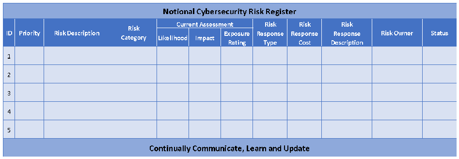
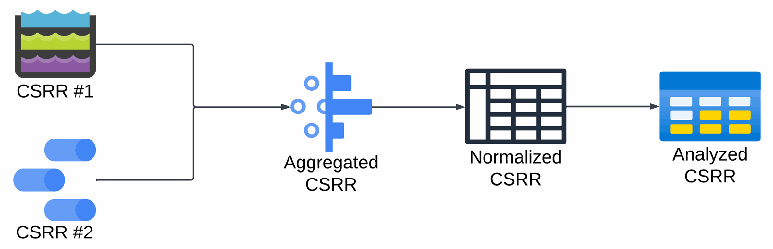
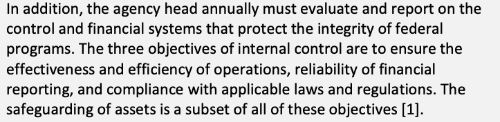
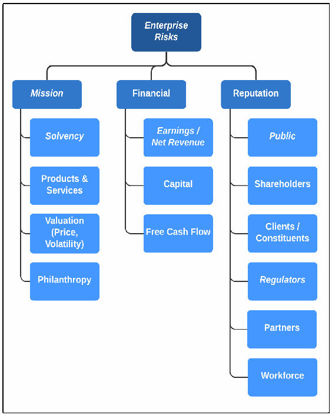
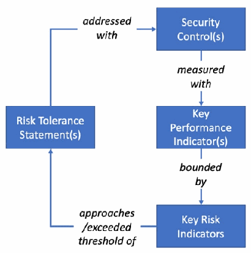

NIST IR 8286C Rev. 1 日本語訳
英語タイトル : Staging Cybersecurity Risks for Enterprise Risk Management and Governance Oversight日本語タイトル : エンタープライズリスク管理とガバナンス監督のためのサイバーセキュリティリスクのステージング
公開日 : 2025-12-18
原文URL : https://csrc.nist.gov/pubs/ir/8286/c/r1/final
翻訳編集 : 自動生成（有志による非公式の日本語訳）, 原文取得日 : 2026-10-31, 訳文 : 421 / 423 ブロック
[要約] NIST IR 8286C Rev. 1 は、NIST IR 8286 を補足するシリーズの第 3 弾として、サイバーセキュリティリスク情報をエンタープライズで活用するための追加の詳細を示す報告書です。情報と技術に対するリスクがエンタープライズのリスクポートフォリオに適切に考慮されるようにする包括的なアプローチの一部として、サイバーセキュリティリスク登録簿（CSRR）に記録された情報をどのように統合できるかを説明します。CSRR の集約、正規化、分析、ERR／ERP へのトップダウンの優先度の決定、リスクガバナンス、サイバーセキュリティリスクの監視・評価・調整を扱います。この一貫した理解は、エンタープライズリスク登録簿とエンタープライズリスクプロファイルを支え、それらがエンタープライズの目標の達成を支えます。
NIST Interagency Report
NIST 省庁間報告書
NIST IR 8286Cr1
NIST IR 8286Cr1
Staging Cybersecurity Risks for Enterprise Risk Management and Governance Oversight
エンタープライズリスク管理とガバナンス監督のためのサイバーセキュリティリスクのステージング
Stephen Quinn Nahla Ivy Matthew Barrett R. K. Gardner Matthew C. Smith Greg Witte
Stephen Quinn Nahla Ivy Matthew Barrett R. K. Gardner Matthew C. Smith Greg Witte
This publication is available free of charge from: https://doi.org/10.6028/NIST.IR.8286Cr1
この刊行物は次の場所から無料で入手できます。https://doi.org/10.6028/NIST.IR.8286Cr1
NIST Interagency Report
NIST 省庁間報告書
NIST IR 8286Cr1
NIST IR 8286Cr1
Staging Cybersecurity Risks for Enterprise Risk Management and Governance Oversight
エンタープライズリスク管理とガバナンス監督のためのサイバーセキュリティリスクのステージング
Stephen Quinn Computer Security Division Information Technology Laboratory
Stephen Quinn Computer Security Division Information Technology Laboratory
Nahla Ivy Enterprise Risk Management Office Office of Financial Resource Management
Nahla Ivy Enterprise Risk Management Office Office of Financial Resource Management
Matthew Barrett CyberESI Group, Inc.
Matthew Barrett CyberESI Group, Inc.
R.K. Gardner New World Technology Partners
R.K. Gardner New World Technology Partners
Matthew C. Smith Seemless Transition LLC
Matthew C. Smith Seemless Transition LLC
Greg Witte Palydin LLC
Greg Witte Palydin LLC
This publication is available free of charge from: https://doi.org/10.6028/NIST.IR.8286Cr1
この刊行物は次の場所から無料で入手できます。https://doi.org/10.6028/NIST.IR.8286Cr1
December 2025
2025 年 12 月
［米国商務省の紋章。公的な標章のため、この非公式サイトには掲載していません。原本 PDF を参照してください。］
U.S. Department of Commerce Howard Lutnick, Secretary
U.S. Department of Commerce Howard Lutnick, Secretary
National Institute of Standards and Technology Craig Burkhardt, Acting Under Secretary of Commerce for Standards and Technology and Acting NIST Director
National Institute of Standards and Technology Craig Burkhardt, Acting Under Secretary of Commerce for Standards and Technology and Acting NIST Director
Certain equipment, instruments, software, or materials, commercial or non-commercial, are identified in this paper in order to specify the experimental procedure adequately. Such identification does not imply recommendation or endorsement of any product or service by NIST, nor does it imply that the materials or equipment identified are necessarily the best available for the purpose.
本書では、実験手順を十分に特定するために、商用・非商用を問わず、特定の機器、計器、ソフトウェア、または資材を明示しています。こうした明示は、NIST がいかなる製品やサービスも推奨または保証することを意味せず、明示した資材や機器がその目的に利用できる最良のものであるとは限らないことも意味しません。
There may be references in this publication to other publications currently under development by NIST in accordance with its assigned statutory responsibilities. The information in this publication, including concepts and methodologies, may be used by federal agencies even before the completion of such companion publications. Thus, until each publication is completed, current requirements, guidelines, and procedures, where they exist, remain operative. For planning and transition purposes, federal agencies may wish to closely follow the development of these new publications by NIST.
本刊行物には、NIST が法令上の責務に従って現在策定中の他の刊行物への言及が含まれる場合があります。概念や方法論を含む本刊行物の情報は、そうした関連刊行物の完成前であっても連邦機関が使用してかまいません。したがって、各刊行物が完成するまでは、現行の要件、ガイドライン、手順が存在する場合には、それらが引き続き有効です。計画と移行のために、連邦機関は、NIST によるこれらの新しい刊行物の策定を注意深く追うことを望む場合があります。
Organizations are encouraged to review all draft publications during public comment periods and provide feedback to NIST. Many NIST cybersecurity publications, other than the ones noted above, are available at https://csrc.nist.gov/publications.
組織には、パブリックコメント期間中にすべてのドラフト刊行物を確認し、NIST にフィードバックを提供することが奨励されています。上記以外にも、NIST の多くのサイバーセキュリティ刊行物が https://csrc.nist.gov/publications で入手できます。
NIST Technical Series Policies
Copyright, Use, and Licensing Statements
NIST Technical Series Publication Identifier Syntax
NIST Technical Series Policies
Copyright, Use, and Licensing Statements
NIST Technical Series Publication Identifier Syntax
Publication History
Approved by the NIST Editorial Review Board on 2025-11-26
Supersedes NIST IR 8286C-upd1 (September 2022, updated March 6, 2024) https://doi.org/10.6028/NIST.IR.8286C-upd1
Publication History
Approved by the NIST Editorial Review Board on 2025-11-26
Supersedes NIST IR 8286C-upd1 (September 2022, updated March 6, 2024) https://doi.org/10.6028/NIST.IR.8286C-upd1
How to Cite this NIST Technical Series Publication:
Quinn SD, Ivy N, Barrett M, Gardner RK, Smith MC, Witte GA (2025) Staging Cybersecurity Risks for Enterprise Risk Management and Governance Oversight. (National Institute of Standards and Technology, Gaithersburg, MD), NIST Interagency Report (IR) NIST IR 8286Cr1. https://doi.org/10.6028/NIST.IR.8286Cr1
How to Cite this NIST Technical Series Publication:
Quinn SD, Ivy N, Barrett M, Gardner RK, Smith MC, Witte GA (2025) Staging Cybersecurity Risks for Enterprise Risk Management and Governance Oversight. (National Institute of Standards and Technology, Gaithersburg, MD), NIST Interagency Report (IR) NIST IR 8286Cr1. https://doi.org/10.6028/NIST.IR.8286Cr1
Author ORCID iDs
Stephen D. Quinn: 0000-0003-1436-684X
Nahla Ivy: 0000-0003-4741-422X
Matthew Barrett: 0000-0002-7689-427X
Matthew C. Smith: 0000-0003-1004-7171
Gregory A. Witte: 0000-0002-5425-1097
Author ORCID iDs
Stephen D. Quinn: 0000-0003-1436-684X
Nahla Ivy: 0000-0003-4741-422X
Matthew Barrett: 0000-0002-7689-427X
Matthew C. Smith: 0000-0003-1004-7171
Gregory A. Witte: 0000-0002-5425-1097
Contact Information
nistir8286@nist.gov
連絡先
nistir8286@nist.gov
National Institute of Standards and Technology
Attn: Applied Cybersecurity Division, Information Technology Laboratory
100 Bureau Drive (Mail Stop 2000) Gaithersburg, MD 20899-2000
National Institute of Standards and Technology
Attn: Applied Cybersecurity Division, Information Technology Laboratory
100 Bureau Drive (Mail Stop 2000) Gaithersburg, MD 20899-2000
Additional Information
Additional information about this publication is available at https://csrc.nist.gov/pubs/ir/8286/c/r1/final, including related content, potential updates, and document history.
追加情報
関連コンテンツ、更新の可能性、文書履歴を含む、本刊行物の追加情報は https://csrc.nist.gov/pubs/ir/8286/c/r1/final で入手できます。
All comments are subject to release under the Freedom of Information Act (FOIA).
すべてのコメントは、情報自由法（FOIA）に基づいて公開される場合があります。
Abstract
概要
This document is the third in a series that supplements NIST Interagency Report (IR) 8286, Integrating Cybersecurity and Enterprise Risk Management (ERM). This series provides additional details regarding enterprise application of cybersecurity risk information; the previous documents, IRs 8286A and 8286B, provide details regarding stakeholder risk direction and methods for assessing and managing cybersecurity risk in light of enterprise objectives. This report, IR 8286C, describes how information recorded in cybersecurity risk registers may be integrated as part of a holistic approach to ensuring that risks to information and technology are properly considered for the enterprise risk portfolio. This cohesive understanding supports an enterprise risk register and enterprise risk profile that, in turn, support the achievement of enterprise objectives.
本書は、NIST 省庁間報告書（IR）8286『Integrating Cybersecurity and Enterprise Risk Management (ERM)』を補足するシリーズの第 3 弾です。このシリーズは、サイバーセキュリティリスク情報をエンタープライズで活用するための追加の詳細を示します。前の文書である IR 8286A と 8286B は、ステークホルダーのリスクの方向性と、エンタープライズの目標に照らしてサイバーセキュリティリスクを評価・管理する方法の詳細を示しました。本報告書 IR 8286C は、情報と技術に対するリスクがエンタープライズのリスクポートフォリオに適切に考慮されるようにする包括的なアプローチの一部として、サイバーセキュリティリスク登録簿に記録された情報をどのように統合できるかを説明します。この一貫した理解は、エンタープライズリスク登録簿とエンタープライズリスクプロファイルを支え、それらがエンタープライズの目標の達成を支えます。
Keywords
キーワード
cyber risk management; cybersecurity risk management (CSRM); cybersecurity risk measurement; cybersecurity risk register (CSRR); enterprise risk management (ERM); enterprise risk profile (ERP); enterprise risk register (ERR); key performance indicator (KPI); key risk indicator (KRI); risk prioritization.
cyber risk management; cybersecurity risk management (CSRM); cybersecurity risk measurement; cybersecurity risk register (CSRR); enterprise risk management (ERM); enterprise risk profile (ERP); enterprise risk register (ERR); key performance indicator (KPI); key risk indicator (KRI); risk prioritization.
Reports on Computer Systems Technology
コンピュータシステム技術に関する報告書
The Information Technology Laboratory (ITL) at the National Institute of Standards and Technology (NIST) promotes the U.S. economy and public welfare by providing technical leadership for the Nation’s measurement and standards infrastructure. ITL develops tests, test methods, reference data, proof of concept implementations, and technical analyses to advance the development and productive use of information technology. ITL’s responsibilities include the development of management, administrative, technical, and physical standards and guidelines for the cost-effective security and privacy of other than national security-related information in federal information systems.
米国国立標準技術研究所（NIST）の情報技術研究所（ITL）は、国の測定・標準インフラに技術的なリーダーシップを提供することで、米国経済と公共の福祉を促進しています。ITL は、情報技術の発展と生産的な利用を進めるために、テスト、テスト方法、参照データ、概念実証実装、技術分析を開発しています。ITL の責務には、連邦情報システムにおける国家安全保障に関わらない情報について、費用対効果の高いセキュリティとプライバシーを確保するための、管理上、運用上、技術上、物理上の標準とガイドラインの策定が含まれます。
Audience
想定読者
The primary audience for this publication includes both federal and non-federal cybersecurity professionals at all levels who understand cybersecurity but may be unfamiliar with the details of enterprise risk management (ERM).
本刊行物の主な読者は、連邦および非連邦の、あらゆる階層のサイバーセキュリティの専門家であり、サイバーセキュリティは理解しているものの、エンタープライズリスク管理（ERM）の詳細には詳しくない可能性がある人々です。
The secondary audience includes both federal and non-federal corporate officers, high-level executives, ERM officers and staff members, and others who understand ERM but may be unfamiliar with the details of cybersecurity.
副次的な読者は、連邦および非連邦の、企業の役員、上級幹部、ERM の責任者と職員などであり、ERM は理解しているものの、サイバーセキュリティの詳細には詳しくない可能性がある人々です。
All readers are expected to gain an improved understanding of how cybersecurity risk management (CSRM) and ERM complement and relate to each other as well as the benefits of integrating their use.
すべての読者は、サイバーセキュリティリスク管理（CSRM）と ERM が互いにどのように補完し合い、関連しているかについての理解を深め、両者を統合して使うことの利点も理解できると期待されます。
Document Conventions
文書の表記規則
For the purposes of this document, the terms “cybersecurity” and “information security” are used interchangeably. While information security is generally considered to encompass the cybersecurity domain, the term “cybersecurity” has expanded in conventional usage to be equivalent to information security. Likewise, the terms “cybersecurity risk management” (CSRM) and “information security risk management” (ISRM) are used interchangeably based on the same reasoning.
本書では、「サイバーセキュリティ」と「情報セキュリティ」の用語を同じ意味で使います。情報セキュリティは、一般にサイバーセキュリティの領域を包含するものと考えられていますが、「サイバーセキュリティ」という用語は、慣用的な使い方では情報セキュリティと同等の意味に拡大しています。同じ理由から、「サイバーセキュリティリスク管理」（CSRM）と「情報セキュリティリスク管理」（ISRM）の用語も同じ意味で使います。
Note to Readers
読者への注記
This document references government-mandated federal agency enterprise and cybersecurity risk requirements to demonstrate alignment with existing federal uses. Such references are included to provide guidance and to help bridge private and public ERM processes. However, these references must not be interpreted as mandates.
本書は、既存の連邦での利用との整合を示すために、政府が義務付ける連邦機関のエンタープライズおよびサイバーセキュリティリスクの要件に言及しています。こうした言及は、ガイダンスを提供し、民間と公共の ERM プロセスを橋渡しするために含めています。ただし、これらの言及を義務として解釈してはなりません。
Concurrently, the following documents provide the high-level outcome statements to implement for the content contained within the IR 8286 series:
並行して、次の文書が、IR 8286 シリーズに含まれる内容を実装するための高水準の成果記述を提供しています。
•The NIST Cybersecurity Framework (CSF) 2.0 [3]
•NIST Cybersecurity Framework（CSF）2.0 [3]
•NIST Special Publication (SP) 800-221, Enterprise Impact of Information and Communications Technology Risk: Governing and Managing ICT Risk Programs Within an Enterprise Risk Portfolio [4]
•NIST 特別刊行物（SP）800-221『Enterprise Impact of Information and Communications Technology Risk: Governing and Managing ICT Risk Programs Within an Enterprise Risk Portfolio』[4]
•SP 800-221A, Information and Communications Technology (ICT) Risk Outcomes: Integrating ICT Risk Management Programs with the Enterprise Risk Portfolio [5]
•SP 800-221A『Information and Communications Technology (ICT) Risk Outcomes: Integrating ICT Risk Management Programs with the Enterprise Risk Portfolio』[5]
Patent Disclosure Notice
特許開示に関する通知
NOTICE: ITL has requested that holders of patent claims whose use may be required for compliance with the guidance or requirements of this publication disclose such patent claims to ITL. However, holders of patents are not obligated to respond to ITL calls for patents and ITL has not undertaken a patent search in order to identify which, if any, patents may apply to this publication.
通知：ITL は、本刊行物のガイダンスまたは要件への準拠のために使用が必要となりうる特許請求の権利者に対し、その特許請求を ITL に開示するよう求めています。ただし、特許権者には、ITL による特許の呼びかけに応じる義務はなく、ITL は、本刊行物に適用される特許があるかどうか、あるとすればどれかを特定するための特許調査を行っていません。
As of the date of publication and following call(s) for the identification of patent claims whose use may be required for compliance with the guidance or requirements of this publication, no such patent claims have been identified to ITL.
公表日の時点で、本刊行物のガイダンスまたは要件への準拠のために使用が必要となりうる特許請求の特定を求める呼びかけを行った後も、そのような特許請求は ITL に特定されていません。
No representation is made or implied by ITL that licenses are not required to avoid patent infringement in the use of this publication.
ITL は、本刊行物の使用にあたって特許侵害を避けるためにライセンスが不要であるという表明を、明示的にも黙示的にも行いません。
Table of Contents
目次
List of Tables
表の一覧
List of Figures
図の一覧
Acknowledgments
謝辞
The authors thank everyone who has contributed to Revision 1 of this publication and provided feedback on its content, including the following: Daniel Eliot of NIST; Yasin Carkci (CTO/Cybersecurity Architect, Finance); Thomas Scott Crumbaugh (Emergency Preparedness & Response Operations (EPRO), Department of Health and Human Services (HHS)); Dr. Robert Mark (Managing Director, Black Diamond); Andrew Shea (President, CRFQ); Xiang Zheng Teo (Vice President of Advisory, Ensign InfoSecurity); The FAIR Institute - Standards Committee Members: Michael Coden (Cofounder and Associate Director, Cybersecurity at MIT Sloan); Pankaj Goyal (Director, Standards and Research, FAIR Institute); Alexander Holbrook (Principal, Boston Consulting Group (BCG)); Jack Jones (Author and Chairman Emeritus, FAIR Institute); Pierre Olodo (Senior Lead, Cyber Risk, Richemont); Mike Radigan (Senior Advisor, Cisco); Jan Reich (Data Protection & Risk Management, Novartis); Rob Moore (VP, Technology Risk Management, Mastercard); and Denny Wan (Chair, Reasonable Security Institute); FAIR Institute Management (Nick Sanna (President & Founder); Todd Tucker (Managing Director); Bernadette Dunn (Head of Education); Luke Bader (Director of Member Programs); and Other Contributing Members: (AJ Anand (Director, Transformation and Continuous Improvement, Global Security, ADP); Heather Dart (Senior Manager, Information Risk Management, Danaher Corporation); Dana Haubold (Cybersecurity Advisor, DH Cyber Security Consultancy); Glen Garmes (CISO, Old Republic International); Marko Hamel (Product Security & Risk Expert, SAP); Anthony Leatherwood (Director, Technology Risk and Cybersecurity, Plains All American); Vincent Milette (GRC Transformation Delivery Manager, Air Canada); Steve Reznik (Lead Security Analyst, TriNet); and Timothy Szerlong (Information Security Risk Management Consultant, Unum).
著者らは、本刊行物の改訂第 1 版に貢献し、その内容にフィードバックを寄せたすべての方々に感謝します。これには次の方々が含まれます。NIST の Daniel Eliot、Yasin Carkci (CTO/Cybersecurity Architect, Finance)、Thomas Scott Crumbaugh (Emergency Preparedness & Response Operations (EPRO), Department of Health and Human Services (HHS))、Dr. Robert Mark (Managing Director, Black Diamond)、Andrew Shea (President, CRFQ)、Xiang Zheng Teo (Vice President of Advisory, Ensign InfoSecurity)、The FAIR Institute - Standards Committee Members：Michael Coden (Cofounder and Associate Director, Cybersecurity at MIT Sloan)、Pankaj Goyal (Director, Standards and Research, FAIR Institute)、Alexander Holbrook (Principal, Boston Consulting Group (BCG))、Jack Jones (Author and Chairman Emeritus, FAIR Institute)、Pierre Olodo (Senior Lead, Cyber Risk, Richemont)、Mike Radigan (Senior Advisor, Cisco)、Jan Reich (Data Protection & Risk Management, Novartis)、Rob Moore (VP, Technology Risk Management, Mastercard)、Denny Wan (Chair, Reasonable Security Institute)、FAIR Institute Management (Nick Sanna (President & Founder); Todd Tucker (Managing Director); Bernadette Dunn (Head of Education); Luke Bader (Director of Member Programs))、およびその他の貢献者：(AJ Anand (Director, Transformation and Continuous Improvement, Global Security, ADP); Heather Dart (Senior Manager, Information Risk Management, Danaher Corporation); Dana Haubold (Cybersecurity Advisor, DH Cyber Security Consultancy); Glen Garmes (CISO, Old Republic International); Marko Hamel (Product Security & Risk Expert, SAP); Anthony Leatherwood (Director, Technology Risk and Cybersecurity, Plains All American); Vincent Milette (GRC Transformation Delivery Manager, Air Canada); Steve Reznik (Lead Security Analyst, TriNet); and Timothy Szerlong (Information Security Risk Management Consultant, Unum)。
The authors also wish to thank all individuals, organizations, and enterprises that contributed to the creation of the original version of this document. This includes Lisa Carnahan, Amy Mahn, Matt Scholl, Isabel Van Wyk, Jim Foti, Daniel Eliot, and Kevin Stine of NIST; Larry Feldman and Daniel Topper of Huntington Ingalls Industries; Mat Heyman of Impresa Management Solutions; and Scott Crumbaugh of United States Center for Medicare & Medicaid Services. Organizations and individuals who provided feedback on the public comment drafts include Piyavauth Bhutrakarn, Julie Chua, Khairun Pannah, Charles Livingston, Rehana Mwalimu, Michael Young, and the United States Department of Health and Human Services as part of the Cyber-ERM Community of Interest; Joel Crook, Dr. Pat Goguen, Denis Maratos, Michael Whitley, and Andrew Resseguie of Consolidated Nuclear Security, LLC; Scott Bouboulis of CTIA; Jamie Ferguson and Lori Potter of Kaiser Permanente; Kelly Hood of Optic Cyber Solutions; Edward J. DeMarco, Jr. of the Risk Management Association; and Amy Hamilton of the U.S. Department of Energy.
著者らは、本書の原版の作成に貢献したすべての個人、組織、企業にも感謝します。これには、NIST の Lisa Carnahan、Amy Mahn、Matt Scholl、Isabel Van Wyk、Jim Foti、Daniel Eliot、Kevin Stine、Huntington Ingalls Industries の Larry Feldman と Daniel Topper、Impresa Management Solutions の Mat Heyman、United States Center for Medicare & Medicaid Services の Scott Crumbaugh が含まれます。パブリックコメント版にフィードバックを寄せた組織と個人には、Cyber-ERM Community of Interest の一員としての Piyavauth Bhutrakarn、Julie Chua、Khairun Pannah、Charles Livingston、Rehana Mwalimu、Michael Young と United States Department of Health and Human Services、Consolidated Nuclear Security, LLC の Joel Crook、Dr. Pat Goguen、Denis Maratos、Michael Whitley、Andrew Resseguie、CTIA の Scott Bouboulis、Kaiser Permanente の Jamie Ferguson と Lori Potter、Optic Cyber Solutions の Kelly Hood、Risk Management Association の Edward J. DeMarco, Jr.、U.S. Department of Energy の Amy Hamilton が含まれます。
Executive Summary
エグゼクティブサマリー
This NIST Interagency Report (IR) explores methods for integrating disparate cybersecurity risk management (CSRM) information from throughout the enterprise to create a composite enterprise risk profile to inform company executives’ and agency officials’ enterprise risk management (ERM) deliberations, decisions, and actions. It describes the inclusion of cybersecurity risks as part of financial, valuation, mission, operational and reputation exposure. Fig. 1 expands the enterprise risk cycle from previous reports to remind the reader that the input and sentiments of external stakeholders are a critical element of risk decisions.1
この NIST 省庁間報告書（IR）は、エンタープライズ全体に散在するサイバーセキュリティリスク管理（CSRM）情報を統合して、企業の役員や機関の職員によるエンタープライズリスク管理（ERM）の審議、決定、行動に情報を提供する、統合的なエンタープライズリスクプロファイルを作成する方法を探ります。財務、評価額、ミッション、運用、評判に関するエクスポージャーの一部としてサイバーセキュリティリスクを含めることを説明します。図 1 は、これまでの報告書のエンタープライズリスクサイクルを拡張し、外部ステークホルダーの意見や心証が、リスクの決定に不可欠な要素であることを読者に思い起こさせます。1
![Flow diagram of the enterprise risk cycle across three tiers labeled on the left: Enterprise Level, Org Level, and System Level. A left column bracketed "8286A" contains, from top to bottom: Enterprise Mission Goals and Obj.; Risk Context and Strategy; Risk Appetite Statements; Risk Tolerance Statements; Risk Scenario Identification; Risk Analysis. A two-headed arrow links Enterprise Mission Goals and Obj. with Risk Context and Strategy, and arrows lead down the column. From Risk Analysis an arrow runs to Risk Evaluation at the bottom of the right column, bracketed "8286B" at the bottom and "8286C" (highlighted in purple) at the top. The right column reads upward: Risk Evaluation; Risk Treatment; Reporting and Monitoring; Aggregation and Normalization of Risk Registers; Integration of Cybersecurity Risk into ERM Profile; Adjustments to Risk Direction and Processes (including input from External Stakeholders*); Ongoing Assessment and Reporting. Arrows lead from Aggregation and Normalization of Risk Registers back to Risk Tolerance Statements, and from Ongoing Assessment and Reporting back to Risk Context and Strategy.](assets/ir-8286cr1/p0011-figure-01.png)
企業のリスクサイクルを、左側に示した 3 つの階層（Enterprise Level：企業レベル、Org Level：組織レベル、System Level：システムレベル）にわたって示す流れ図です。「8286A」と括られた左の列には、上から順に Enterprise Mission Goals and Obj.（企業のミッション・目標・目的）、Risk Context and Strategy（リスクの状況と戦略）、Risk Appetite Statements（リスク選好度の記述）、Risk Tolerance Statements（リスク許容度の記述）、Risk Scenario Identification（リスクシナリオの特定）、Risk Analysis（リスク分析）があります。企業のミッション・目標・目的とリスクの状況と戦略は双方向の矢印で結ばれ、列を下へ矢印が続きます。リスク分析からは、右の列の最下段の Risk Evaluation（リスク評価）へ矢印があります。右の列は下側が「8286B」、上側が紫で強調された「8286C」で括られ、下から順に Risk Evaluation（リスク評価）、Risk Treatment（リスク対応）、Reporting and Monitoring（報告と監視）、Aggregation and Normalization of Risk Registers（リスク登録簿の集約と正規化）、Integration of Cybersecurity Risk into ERM Profile（サイバーセキュリティリスクの ERM プロファイルへの統合）、Adjustments to Risk Direction and Processes（including input from External Stakeholders*）（リスクの方向付けとプロセスの調整（外部の利害関係者*からの意見を含む））、Ongoing Assessment and Reporting（継続的な評価と報告）と上へ進みます。リスク登録簿の集約と正規化からリスク許容度の記述へ、継続的な評価と報告からリスクの状況と戦略へ、それぞれ戻る矢印があります。
Fig. 1. IR 8286 [6] series publications describe CSRM/ERM integration
図 1. CSRM／ERM 統合を説明する IR 8286 [6] シリーズの刊行物
The importance of information and technology risks to the enterprise risk posture makes it critical to ensure broad visibility about risk-related activities to protect enterprise reputation, finances, and objectives. A comprehensive enterprise risk register (ERR) and enterprise risk profile (ERP) support communication and disclosure requirements. The integration of CSRM activities supports understanding of exposures related to corporate reporting (e.g., income statements, balance sheets, and cash flow) and similar requirements (e.g., reporting for appropriation and oversight authorities) for public-sector entities.
情報と技術のリスクはエンタープライズのリスク態勢にとって重要であるため、エンタープライズの評判、財務、目標を守るために、リスク関連の活動について幅広い可視性を確保することが不可欠です。包括的なエンタープライズリスク登録簿（ERR）とエンタープライズリスクプロファイル（ERP）は、コミュニケーションと開示の要件を支えます。CSRM 活動を統合することは、企業の報告（たとえば損益計算書、貸借対照表、キャッシュフロー）に関連するエクスポージャーの理解と、公共部門の主体についての同様の要件（たとえば予算配分機関や監督機関への報告）の理解を支えます。
This document explores the methods for integrating disparate CSRM information from throughout the enterprise to create a composite understanding of the various cyber risks that may have an impact on the enterprise’s objectives. The report continues the discussion where IR 8286B [7] concluded by focusing on the integration of data points to create a comprehensive view of opportunities and threats to the enterprise’s information and technology. Notably, because cybersecurity risk is only one of dozens of risk types in the enterprise risk universe, that risk understanding will itself be integrated with similar aggregate observations of other collective risk points.
本書は、エンタープライズ全体に散在する CSRM 情報を統合して、エンタープライズの目標に影響を及ぼしうるさまざまなサイバーリスクの統合的な理解を作成する方法を探ります。本報告書は、IR 8286B [7] が結論を述べたところから議論を続け、エンタープライズの情報と技術に対する機会と脅威の包括的な全体像を作成するためのデータポイントの統合に焦点を当てます。特に、サイバーセキュリティリスクはエンタープライズのリスクユニバースにある数十種類のリスクの一つにすぎないため、そのリスクの理解は、他のリスクの集合的なポイントについての同様の集約された観察と統合されることになります。
This document discusses how risk governance elements such as enterprise risk strategy, appetite, tolerance, and capacity direct risk performance. By monitoring the results of CSRM activities at each hierarchical level, senior leaders can adjust various governance components (e.g., policy, procedures, workforce skills) to achieve risk objectives. This report describes how the CSRM Monitor, Evaluate, and Adjust (MEA) process supports ERM and a repeatable and consistent use of terms, including how the context of various terms can vary depending on the enterprise’s perspective. That understanding helps to ensure effective CSRM communication and coordination.
本書は、エンタープライズのリスク戦略、選好度、許容度、キャパシティなどのリスクガバナンスの要素が、リスクのパフォーマンスをどのように方向付けるかを論じます。上級幹部は、各階層での CSRM 活動の結果を監視することで、リスク目標を達成するために、さまざまなガバナンス要素（たとえば方針、手順、人材のスキル）を調整できます。本報告書は、CSRM の監視・評価・調整（MEA）プロセスが ERM をどのように支援し、用語を繰り返し一貫して使うことをどのように支援するかを説明します。これには、さまざまな用語の文脈がエンタープライズの視点によってどのように異なりうるかも含まれます。この理解は、効果的な CSRM のコミュニケーションと連携の確保に役立ちます。
While ERM is a well-established field, there is an opportunity to expand and improve the body of knowledge regarding coordination among cybersecurity risk managers – particularly the integration of first and third party/supply chain risk management - and those managing risk at the most senior levels. This series is intended to introduce this integration while recognizing the need for additional research and collaboration. Further points of discussion include IR 8286D’s focus on business impact analysis (BIA), which is a foundation of understanding exposure and opportunity [8]. NIST also continues to perform extensive research and publication development regarding metrics, a topic that will certainly support ERM/CSRM performance measurement, monitoring, and communication.
ERM は確立された分野ですが、サイバーセキュリティリスク管理者と最上級レベルでリスクを管理する者の間の連携、特に自社のリスク管理とサードパーティ／サプライチェーンのリスク管理の統合について、知識体系を拡充し改善する余地があります。このシリーズは、追加の調査と協力の必要性を認識しつつ、この統合を紹介することを意図しています。議論のさらなる論点には、エクスポージャーと機会を理解する基礎である事業影響度分析（BIA）に焦点を当てた IR 8286D があります [8]。NIST はまた、メトリクスに関する広範な調査と刊行物の策定を引き続き行っており、このトピックは ERM／CSRM のパフォーマンス測定、監視、コミュニケーションを確実に支えます。
This document also describes the use of frameworks for ERM and governance oversight. Section 4 of this publication provides details regarding the NIST Cybersecurity Framework, or CSF, that is well-suited for this purpose. In particular, the GOVERN function of the NIST CSF provides a high-level framework that’s consistent with this document series, enabling information gathering regarding organizational context (including risk criteria); risk strategy, policy, and roles; supply chain risk considerations; and oversight methods.
本書は、ERM とガバナンス監督のためのフレームワークの利用も説明します。本刊行物の 4 節は、この目的に適した NIST サイバーセキュリティフレームワーク（CSF）の詳細を示します。特に、NIST CSF の統治（GOVERN）機能は、本書シリーズに整合した高水準のフレームワークを提供し、組織のコンテキスト（リスク基準を含む）、リスク戦略、方針、役割、サプライチェーンのリスクに関する考慮事項、監督の方法に関する情報の収集を可能にします。
This document continues the discussion regarding the inclusion of CSRM priorities and results in support of an improved understanding about organization and enterprise impacts of cybersecurity risks on financial, reputation, operational and mission considerations.
本書は、サイバーセキュリティリスクが財務、評判、運用、ミッションの考慮事項に及ぼす組織とエンタープライズへの影響についての理解を深めることを支援するために、CSRM の優先事項と結果を含める議論を続けます。
1. Introduction
1. はじめに
This document provides guidance that supplements NIST Interagency Report (IR) 8286, Integrating Cybersecurity and Enterprise Risk Management (ERM) [6]. IR 8286C is the third in a series of companion publications that provide guidance for implementing, monitoring, and maintaining an enterprise approach designed to integrate cybersecurity risk management (CSRM) into ERM.2 Readers of this report will benefit from reviewing the foundation document, IR 8286, since many of the concepts described in this report are based on practices and definitions established in that IR. Each publication in the series, as illustrated in Fig. 2, provides detailed guidance to supplement topics from IR 8286.
本書は、NIST 省庁間報告書（IR）8286『Integrating Cybersecurity and Enterprise Risk Management (ERM)』[6] を補足するガイダンスを提供します。IR 8286C は、サイバーセキュリティリスク管理（CSRM）を ERM に統合するよう設計されたエンタープライズのアプローチを、実装、監視、維持するためのガイダンスを提供する、一連の補完的な刊行物の第 3 弾です。2 本報告書で説明する概念の多くは、その IR で確立された実践と定義に基づいているため、本報告書の読者は、基盤となる文書である IR 8286 を確認しておくと有益です。図 2 に示すように、シリーズの各刊行物は、IR 8286 のトピックを補足する詳細なガイダンスを提供します。
Activities in dark blue boxes are described in this report and are identified below; those in other documents are shown in a lighter shade.
濃い青の枠で示した活動は本報告書で説明しており、以下で明示しています。ほかの文書で説明している活動は薄い色で示しています。
•IR 8286A details the context, scenario identification, and analysis of the likelihood and impacts of cybersecurity risk. It also includes methods to convey risk information, such as cybersecurity risk registers (CSRRs) and risk detail records [9].
•IR 8286A は、サイバーセキュリティリスクのコンテキスト、シナリオの特定、発生可能性と影響の分析について詳しく説明します。サイバーセキュリティリスク登録簿（CSRR）やリスク詳細記録など、リスク情報を伝達する方法も含みます [9]。
•IR 8286B describes ways to apply risk analysis to help prioritize cybersecurity risk, evaluate and select appropriate risk responses, and communicate risk activities as part of an enterprise CSRM strategy [7].
•IR 8286B は、サイバーセキュリティリスクの優先順位付けを助け、適切なリスク対応を評価・選択し、エンタープライズの CSRM 戦略の一環としてリスク活動を伝達するために、リスク分析を適用する方法を説明します [7]。
•IR 8286C (this report) describes processes for aggregating information from CSRM activities throughout the enterprise. As that information is integrated and harmonized, organizational and enterprise leaders monitor the achievement of risk objectives, consider changes to risk strategy, and use the combined information to maintain awareness of risk factors and positive risks (opportunities).
•IR 8286C（本報告書）は、エンタープライズ全体の CSRM 活動から情報を集約するプロセスを説明します。その情報が統合・調和されるにつれて、組織およびエンタープライズのリーダーは、リスク目標の達成を監視し、リスク戦略の変更を検討し、統合された情報を使ってリスク要因と正のリスク（機会）への認識を維持します。
•IR 8286D describes considerations for documenting and analyzing business impacts that result in a full or partial loss of the confidentiality, integrity, or availability of a mission-essential resource [8].
•IR 8286D は、ミッション上不可欠な資源の機密性、完全性、可用性の全部または一部の喪失をもたらす事業影響を、文書化し分析するための考慮事項を説明します [8]。
![The same diagram as Fig. 1, with the IR 8286C activities in dark blue and all other activities in a lighter shade. Tiers on the left: Enterprise Level, Org Level, System Level. Left column (8286A, light): Enterprise Mission Goals and Obj.; Risk Context and Strategy; Risk Appetite Statements; Risk Tolerance Statements; Risk Scenario Identification; Risk Analysis. Right column, bottom part (8286B, light): Risk Evaluation; Risk Treatment; Reporting and Monitoring. Right column, top part (8286C, dark blue, outlined in purple), reading upward: Aggregation & Normalization of Risk Registers; Integration of Cybersecurity Risk into ERM Profile; Adjustments to Risk Direction and Processes (including input from External Stakeholders*); Ongoing Assessment and Reporting. Arrows lead from Aggregation & Normalization of Risk Registers to Risk Tolerance Statements and from Ongoing Assessment and Reporting to Risk Context and Strategy.](assets/ir-8286cr1/p0014-figure-01.png)
図 1 と同じ図で、IR 8286C の活動を濃い青で、それ以外の活動を淡い色で示しています。左側の階層は Enterprise Level（企業レベル）、Org Level（組織レベル）、System Level（システムレベル）です。左の列（8286A、淡色）は Enterprise Mission Goals and Obj.（企業のミッション・目標・目的）、Risk Context and Strategy（リスクの状況と戦略）、Risk Appetite Statements（リスク選好度の記述）、Risk Tolerance Statements（リスク許容度の記述）、Risk Scenario Identification（リスクシナリオの特定）、Risk Analysis（リスク分析）です。右の列の下側（8286B、淡色）は Risk Evaluation（リスク評価）、Risk Treatment（リスク対応）、Reporting and Monitoring（報告と監視）です。右の列の上側（8286C、濃い青、紫の枠）は下から順に Aggregation & Normalization of Risk Registers（リスク登録簿の集約と正規化）、Integration of Cybersecurity Risk into ERM Profile（サイバーセキュリティリスクの ERM プロファイルへの統合）、Adjustments to Risk Direction and Processes（including input from External Stakeholders*）（リスクの方向付けとプロセスの調整（外部の利害関係者*からの意見を含む））、Ongoing Assessment and Reporting（継続的な評価と報告）です。リスク登録簿の集約と正規化からリスク許容度の記述へ、継続的な評価と報告からリスクの状況と戦略へ矢印があります。
Fig. 2. IR 8286C activities as part of CSRM/ERM integration
図 2. CSRM／ERM 統合の一部としての IR 8286C の活動
The terms organization and enterprise are often used interchangeably. This report defines both an organization and an enterprise as an entity of any size, complexity, or positioning within a larger organization structure (e.g., a federal agency or company). It further defines the enterprise level as a unique type of organization, one in which individual senior leaders govern at the highest point in the hierarchy and have unique risk management responsibilities, such as fiduciary reporting and establishing risk strategy (e.g., risk appetite, methods). Notably, government and private industry CSRM and ERM programs have different oversight and reporting requirements (e.g., accountability to Congress versus accountability to shareholders), but the general needs and processes are similar.
組織とエンタープライズという用語はしばしば同じ意味で使われます。本報告書では、組織もエンタープライズも、規模、複雑さ、より大きな組織構造内での位置付け（たとえば連邦機関や企業）を問わないあらゆる主体と定義します。さらに、エンタープライズレベルを、階層の最上位で個々の上級幹部が統治し、受託者としての報告やリスク戦略（たとえばリスク選好度、手法）の確立など、固有のリスク管理責任を負う、特有の種類の組織と定義します。特に、政府と民間企業の CSRM および ERM プログラムでは、監督と報告の要件（たとえば議会への説明責任と株主への説明責任）が異なりますが、一般的なニーズとプロセスは似ています。
1.1. Purpose and Scope
1.1. 目的と範囲
This document brings together elements from other documents in the series to help inform decisions by leaders throughout the enterprise. Those decisions include intentional steps to capitalize on opportunities and proactive steps to avoid harmful surprises that might derail those opportunities. Managers at all enterprise levels depend on senior leaders to define the mission and objectives for the enterprise, and those senior leaders depend on risk practitioners to take appropriate actions and report them in a consistent and timely manner. Managing cybersecurity risks (especially as part of ERM activities) can be highly beneficial. For example, in non-governmental entities, such management often has a positive impact on an enterprise’s ability to obtain cybersecurity insurance coverage, possibly reducing premiums or raising the coverage threshold. Decisions and directives about risk acceptance and risk mitigation inform investment priorities and workforce allocation.
本書は、エンタープライズ全体のリーダーによる意思決定の参考となるよう、シリーズの他の文書の要素をまとめています。それらの決定には、機会を活用するための意図的な措置と、その機会を妨げかねない有害な不意打ちを避けるための先を見越した措置が含まれます。エンタープライズのあらゆる階層の管理者は、エンタープライズのミッションと目標を定める上級幹部に依存しており、上級幹部は、リスク実務者が適切な措置を講じ、それらを一貫して適時に報告することに依存しています。サイバーセキュリティリスクを（特に ERM 活動の一部として）管理することは、大きな利益をもたらす場合があります。たとえば、非政府主体では、そのような管理によってサイバーセキュリティ保険の補償を得るエンタープライズの能力が高まり、保険料が下がったり、補償限度額が引き上げられたりする場合があります。リスク受容とリスク軽減に関する決定や指示は、投資の優先順位付けと人員配置の判断材料となります。
This IR series focuses heavily on the use of risk registers to record and share information within and among hierarchical levels. The goal of risk management is not simply to maintain lists of risks, but also to support effective decision-making at each of those levels. The CSRR is one of many tools to help managers and leaders continually monitor activities, evaluate available options (both to exploit opportunities and to mitigate potential harms), and adjust actions in such a way as to ensure mission success. This document describes the integration of the various CSRM activities, as described within the CSRRs, to contribute to a prioritized profile of the enterprise’s risk. As with other risk elements, the maintenance of an enterprise risk profile (ERP) itself is not a goal but simply another tool for helping senior leaders and enterprise executives chart and maintain a course for achieving mission success.
この IR シリーズは、階層レベル内および階層レベル間で情報を記録し共有するために、リスク登録簿を利用することに重点を置いています。リスク管理の目標は、単にリスクの一覧を維持することではなく、各階層での効果的な意思決定を支援することでもあります。CSRR は、管理者とリーダーが活動を継続的に監視し、利用可能な選択肢（機会を活用するものと潜在的な害を軽減するものの両方）を評価し、ミッションの成功を確実にするよう措置を調整するのに役立つ数多くのツールの一つです。本書は、CSRR に記述されているさまざまな CSRM 活動を統合し、エンタープライズのリスクに優先順位を付けたプロファイルの作成に寄与させる方法を説明します。他のリスク要素と同様、エンタープライズリスクプロファイル（ERP）の維持自体は目標ではなく、上級幹部やエンタープライズの役員がミッション成功への進路を描き、維持するのに役立つもう一つのツールにすぎません。
In support of transforming lists of risks and actions into a prioritized ERP, this document describes four key ERM activities:
リスクと措置の一覧を優先順位付けされた ERP に変えることを支援するため、本書は 4 つの主要な ERM 活動を説明します。
1.Aggregation, normalization, and analysis (including optimization) of CSRM data from throughout the enterprise to create a composite CSRM understanding;
1.エンタープライズ全体の CSRM データの集約、正規化、分析（最適化を含む）を行い、統合的な CSRM の理解を作成すること。
2.Integration of data regarding key cyber risks that should be included in overarching enterprise-level risk artifacts, such as the enterprise risk register (ERR) and ERP;
2.エンタープライズリスク登録簿（ERR）や ERP など、エンタープライズレベルの包括的なリスク成果物に含めるべき、主要なサイバーリスクに関するデータを統合すること。
3.Adjustments to risk direction (including risk limits and risk treatment options) within governance system components to optimize enterprise CSRM results; and
3.エンタープライズの CSRM の成果を最適化するために、ガバナンスシステムの構成要素の中で、リスクの方向性（リスク限度とリスク対応の選択肢を含む）を調整すること。
4.Monitoring and reporting at various hierarchical levels to maintain situational awareness regarding changes to the risk landscape and CSRM outcomes.
4.リスク環境と CSRM の成果の変化についての状況認識を維持するために、さまざまな階層レベルで監視と報告を行うこと。
These activities are part of an ongoing cycle. As adjustments are made to the ERM direction and activities, the results are reported to keep stakeholders informed and to improve subsequent risk assessments. The cycle also helps to confirm or improve decisions regarding the value and categorization of important assets that enable mission-critical (and mission-essential) functions. This determination is important to support the business impact analysis (BIA) from a loss or degradation of such assets. Additional information about BIA and asset valuation is available in IR 8286D [8].
これらの活動は継続的なサイクルの一部です。ERM の方向性と活動に調整が加えられると、その結果が報告され、ステークホルダーに情報が提供されるとともに、その後のリスク評価が改善されます。このサイクルは、ミッションクリティカル（およびミッションエッセンシャル）な機能を可能にする重要な資産の価値と分類に関する決定の確認や改善にも役立ちます。この判断は、そうした資産の喪失や劣化による事業影響度分析（BIA）を支援するために重要です。BIA と資産評価の追加情報は、IR 8286D [8] で入手できます。
Because cybersecurity risk is only one of dozens of risk types affecting an enterprise, cybersecurity risk understanding is integrated with similar aggregate observations of other collective risk points. When this disparate data is collected and analyzed by those in an enterprise risk governance role, senior leaders can create or maintain a comprehensive ERR and ERP, enabling effective stakeholder communication regarding ERM effectiveness, changes to the entity’s risk posture, and achievement of enterprise ERM strategy.
サイバーセキュリティリスクは、エンタープライズに影響する数十種類のリスクの一つにすぎないため、サイバーセキュリティリスクの理解は、他のリスク全般について集約された観察結果と統合されます。エンタープライズのリスクガバナンスを担う者がこれらの多様なデータを収集して分析すると、上級幹部は包括的な ERR と ERP を作成または維持でき、ERM の有効性、主体のリスク態勢の変化、エンタープライズの ERM 戦略の達成状況について、ステークホルダーとの効果的な意思疎通が可能になります。
This publication discusses how risk governance elements such as enterprise risk strategy, appetite, tolerance, and capacity direct risk performance. By monitoring the results of CSRM activities at each hierarchical level, senior leaders can adjust various governance components (e.g., policy, procedures, skills, governance structures) to achieve risk objectives.
本刊行物は、エンタープライズのリスク戦略、リスク選好度、リスク許容度、リスクキャパシティなどのリスクガバナンス要素が、リスクパフォーマンスをどのように方向付けるかを論じています。上級幹部は、各階層での CSRM 活動の結果を監視することで、リスク目標を達成するために、さまざまなガバナンス構成要素（たとえば方針、手順、スキル、ガバナンス構造）を調整できます。
1.2. Document Structure
1.2. 文書の構成
This publication provides recommendations for integrating CSRM information as documented in the CSRR and other communications artifacts, evaluating necessary adjustments based on the enterprise’s risk strategy, and highlighting key risks that should be included in enterprise risk documentation. Each of the sections below provides information and recommendations for integrating CSRM data and helping to evaluate enterprise-level risks based on their potential to impact the enterprise mission and objectives.
本刊行物は、CSRR およびその他のコミュニケーション成果物に記録された CSRM 情報を統合し、エンタープライズのリスク戦略に基づく必要な調整を評価し、エンタープライズのリスク文書に含めるべき主要なリスクを際立たせるための推奨事項を示します。以下の各節は、CSRM データを統合し、エンタープライズのミッションと目標に影響を及ぼしうる可能性に基づいてエンタープライズレベルのリスクを評価するのに役立つ情報と推奨事項を提供します。
The document is organized into the following major sections:
本書は次の主要な節で構成されています。
•Section 2 describes the aggregation of CSRM information from various sources.
•2 節では、さまざまな出所からの CSRM 情報の集約を説明します。
•Section 3 describes methods for integrating cyber risk details into an enterprise-level cybersecurity risk register, providing awareness and reporting capabilities to inform stakeholders about key risks, and supporting updates to the ERR and ERP.
•3 節では、サイバーリスクの詳細をエンタープライズレベルのサイバーセキュリティリスク登録簿に統合する方法、主要なリスクについてステークホルダーに情報を提供するための認識・報告機能を実現する方法、ERR と ERP の更新を支援する方法を説明します。
•Section 4 reviews the enterprise governance system and components for maintaining a comprehensive cybersecurity management program. It describes example methodologies that will help inform strategic adjustments and ongoing assessments.
•4 節では、包括的なサイバーセキュリティ管理プログラムを維持するためのエンタープライズのガバナンスシステムとその構成要素を確認します。戦略的調整と継続的な評価に情報を提供する方法論の例を説明します。
•Section 5 describes processes for monitoring cybersecurity risk conditions, evaluating potential options for how to respond to changes, and adjusting the risk strategy or risk management activities.
•5 節では、サイバーセキュリティリスクの状態を監視し、変化への対応方法の選択肢を評価し、リスク戦略またはリスク管理活動を調整するプロセスを説明します。
•The References section provides links to external sites and publications referenced in this publication.
•参考文献の節は、本刊行物で参照している外部サイトや刊行物へのリンクを示します。
•Appendix A contains the acronyms and abbreviations used in this publication.
•付録 A には、本刊行物で使用している頭字語と略語を掲載しています。
•Appendix B provides a change log for this document.
•付録 B は、本書の変更履歴を示します。
2. Aggregation, Normalization, and Analysis of Cybersecurity Risk Registers (CSRRs)
2. サイバーセキュリティリスク登録簿（CSRR）の集約、正規化、分析
The IR 8286 series presents the value in using a consistent CSRR. The precise contents and format of the CSRR will vary by enterprise but generally follow the structure that has been illustrated throughout this series. Fig. 3 provides a notional example of a CSRR.3
IR 8286 シリーズは、一貫した CSRR を使用する価値を示しています。CSRR の正確な内容と形式はエンタープライズによって異なりますが、一般にこのシリーズ全体で示されてきた構造に従います。図 3 は CSRR の想定例を示します。³

「Notional Cybersecurity Risk Register」（想定上のサイバーセキュリティリスク登録簿）と題した空欄の表の様式です。列見出しは ID、Priority（優先度）、Risk Description（リスクの説明）、Risk Category（リスクカテゴリ）、Current Assessment（現在の評価。下位の列は Likelihood（可能性）、Impact（影響）、Exposure Rating（エクスポージャー評価））、Risk Response Type（リスク対応の種類）、Risk Response Cost（リスク対応のコスト）、Risk Response Description（リスク対応の説明）、Risk Owner（リスク所有者）、Status（状況）です。1 から 5 の番号が付いた空の行が 5 行あります。最下部の帯には「Continually Communicate, Learn and Update」（継続的に伝達し、学び、更新する）とあります。
Fig. 3. Notional cybersecurity risk register template
図 3. 想定上のサイバーセキュリティリスク登録簿テンプレート
When providing CSRR input into ERRs and informing other ERM activities, there are three key phases to take to ensure the quality, efficacy, and efficiency of the data: aggregation, normalization, and analysis.
CSRR の入力を ERR に提供し、ほかの ERM 活動に情報を提供する際には、データの品質、有効性、効率を確保するために、集約、正規化、分析という 3 つの主要なフェーズを踏みます。
Fig. 4 depicts how a CSRR moves through each phase. An analyzed CSRR will include priority input from leadership as well as resourcing determinations for risk optimization. Analyzing CSRRs, and eventually ERRs and ERPs, is an iterative process which is informed by leadership, management, and practitioners. Risk priority assignments are present in CSRRs since they represent a bottom-up optic on criticality. However, senior leaders, based on their optic, often make changes as cybersecurity risks are considered alongside other information and communications technology (ICT) risk. Optimized budgets and resourcing will be determined by management in conjunction with enterprise leadership and system-level data.
図 4 は、CSRR が各フェーズをどのように進むかを示しています。分析済みの CSRR には、リーダーシップからの優先度に関する入力と、リスク最適化のための資源配分の決定が含まれます。CSRR、そして最終的には ERR と ERP の分析は、リーダーシップ、管理者、実務者の知見を得て行う反復的なプロセスです。リスクの優先度は、重要性をボトムアップで捉えた見方を表すため、CSRR に設定されています。しかし、サイバーセキュリティリスクを他の情報通信技術（ICT）リスクと併せて検討する際、上級幹部は自らの見方に基づいて変更を加えることがよくあります。最適化された予算と資源配分は、エンタープライズのリーダーシップおよびシステムレベルのデータと併せて、管理者が決定します。

2 つの入力源、CSRR #1（データベースのアイコン）と CSRR #2（円柱のアイコンの組）が線で Aggregated CSRR（集約された CSRR。漏斗状のアイコン）へ入り、矢印で Normalized CSRR（正規化された CSRR。格子状の表のアイコン）へ、さらに矢印で Analyzed CSRR（分析された CSRR。一部のセルが強調された表のアイコン）へ進む図です。
Fig. 4. Moving CSRRs through the aggregation, normalization, and analysis phases
図 4. CSRR を集約、正規化、分析の各フェーズに進める
2.1. Aggregation of Cybersecurity Risk Information
2.1. サイバーセキュリティリスク情報の集約
The activities described in IRs 8286A and 8286B provide guidance to help complete the CSRR for a given system, using that form to record information about known risk scenarios, analysis of their impact, and actual or planned activities to respond to those risks. Section 2.5 of IR 8286B contains information about steps for conditioning information in the CSRRs to ease subsequent integration, the next activity in CSRM/ERM coordination. Some of these system-level risks, as recorded in CSRRs, represent operational risks that must be considered within operational risk management (ORM) processes (described in Sec. 3.2).
IR 8286A と 8286B で説明されている活動は、特定のシステムの CSRR を完成させるための指針を示します。この様式を使って、既知のリスクシナリオ、その影響の分析、およびそれらのリスクに対する実施済みまたは計画中の対応活動に関する情報を記録します。IR 8286B の 2.5 節には、CSRM／ERM 連携における次の活動である後続の統合を容易にするため、CSRR 内の情報を整える手順が記載されています。CSRR に記録されたシステムレベルのリスクの一部は、運用リスク管理（ORM）プロセス（3.2 節で説明）で考慮すべき運用リスクを表しています。
The purpose of the aggregation step is to take disparate sources of data and put them into a single source of data for a given organization level. The aggregation step can be managed through documents, spreadsheets, or other specialized tools. As an enterprise grows, the number of risk registers from the system level being aggregated through organization levels to the enterprise level increases. Therefore, the process of aggregation should scale with the enterprise. Enterprises should consider careful creation and integration of risk register templates up and down the enterprise levels. More complex enterprises should examine automated tools to reduce the errors associated with manual processes.
集約の手順の目的は、散在するデータ源からデータを取り込み、特定の組織レベルについて単一のデータ源にまとめることです。集約の手順は、文書、スプレッドシート、その他の専門ツールを使って管理できます。エンタープライズが成長するにつれて、システムレベルから組織レベルを経てエンタープライズレベルへ集約されるリスク登録簿の数が増えます。したがって、集約プロセスはエンタープライズに合わせて拡張すべきです。エンタープライズは、各階層にわたるリスク登録簿テンプレートの慎重な作成と統合を検討すべきです。より複雑なエンタープライズは、手作業に伴う誤りを減らすため、自動化ツールを検討すべきです。
Aggregation activities are performed using the hierarchical levels described in IR 8286A, Fig. 3.4 System-level CSRRs are combined with others from the same lower-level organization (e.g., business department, branch office, division). In a similar way, the now-combined CSRRs at the organization level (e.g., business unit, government bureau) and enterprise level are aggregated.
集約活動は、IR 8286A の図 3.4 に記載された階層レベルを用いて行います。システムレベルの CSRR は、同じ下位組織（たとえば事業部、支社、部門）の他の CSRR と統合されます。同様に、組織レベル（たとえば事業単位、政府の局）およびエンタープライズレベルで統合済みの CSRR が集約されます。
Centralizing risk registers in a single place necessitates a way to individually identify a risk from an associated subordinate risk register. This traceability is typically achieved by assigning a unique risk identifier (Risk_ID) to each row in the aggregated spreadsheet. The method for managing the Risk_ID is left to the practitioner, but a source ID (e.g., “System A” CSRR Risk_ID #1 might be tagged as aggregated Risk_ID A-1) is required to support the ability to trace a risk back to the original register. While every enterprise will be different, the important action is to collate all the risks into a summarized risk management knowledge base.
リスク登録簿を 1 か所に集約するには、関連する下位リスク登録簿から個々のリスクを識別する方法が必要です。この追跡可能性は通常、集約したスプレッドシートの各行に一意のリスク識別子（Risk_ID）を割り当てることで実現します。Risk_ID の管理方法は実務者に委ねられますが、リスクを元の登録簿までたどれるよう、出所 ID が必要です（たとえば、「System A」の CSRR における Risk_ID #1 に、集約後の Risk_ID A-1 というタグを付ける場合があります）。エンタープライズごとに状況は異なりますが、重要なのは、すべてのリスクをまとめ、要約されたリスク管理ナレッジベースに集約することです。
The nature of aggregated risk data in early adopters is that it will be “ragged” or non-normalized. There will be different columns or risk descriptors from each specialized risk register at the lower level of the enterprise. Thus, the enterprise will need to take the non-normalized data and curate it into a standard format. Organizations that implement sound risk management strategy from the top down will avoid these bottom-up inefficiencies. Taking the time to establish standardized guidance, practices, and templates as part of a comprehensive risk management strategy from enterprise leadership will ensure that not only are objectives clear, but also that the processes by which those objectives are efficiently monitored and evaluated are informing their respective management/risk owners.
初期の採用者における集約されたリスクデータは、「不ぞろい」である、つまり正規化されていないという性質を持ちます。エンタープライズの下位レベルにある専門のリスク登録簿ごとに、異なる列やリスク記述子があります。したがって、エンタープライズは、正規化されていないデータを取り込み、標準的な形式に整える必要があります。トップダウンで健全なリスク管理戦略を実施する組織は、こうしたボトムアップの非効率を避けられます。包括的なリスク管理戦略の一部として、標準化されたガイダンス、慣行、テンプレートを確立するための時間をエンタープライズのリーダーシップから確保することで、目標が明確になるだけでなく、それらの目標を効率的に監視・評価するプロセスが、それぞれの管理者やリスク所有者に情報を提供するようになります。
2.2. Normalization of Cybersecurity Risk Registers
2.2. サイバーセキュリティリスク登録簿の正規化
Once data from lower-level CSRRs is aggregated and uniquely identified, it is critical to ensure that the risk data is conditioned to meet the level of the current CSRR. To ensure compliance, the current-level CSRR template must be clearly defined. A clearly defined CSRR template has unambiguous columns and, where possible, enumerated values which can occupy these columns.
下位レベルの CSRR のデータが集約され、一意に識別されたら、リスクデータが現在の CSRR のレベルに合うよう調整されていることを確認することが重要です。準拠を確実にするために、現在のレベルの CSRR テンプレートを明確に定義しなければなりません。明確に定義された CSRR テンプレートは、列があいまいでなく、可能な場合は、それらの列に入れられる列挙値を持ちます。
If a template does not exist, all incoming CSRRs must be translated into a common format at a given CSRR level. Enterprises that establish a clear process for risk register consolidation or standardize on one format avoid these inefficiencies. This type of normalization activity, if necessary, is part of the information flow from CSRM into ERM. Process improvement and efficiency are gained through clear communication between enterprise levels. Transformation could entail many different techniques of data curation, such as the following:
テンプレートが存在しない場合は、受け取るすべての CSRR を、ある CSRR レベルで共通の形式に変換しなければなりません。リスク登録簿の統合の明確なプロセスを確立するか、1 つの形式に標準化するエンタープライズは、これらの非効率を避けられます。この種の正規化活動は、必要な場合、CSRM から ERM への情報の流れの一部です。プロセスの改善と効率化は、エンタープライズの階層間の明確なコミュニケーションによって得られます。変換には、次のような、データ整備のさまざまな手法が含まれる場合があります。
•Column renaming – If a lower-level CSRR has a similar column name with the same information, a simple renaming is sufficient to normalize the data.
•列名の変更 – 下位レベルの CSRR に、同じ情報を持つ類似の列名がある場合は、単純な名称変更でデータを正規化できます。
•Default values – If a lower-level CSRR does not have a given column which is present in the current-level CSRR, a default value could be assigned, such as “N/A,” “0,” “Null,” “None,” “defaultValue,” etc.
•デフォルト値 – 現在のレベルの CSRR にある列が下位レベルの CSRR にない場合は、「N/A」、「0」、「Null」、「None」、「defaultValue」などのデフォルト値を割り当てることができます。
•Value mapping – If a lower-level CSRR has the same columns as the current-level CSRR but uses a different data enumeration or data scheme, a mapping between the two CSRRs could be useful. For example, if both CSRRs have a “priority” column, and the lower-level CSRR uses the enumeration [high, medium, low] and the current-level CSRR uses the enumeration [1, 2, 3], a mapping could be created. The mapping could look like [(high, 1), (medium, 2), (low, 3)].
•値のマッピング – 下位レベルの CSRR に現在のレベルの CSRR と同じ列があっても、異なるデータの列挙やデータスキームを使っている場合は、2 つの CSRR の間のマッピングが有用な場合があります。たとえば、両方の CSRR に「priority」列があり、下位レベルの CSRR が列挙 [high, medium, low] を使い、現在のレベルの CSRR が列挙 [1, 2, 3] を使っている場合は、マッピングを作成できます。マッピングは [(high, 1), (medium, 2), (low, 3)] のようになります。
•Column expansion – If a lower-level CSRR has fewer columns than the current-level CSRR but still has the relevant data, it may be necessary to copy some data into a different column. For example, if the lower-level CSRR has “exposure” as a column with likelihood and impact data within it, and the current-level CSRR has “likelihood” and “impact” columns, a cybersecurity risk manager could copy the relevant segments of the “exposure” data into the “likelihood” and “impact” columns.
•列の拡張 – 下位レベルの CSRR の列数が現在のレベルの CSRR より少ないものの、関連するデータはある場合は、一部のデータを別の列にコピーする必要があるかもしれません。たとえば、下位レベルの CSRR に、発生可能性と影響のデータを含む「exposure」列があり、現在のレベルの CSRR に「likelihood」列と「impact」列がある場合、サイバーセキュリティリスク管理者は、「exposure」データの関連部分を「likelihood」列と「impact」列にコピーできます。
•Column omission – If a lower-level CSRR has more columns than the current-level CSRR and the data is not relevant to the current-level CSRR, the columns could be dropped and not included in the next-level analysis.
•列の省略 – 下位レベルの CSRR の列数が現在のレベルの CSRR より多く、そのデータが現在のレベルの CSRR に関連しない場合、その列を削除し、次のレベルの分析に含めないことができます。
•Column collapse – If a lower-level CSRR has more columns than the current-level CSRR and the data is relevant, it may be necessary to copy the data from multiple columns of the lower-level CSRR into a single column of the current-level CSRR. Computation or processing may be needed to achieve this outcome. For example, if “exposure” is in the current-level CSRR and “likelihood” and “impact” are in the lower-level CSRR, the product of “likelihood” and “impact” could be calculated. The result would then be input into the “exposure” column.
•列の統合 – 下位レベルの CSRR の列数が現在のレベルの CSRR より多く、そのデータが関連する場合は、下位レベルの CSRR の複数の列のデータを、現在のレベルの CSRR の 1 つの列にコピーする必要があるかもしれません。この結果を得るために、計算や処理が必要になる場合があります。たとえば、現在のレベルの CSRR に「exposure」があり、下位レベルの CSRR に「likelihood」と「impact」がある場合、「likelihood」と「impact」の積を計算できます。その結果を「exposure」列に入力します。
•Taxonomy and ontology alignment – ensuring a common taxonomy and ontology is used across risk domains. This includes alignment of the use of ordinal values or actual likelihood and impact expressions.
•分類体系とオントロジーの整合 – リスク領域全体で共通の分類体系とオントロジーが使われるようにすること。これには、順序値の使用や、発生可能性と影響の実際の表現の整合が含まれます。
With all these transformation techniques, it is recommended that a process document be created to ensure uniform application of these techniques across the enterprise. At a minimum, the normalization process at the higher level (e.g., for the enterprise CSRR) should use the same rating criteria (ordinal, categorical, etc.) to enable comparison and tracking. Good risk management strategy defines these as criteria in the ERP and subsequent ERR template as dictated by the objectives and risk categories (described in Sec. 3). This typically includes definitions for how negative (and positive) consequences and likelihoods are to be measured to enable comparing assessment results. Risk criteria may also describe how time factors, such as risk velocity, should be considered in determining risk severity.
これらの変換手法のすべてについて、エンタープライズ全体でこれらの手法を均一に適用するために、プロセス文書を作成することが推奨されます。少なくとも、上位レベル（たとえばエンタープライズ CSRR）での正規化プロセスは、比較と追跡を可能にするため、同じ評価基準（順序、カテゴリなど）を使うべきです。優れたリスク管理戦略は、目標とリスクカテゴリ（3 節で説明）に従って、ERP とその後の ERR テンプレートで、これらを基準として定義します。これには通常、評価結果を比較できるようにするため、負の（および正の）結果と発生可能性をどのように測定するかの定義が含まれます。リスク基準では、リスクの深刻度を判断する際に、リスクの速度などの時間的要因をどのように考慮すべきかも記述できます。
As noted in this series, risk criteria may also consider the organization’s objectives and internal/external context. Criteria for risk escalation or risk elevation (as described in Sec. 2.4.3 of IR 8286B [7]) may also be considered as part of the equation for whether specific cybersecurity risks meet the minimum threshold for enterprise-level discussion. For example, enterprise leaders may note shared risks that represent a broad threat that should be addressed through centralized risk mitigation, or they may identify a reputational risk that demands immediate preventative action.
このシリーズで述べたとおり、リスク基準は、組織の目標と内部／外部のコンテキストも考慮することがあります。リスクのエスカレーションまたはエレベーションの基準（IR 8286B [7] の 2.4.3 節で説明）も、特定のサイバーセキュリティリスクがエンタープライズレベルでの議論の最低しきい値を満たすかどうかを判断する要素の一部として考慮されることがあります。たとえば、エンタープライズのリーダーは、集中的なリスク軽減で対処すべき広範な脅威となる共有リスクに気づくことがあり、また、即時の予防措置を要する評判上のリスクを特定することもあります。
2.3. Analysis of Cybersecurity Risk Registers
2.3. サイバーセキュリティリスク登録簿の分析
As data points are brought together, there will likely be some risks that occur so infrequently (or are of low enough consequence) that they do not merit inclusion in the next-level CSRR. Integration decisions depend on the use of a common risk rating scheme that enables risk assessments to be translated and integrated at higher enterprise levels.
データポイントを集めると、発生が非常にまれである（または結果が十分に小さい）ため、次のレベルの CSRR に含める価値がないリスクが、おそらくいくつか出てきます。統合の決定は、リスク評価をエンタープライズの上位レベルに変換して統合できる、共通のリスク評価体系の使用に依存します。
Additionally, there may be items that are classified as risks which are actually threats, vulnerabilities, methods, exploits and audit/assessment findings which should be removed once discussed with the CSRR owner(s).
さらに、リスクとして分類されているものの、実際には脅威、脆弱性、手法、エクスプロイト、監査／評価の指摘事項であるものがある場合があり、CSRR の所有者と協議した上で削除すべきです。
During analysis, risk managers review the results from the various CSRRs to support consistent risk taxonomy, treatment and communication. Some examples of risk analysis are described in Table 1. A key element of analysis is the identification and resolution of cases where a similar risk scenario is treated differently by different enterprise participants. There may be no issue with such a difference since context and circumstances might be different, but the underlying cause should be understood, and the disparity should be recognized.
分析の間、リスク管理者は、一貫したリスク分類体系、対応、コミュニケーションを支援するために、さまざまな CSRR の結果を確認します。リスク分析の例を表 1 に示します。分析の重要な要素は、類似のリスクシナリオがエンタープライズの参加者ごとに異なる扱いを受けている事例の特定と解消です。コンテキストや状況が異なる可能性があるため、そうした違いに問題がない場合もありますが、根本原因を理解し、差異を認識すべきです。
Table 1. Examples of cybersecurity risk analysis
表 1. サイバーセキュリティリスク分析の例
| Analysis Activity | Notional Examples |
|---|---|
| De-duplicate and combine identical or similar risks |
|
| Reprioritize according to ERM risk appetite and tolerance statements |
|
| Resolve CSRR disparities | One of two alternatives might be applied:
|
| Adjudicate key risks |
|
| 分析活動 | 想定例 |
|---|---|
| 同一または類似のリスクの重複排除と統合 |
|
| ERM のリスク選好度とリスク許容度の記述に従った優先度の再設定 |
|
| CSRR 間の差異の解消 | 2 つの選択肢のいずれかを適用できます。
|
| 主要なリスクの判定 |
|
The categories of each cybersecurity risk in each register are likely to be limited and consistent, so that column provides a practical key for the initial sorting exercise. After all the risks at a given level are combined, aggregation is a straightforward activity but may require some manual adjustment. Various risk owners will likely use differing risk descriptions for the same scenario.
各登録簿内の各サイバーセキュリティリスクのカテゴリは、限られていて一貫している可能性が高いため、その列は最初の仕分け作業の実用的なキーとなります。ある階層のすべてのリスクを統合した後は、集約は単純な作業ですが、いくらか手作業での調整が必要になる場合があります。さまざまなリスク所有者は、同じシナリオに異なるリスクの説明を使う可能性が高いです。
For example, consider that three similar risks relating to the exfiltration of sensitive documents, such as internal business documents, patient health records, and employee financial information, might be recorded from various lower-level organizations within the enterprise of the same business unit. The risk manager of that business unit would convert these cybersecurity risks into a single representative risk on the business unit’s CSRR, which would include definition of the threat, the asset and the impact such as “External malicious party uses malicious code to exfiltrate sensitive business-related documents.” In this case, the risk must describe the type of information that is at risk of theft, since the loss of internal business documents, patient healthcare records, and employee financial information might each have different likelihoods and impacts.
たとえば、社内の事業文書、患者の健康記録、従業員の財務情報などの機微な文書の持ち出しに関する、3 つの類似したリスクが、同じ事業単位のエンタープライズ内のさまざまな下位組織から記録される場合を考えます。その事業単位のリスク管理者は、これらのサイバーセキュリティリスクを、事業単位の CSRR 上の 1 つの代表的なリスクに変換します。その際には、「外部の悪意のある第三者が悪意のあるコードを使い、事業に関連する機微な文書を持ち出す」のように、脅威、資産、影響の定義を含めます。この場合、社内の事業文書、患者の医療記録、従業員の財務情報の喪失は、それぞれ発生可能性と影響が異なりうるため、リスクは、窃取されるおそれのある情報の種類を記述しなければなりません。
The criteria for delineating these factors will be determined by each enterprise. For example, if sufficiently detailed risk appetite and risk tolerance statements have been recorded, they might provide input into those risk criteria.
これらの要因を区分する基準は、各エンタープライズが決定します。たとえば、十分に詳細なリスク選好度とリスク許容度の記述が記録されている場合は、それらがリスク基準への入力になりえます。
The activities described in this report are solely intended to support enterprise information gathering and reporting. Actions for an immediate response, escalation, and notification for any particular risk event should be handled through the enterprise’s incident response processes. Similarly, raw risk information from each CSRR should be fully available for any manager’s review. Aggregated summarization is a valuable reporting tool, but it should not impede the ability of managers to review specific risk decisions. The reader should also remember that, while aggregation methods and algorithms are helpful, these formulas and data are not intended to take the place of management experience and prudent judgement.
本報告書で説明する活動は、エンタープライズの情報収集と報告を支援することのみを意図しています。特定のリスク事象に対する即時の対応、エスカレーション、通知のための措置は、エンタープライズのインシデント対応プロセスで扱うべきです。同様に、各 CSRR の未加工のリスク情報は、あらゆる管理者が確認できるよう、完全に利用可能であるべきです。集約された要約は価値ある報告ツールですが、管理者が個別のリスク決定を確認する能力を妨げるべきではありません。読者は、集約の方法やアルゴリズムは役に立つものの、これらの式やデータは、経営陣の経験と慎重な判断に取って代わることを意図したものではないことも、念頭に置くべきです。
Aggregating the risk analysis from multiple CSRRs follows the same approach as that described in IR 8286A, Sec. 2.3, Detailed Risk Analysis. The method will vary by enterprise, but, for example, a three-point estimation could be used to complete the likelihood and impact columns on the combined register. Using the lowest observed value as the best case, the highest value as the worst case, and the mean value of the others as the most likely, the business unit risk manager could calculate these values. That manager could also apply their knowledge of the personnel and processes used to generate the CSRRs (e.g., a particularly detailed estimate might influence the understanding of the most likely value).
複数の CSRR からのリスク分析の集約は、IR 8286A の 2.3 節「Detailed Risk Analysis」で説明している方法と同じ方法に従います。方法はエンタープライズごとに異なりますが、たとえば 3 点見積りを使って、統合した登録簿の発生可能性と影響の列を埋めることができます。事業単位のリスク管理者は、観測された最小値を最良のケース、最大値を最悪のケース、その他の値の平均を最も可能性の高い値として、これらの値を計算できます。その管理者は、CSRR の作成に用いた要員とプロセスに関する知識（たとえば、特に詳細な見積りが、最も可能性の高い値の理解に影響する場合など）を適用することもできます。
The analysis process results in risk data that is prioritized and risk optimized. Risk priority is detailed in Sec. 3 of this document and Sec. 2.2 of IR 8286B [7]. Risk optimization is detailed in Sec. 2.2.2 of IR 8286B [7]. Risk tolerances, priorities, resourcing, and budget are set by enterprise leadership to monitor risk exposure. The analysis process provides data from the organization and system levels to confirm or deny the appropriate level of exposure. The process of CSRR inputs into E-CSRR, ERR, and ERP provides the organization- and system-level data for making recommendations and informing enterprise strategy and direction.
分析プロセスの結果は、優先順位付けされ、リスクが最適化されたリスクデータになります。リスクの優先度は、本書の 3 節と IR 8286B [7] の 2.2 節で詳述しています。リスクの最適化は、IR 8286B [7] の 2.2.2 節で詳述しています。リスク許容度、優先度、資源配分、予算は、リスクエクスポージャーを監視するためにエンタープライズのリーダーシップが設定します。分析プロセスは、適切なエクスポージャーのレベルを確認または否定するために、組織レベルとシステムレベルのデータを提供します。CSRR の入力から E-CSRR、ERR、ERP に至るプロセスは、推奨事項を示し、エンタープライズの戦略と方向性に情報を提供するための、組織レベルとシステムレベルのデータを提供します。
2.4. Integrating CSRR Details
2.4. CSRR の詳細の統合
For some enterprises, aggregation of these risk analysis and risk response values may be both art and science. Some organizations have skilled practitioners with actuarial experience who can statistically aggregate multiple data points and draw a scientific conclusion about the likelihood and impact (and, therefore, exposure rating) of various risks. Other organizations will simply work to normalize a list of highs and lows, with risk managers using their best judgment to estimate the combined exposure. Because the process of analyzing and responding to risk factors is highly iterative, an enterprise might need to begin with qualitative risk values and identify opportunities to increasingly apply quantitative approaches as more information and history become available.
エンタープライズによっては、これらのリスク分析とリスク対応の値の集約は、技術であると同時に技芸でもあります。数理統計の経験を持つ熟練した実務者がいて、複数のデータポイントを統計的に集約し、さまざまなリスクの発生可能性と影響（したがってエクスポージャー評価）について科学的な結論を導ける組織もあります。一方、高低の一覧を正規化するだけで、リスク管理者が最善の判断で統合エクスポージャーを見積もる組織もあります。リスク要因を分析して対応するプロセスは非常に反復的であるため、エンタープライズは定性的なリスク値から始め、情報と履歴が増えるにつれて、定量的なアプローチを適用する機会をますます特定していく必要があるかもしれません。
It may be helpful to recall that the exercises in IR 8286C are primarily communicative, sharing information after risk response has been implemented. The information provides valuable data that will guide enterprise-level risk decisions.
IR 8286C の取り組みは、主にコミュニケーションを目的としたものであり、リスク対応が実施された後に情報を共有することを思い起こしておくと役立つかもしれません。この情報は、エンタープライズレベルのリスク決定の指針となる貴重なデータを提供します。
Completion of the remaining columns presents opportunities for enterprise determination as follows:
残りの列の記入は、次のように、エンタープライズが決定する機会を提供します。
•For an aggregation of the risk response cost column, an organization-level risk manager may wish to record a statistically weighted average of the risk response costs in some cases. In other cases, the manager may wish to provide a total cost allocated across all subsidiary systems and organizations.
•リスク対応コストの列の集約について、組織レベルのリスク管理者は、場合によっては、リスク対応コストの統計的な加重平均を記録するとよいでしょう。そのほかの場合には、すべての下位のシステムと組織に配分した総コストを提供するとよいでしょう。
•The column for risk owner should indicate an organization-level representative who has the accountability and authority to manage that risk. Risk ownership is a key information point that must be carefully considered and applied. The party designated as the risk owner must be constantly knowledgeable about relevant risk conditions and must also have the accountability and authority to manage the risk. In a commercial enterprise this role may be defined as the business owner (i.e., General Manager of a business unit). Furthermore, a gap analysis between the assigned risk owner and the risk work role can be conducted to see if the practitioner has the necessary skills to address the problem. If not, the assigned individual can be upskilled, a new hire employed, or the risk response changed if necessary. The NICE Workforce Framework [10] can be used for this gap analysis. Although the notional risk register in this series only depicts a column for a risk owner, risk data should include both the role and specific designee; one column or two can be used here. Since risk conditions may change as information is aggregated, responsibility and accountability should be periodically reviewed (e.g., monthly) to ensure that the risk owner is the appropriate designee.
•リスク所有者の列には、そのリスクを管理する説明責任と権限を持つ組織レベルの代表者を示すべきです。リスクの所有権は、慎重に検討して適用しなければならない重要な情報点です。リスク所有者として指名される者は、関連するリスクの状態を常に把握していなければならず、そのリスクを管理する説明責任と権限も持たなければなりません。営利企業では、この役割は事業オーナー（すなわち事業単位のゼネラルマネージャー）として定義される場合があります。さらに、割り当てられたリスク所有者とリスクの職務上の役割とのギャップ分析を行い、実務者がその問題に対処するために必要なスキルを持っているかどうかを確認できます。持っていない場合は、割り当てられた個人のスキルを向上させる、新たに人材を採用する、あるいは必要に応じてリスク対応を変更するといった対応をとれます。このギャップ分析には、NICE Workforce Framework [10] が使えます。このシリーズの想定上のリスク登録簿はリスク所有者の列のみを示していますが、リスクデータには役割と具体的な指名者の両方を含めるべきで、ここでは 1 列でも 2 列でも使えます。情報が集約されるにつれてリスクの状態は変化しうるため、リスク所有者が適切な指名者であることを確認するために、責任と説明責任を定期的に（たとえば毎月）見直すべきです。
•Risk status for each aggregated cybersecurity risk should use a consistent set of indicators. Status could be a simple indicator (e.g., open, closed, pending, waived, transferred) or provide a more detailed explanation (e.g., “risk accepted pending review by the Jan. 24 quarterly risk committee meeting”).
•集約された各サイバーセキュリティリスクのリスクステータスには、一貫した指標のセットを使うべきです。ステータスは、単純な指標（たとえば、オープン、クローズ、保留、免除、移転）でも、より詳細な説明（たとえば「1 月 24 日の四半期リスク委員会会議でのレビューまで、リスクを受容」）でもかまいません。
While the methods and algorithms used will vary by enterprise, there should be a consistent risk aggregation strategy that is expressed as part of CSRM policy within a given enterprise. Given the roll-up process, CSRM — working in conjunction with enterprise risk managers — can include relevant risk policy statements, such as requirements for registering risks, regular updates, and communications about risk activities with enterprise managers and leadership.
使用する方法やアルゴリズムはエンタープライズごとに異なりますが、あるエンタープライズ内で CSRM の方針の一部として示される、一貫したリスク集約戦略を設けるべきです。ロールアッププロセスを踏まえると、CSRM は、エンタープライズのリスク管理者と協力して、リスクの登録、定期的な更新、リスク活動についてのエンタープライズの管理者およびリーダーシップとのコミュニケーションの要件など、関連するリスク方針の記述を含めることができます。
Through these procedures and by policy statements, the various cybersecurity risks are integrated into a comprehensive E-CSRR. Note that the processes are described as a bottom-up integration, but real-world scenarios are likely to be interactive and iterative. Integration is important for gathering data and provides opportunities for analysis and adjustment, which are described in the next section.
これらの手順と方針の記述を通じて、さまざまなサイバーセキュリティリスクが、包括的な E-CSRR に統合されます。これらのプロセスはボトムアップの統合として説明していますが、実際のシナリオは、双方向的で反復的になる可能性が高いことに注意してください。統合は、データの収集に重要であり、分析と調整の機会を提供します。それらは次の節で説明します。
3. Determining Top-Down Priority: Integration of Cybersecurity Risk into the ERR/ERP
3. トップダウンの優先度の決定：ERR／ERP へのサイバーセキュリティリスクの統合
From a top-down perspective, enterprise leaders establish the mission, strategic goals, and strategic objectives. These strategic objectives, and the risks to them, must be prioritized to maximize the efficiency of resources available to the enterprise. Through these prioritized objectives and enterprise risks, cybersecurity risk can be determined and managed through key performance indicators (KPIs) and key risk indicators (KRIs). Therefore, it is critical to have a clear and coherent approach to the categorization and analysis of strategic objectives.
トップダウンの観点では、エンタープライズのリーダーが、ミッション、戦略目標、戦略的な目的を設定します。これらの戦略的な目的とそれに対するリスクは、エンタープライズが利用できる資源の効率を最大化するために、優先順位を付けなければなりません。こうした優先順位付けされた目的とエンタープライズリスクを通じて、サイバーセキュリティリスクを、主要業績評価指標（KPI）と主要リスク指標（KRI）によって判断し管理できます。したがって、戦略的な目的の分類と分析に対して、明確で一貫したアプローチを持つことが重要です。
For federal entities, U.S. Office of Management and Budget (OMB) Circular A-11 [11] requires agencies and departments to engage in strategic planning which defines, among other things, the mission, strategic goals, strategic objectives, and performance goals. These performance goals are then tied to cybersecurity risks related to those goals or other indicators as listed, such as KPIs and KRIs, to manage cybersecurity risk to enterprise-defined objectives. This linkage prevents cybersecurity risk management from operating in a vacuum or being executed devoid of enterprise context. Fig. 5 depicts the hierarchy of concepts associated with this strategic planning process. While non-federal enterprises do not have to follow OMB A-11, defining enterprise goals and objectives is a common practice in strategic planning. Critically, enterprises can use their strategic planning initiatives to inform the ERM, and thus CSRM, process. Furthermore, Fig. 5 depicts the setting of performance indicators along with other indicators. These indicators will be crucial to translating objective risk appetite, through risk tolerance, into KPIs and KRIs. These topics are covered in Sec. 5.
連邦機関については、米国行政管理予算局（OMB）の Circular A-11 [11] が、省庁や部局に、ミッション、戦略目標、戦略的な目的、パフォーマンス目標などを定義する戦略計画に取り組むことを求めています。これらのパフォーマンス目標は、その目標に関連するサイバーセキュリティリスク、または KPI や KRI などの記載された他の指標に結び付けられ、エンタープライズが定めた目的に対するサイバーセキュリティリスクを管理します。この結び付けにより、サイバーセキュリティリスク管理が真空の中で運用されたり、エンタープライズのコンテキストを欠いたまま実行されたりすることを防ぎます。図 5 は、この戦略計画プロセスに関連する概念の階層を示しています。非連邦のエンタープライズは OMB A-11 に従う必要はありませんが、エンタープライズの目標と目的の定義は、戦略計画における一般的な慣行です。重要なのは、エンタープライズが戦略計画の取り組みを、ERM、ひいては CSRM のプロセスに情報を提供するために使えることです。さらに、図 5 は、パフォーマンス指標を他の指標とともに設定することを示しています。これらの指標は、目的に対するリスク選好度を、リスク許容度を通じて KPI と KRI に変換するために不可欠です。これらのトピックは 5 節で扱います。
Establishing objectives aligned with the stated strategic goals is critical to the success of the enterprise. Certain objectives will include cybersecurity risk components. Federal agencies establish those objectives in strategic, operational, reporting, and compliance categories, while non-federal enterprises may use other objective categories. For example, some organizations establish technical objective types within their own category, while others include them among those listed above. Some entities will define objective categories unique to their lines of business or types of activity. Regardless of the method, it is important that the enterprise establish a relationship between strategic planning objectives and related risk categories. If there is no standardized way for risks to be categorized, the enterprise will find it difficult to align risk mitigation activities with performance results, and performance results with achievement of strategic objectives. This presents a challenge for traceability of lower-level actions to enterprise-level impacts. Commercial enterprises can, at a minimum, evaluate risk in light of impact on revenue and managing expenses.
定められた戦略目標に整合した目的を設定することは、エンタープライズの成功に不可欠です。一部の目的にはサイバーセキュリティリスクの構成要素が含まれます。連邦機関はこれらの目的を戦略、運用、報告、コンプライアンスのカテゴリで設定しますが、非連邦のエンタープライズは他の目的のカテゴリを使う場合があります。たとえば、独自のカテゴリの中で技術的な目的の種類を設定する組織もあれば、上記のカテゴリに含める組織もあります。事業分野や活動の種類に固有の目的のカテゴリを定義する主体もあります。方法を問わず、エンタープライズが戦略計画の目的と関連するリスクカテゴリの関係を確立することが重要です。リスクを分類する標準化された方法がない場合、エンタープライズは、リスク軽減活動をパフォーマンスの結果に、パフォーマンスの結果を戦略目標の達成に、整合させることが難しいと気づくでしょう。これは、下位レベルの措置をエンタープライズレベルの影響までたどるトレーサビリティの課題となります。営利企業は、最低限、収益と費用管理への影響に照らしてリスクを評価できます。
Ultimately, an enterprise will not have risks only to strategic objectives, but also to other types of objectives which must be managed and prioritized depending on enterprise-specific context and process. An example of this would be the determination of materiality for public companies. The enterprise must evaluate the cybersecurity risk to these objectives to determine the priority of risk response. Each of the steps described thus far in the IR 8286 series contributes to an enterprise-wide understanding of the strengths and weaknesses of cybersecurity risk. Cyber risk is only one of many risks affecting an enterprise, but, considering modern enterprises’ extensive dependency on information and technology, cybersecurity represents an important subset of the overall risk posture.
最終的に、エンタープライズが抱えるのは戦略的な目的に対するリスクだけではなく、エンタープライズ固有のコンテキストとプロセスに応じて管理し優先順位を付けなければならない、他の種類の目的に対するリスクもあります。その一例が、上場企業における重要性の判断です。エンタープライズは、リスク対応の優先度を決定するために、これらの目的に対するサイバーセキュリティリスクを評価しなければなりません。IR 8286 シリーズでここまで説明してきた各手順は、サイバーセキュリティリスクの強みと弱みについてのエンタープライズ全体の理解に寄与します。サイバーリスクはエンタープライズに影響する多くのリスクの一つにすぎませんが、現代のエンタープライズが情報と技術に大きく依存していることを考えると、サイバーセキュリティは、リスク態勢全体の重要な部分集合を占めます。
![Hierarchy diagram. Mission at the top leads to three Strategic Goal boxes; each level has dashed lines labeled "More" at both sides indicating additional items. The middle Strategic Goal leads to three Strategic Objective boxes, the middle Strategic Objective leads to three Performance Goal boxes, and the middle Performance Goal leads to Other Indicators, Key Performance Indicator (KPI), and Key Risk Indicator (KRI). The path through the middle boxes is drawn in black; the other boxes and arrows are gray.](assets/ir-8286cr1/p0025-figure-01.png)
階層図です。最上部の Mission（ミッション）から 3 つの Strategic Goal（戦略目標）へ線が分かれ、各階層の両側には追加の項目があることを示す「More」（ほかにもある）付きの破線があります。中央の戦略目標から 3 つの Strategic Objective（戦略的目的）へ、中央の戦略的目的から 3 つの Performance Goal（業績目標）へ、中央の業績目標から Other Indicators（その他の指標）、Key Performance Indicator (KPI)（重要業績評価指標）、Key Risk Indicator (KRI)（重要リスク指標）へ矢印があります。中央の箱をたどる経路は黒で、それ以外の箱と矢印は灰色です。
Fig. 5. OMB A-11 strategic planning concepts
図 5. OMB A-11 の戦略計画の概念
The ERR, which reflects the major enterprise-level risks that require sustained management attention, is a useful tool for ERM. A companion artifact, the ERP, describes a selected and prioritized subset of top risks from the ERR. Federal entities maintain an ERP to better catalog the prioritized risks that they face. ERP helps to facilitate discussion and decisions about the aggregate level and types of risk that the agency is managing.
継続的な管理の注意を必要とする主要なエンタープライズレベルのリスクを反映する ERR は、ERM に有用なツールです。その補完的な成果物である ERP は、ERR から選んで優先順位を付けた、上位リスクの部分集合を記述します。連邦機関は、直面する優先度付きのリスクをよりよく目録化するために ERP を維持しています。ERP は、機関が管理しているリスクの全体的なレベルと種類についての議論と決定を促進するのに役立ちます。
The federal ERM playbook further points out that the risk profile differs from a risk register in that the risk profile is a “prioritized inventory of the most significant risks identified and assessed through the risk assessment process versus a complete inventory of risks” [12].5 This statement supports ERP use by private-sector entities as well, since the profile and the registers that inform it enable evidence and periodic reviews (e.g., year-over-year comparison, previous quarter, trailing twelve months) of stakeholder decisions, disclosures, and budget adjustments. The selection of prioritized top risks should be informed by the objectives and goals of the enterprise as described above.
連邦 ERM プレイブックは、リスクプロファイルがリスク登録簿と異なる点として、リスクプロファイルは「リスクの完全な目録ではなく、リスク評価プロセスを通じて特定・評価された最も重大なリスクの優先順位付けされた目録」であると、さらに指摘しています [12]。5 この記述は、民間部門の主体による ERP の使用も支持します。プロファイルとそれに情報を提供する登録簿は、ステークホルダーの決定、開示、予算調整の証拠と定期的な見直し（たとえば前年比較、前四半期、過去 12 か月）を可能にするためです。優先順位付けされた上位リスクの選択は、上述のエンタープライズの目的と目標に基づくべきです。
Fig. 6 illustrates the flow of risk communication, recorded in various risk registers, to inform the creation of the ERR and — once the ERR contents are prioritized relative to enterprise objectives — the ERP. While this illustrates the flow of information into the ERP, this is an iterative and cyclical process. Management of the ERR and ERP drives strategic planning and direction that cascade through the enterprise as part of the standard ERM process.
図 6 は、さまざまなリスク登録簿に記録されたリスクコミュニケーションが、ERR の作成に、そして ERR の内容がエンタープライズの目的に照らして優先順位付けされた後は ERP の作成に、情報を提供する流れを示しています。これは ERP への情報の流れを示していますが、反復的で循環的なプロセスです。ERR と ERP の管理は、標準的な ERM プロセスの一部として、エンタープライズ全体に展開される戦略計画と方向性を推進します。
![Layered diagram with "Governance" at the top and "Management" at the bottom. Three vertical columns are labeled at the bottom Financial Risk Management Program, Cybersecurity Risk Management Program, and Regulatory Risk Management Program. In the cybersecurity column, System Level Cybersecurity Risk Registers (CSRRs) feed upward with "Aggregate & Normalize" arrows into Lower Level Org Unit Cybersecurity Risk Registers (Org Level CSRRs), then into Organization Level Cybersecurity Risk Registers (Org Level CSRRs), then into Enterprise Cybersecurity Risk Register (Enterprise CSRR). The financial column moves from Lower Level Organizational Unit Financial Risk Registers to Organization Level Financial Risk Registers to Enterprise Financial Risk Register; the regulatory column moves from Lower Level Organizational Unit Regulatory Risk Registers to Organization Level Regulatory Risk Registers to Enterprise Regulatory Risk Register, each step labeled "Aggregate & Normalize". The three enterprise registers sit in a box labeled "Aggregated results from various risk types are normalized for input to Enterprise Risk Register". An "Aggregate & Normalize" shape leads up to Enterprise Risk Register (ERR), inside an area labeled "ERM Portfolio of Risk Management Programs", with the note "(Not all risk programs are illustrated)". An arrow labeled "Prioritize" leads from the ERR to Enterprise Risk Profile (ERP) in the Governance area.](assets/ir-8286cr1/p0026-figure-01.png)
上部に「Governance」（ガバナンス）、下部に「Management」（マネジメント）とある階層図です。3 つの縦の列があり、下端にそれぞれ Financial Risk Management Program（財務リスクマネジメントプログラム）、Cybersecurity Risk Management Program（サイバーセキュリティリスクマネジメントプログラム）、Regulatory Risk Management Program（規制リスクマネジメントプログラム）とあります。サイバーセキュリティの列では、System Level Cybersecurity Risk Registers (CSRRs)（システムレベルのサイバーセキュリティリスク登録簿）から「Aggregate & Normalize」（集約と正規化）とラベル付けされた矢印で上へ、Lower Level Org Unit Cybersecurity Risk Registers (Org Level CSRRs)（下位組織単位レベルのサイバーセキュリティリスク登録簿）、次に Organization Level Cybersecurity Risk Registers (Org Level CSRRs)（組織レベルのサイバーセキュリティリスク登録簿）、さらに Enterprise Cybersecurity Risk Register (Enterprise CSRR)（エンタープライズ・サイバーセキュリティリスク登録簿）へと進みます。財務の列は Lower Level Organizational Unit Financial Risk Registers から Organization Level Financial Risk Registers を経て Enterprise Financial Risk Register へ、規制の列は Lower Level Organizational Unit Regulatory Risk Registers から Organization Level Regulatory Risk Registers を経て Enterprise Regulatory Risk Register へ進み、各段階には「Aggregate & Normalize」のラベルがあります。3 つのエンタープライズレベルの登録簿は「Aggregated results from various risk types are normalized for input to Enterprise Risk Register」（さまざまなリスク種別の集約結果は、Enterprise Risk Register への入力用に正規化される）と記された枠に入っています。「Aggregate & Normalize」の図形から、「ERM Portfolio of Risk Management Programs」（リスクマネジメントプログラムの ERM ポートフォリオ）と記された領域内の Enterprise Risk Register (ERR)（エンタープライズリスク登録簿）へ進み、「(Not all risk programs are illustrated)」（すべてのリスクプログラムを図示しているわけではありません）との注記があります。ERR から「Prioritize」（優先順位付け）とラベル付けされた矢印で、ガバナンス領域の Enterprise Risk Profile (ERP)（エンタープライズリスクプロファイル）へ進みます。
Fig. 6. Bottom-up integration of risk registers to create E-CSRR, ERR, and ERP
図 6. E-CSRR、ERR、ERP を作成するためのリスク登録簿のボトムアップ統合
3.1. Enterprise Value of Incorporating Enterprise CSRRs into the ERP
3.1. エンタープライズ CSRR を ERP に組み込むことのエンタープライズにとっての価値
As with other elements of enterprise risk governance, the specific methods and measures used to incorporate enterprise cybersecurity risk will vary. For some, simply providing the E-CSRR, perhaps supplemented by a risk map, might fulfill stakeholder expectations. Other organizations may take advantage of advances toward better quantification of cybersecurity risk for which visualizations include a range of the percentage of likelihood and financial impacts. ISACA’s Risk IT Practitioner Guide points out that if the board and management have a requirement to quantify risk in financial terms, aggregation might be reported in terms of probable maximum loss (PML) or maximum foreseeable loss (MFL) [13]. Another approach would be to use Value at Risk (VAR) from financial risk analysis.
エンタープライズのリスクガバナンスのほかの要素と同様に、エンタープライズのサイバーセキュリティリスクを組み込むために用いる具体的な方法と尺度は異なります。単に E-CSRR を提供し、場合によってはリスクマップで補足するだけで、ステークホルダーの期待を満たせる組織もあります。発生可能性の割合の範囲と財務上の影響を可視化に含める、サイバーセキュリティリスクのより優れた定量化に向けた進歩を活用する組織もあります。ISACA の Risk IT Practitioner Guide は、取締役会と経営陣がリスクを財務的な用語で定量化する必要がある場合、集約を予想最大損失（PML）または最大予見損失（MFL）の観点で報告することもできると指摘しています [13]。別のアプローチは、財務リスク分析の Value at Risk（VAR）を使うことです。
A primary benefit of this aggregation is visibility. OMB Circular A-123 states,
この集約の主な利点は可視性です。OMB Circular A-123 は次のように述べています。
In addition, the agency head annually must evaluate and report on the control and financial systems that protect the integrity of federal programs. The three objectives of internal control are to ensure the effectiveness and efficiency of operations, reliability of financial reporting, and compliance with applicable laws and regulations. The safeguarding of assets is a subset of all of these objectives [1].
原本PDFの抜粋画像

さらに、機関の長は毎年、連邦プログラムの完全性を守る統制および財務システムを評価し、報告しなければなりません。内部統制の 3 つの目的は、業務の有効性と効率性、財務報告の信頼性、適用される法律および規制の遵守を確保することです。資産の保全は、これらすべての目的の一部です [1]。
The aggregation of cybersecurity risks at the enterprise level provides a panorama that is not visible at the system or organization level. In this way, cybersecurity risk aggregation helps to identify both future risks and current issues to be addressed within multiple enterprise subdivisions and potentially determine risk response activities that might be shared among disparate groups.
エンタープライズレベルでのサイバーセキュリティリスクの集約は、システムレベルや組織レベルでは見えない全体像をもたらします。このように、サイバーセキュリティリスクの集約は、エンタープライズの複数の下位部門で対処すべき将来のリスクと現在の課題の両方を特定し、異なるグループ間で共有できるリスク対応活動を判断するのにも役立ちます。
Notably, while the quote above is based on a U.S. government directive, similar considerations for aggregate cybersecurity risk evaluation apply to private-sector organizations. These include requirements from the U.S. Securities and Exchange Commission (SEC)6 core principles from the international Basel Committee on Banking Supervision7 and COSO’s notion of having a portfolio view of risk. (Committee of Sponsoring Organizations of the Treadway Commission: Enterprise Risk Management Integrating with Strategy and Performance).
特に、上記の引用は米国政府の指令に基づいていますが、集約したサイバーセキュリティリスクの評価についての同様の考慮事項は、民間部門の組織にも当てはまります。これには、米国証券取引委員会（SEC）の要件⁶、国際的なバーゼル銀行監督委員会の基本原則⁷、リスクのポートフォリオビューを持つという COSO の考え方が含まれます。（Committee of Sponsoring Organizations of the Treadway Commission: Enterprise Risk Management Integrating with Strategy and Performance）。
Since exposure can affect investments, partner cooperation, credit lines, and other financial aspects, evaluation is critical for all types of enterprises.
エクスポージャーは投資、パートナーの協力、与信枠、その他の財務面に影響しうるため、あらゆる種類のエンタープライズにとって評価は不可欠です。
An ERP that accurately weighs cybersecurity risks is dependent on:
サイバーセキュリティリスクを正確に重み付けする ERP は、次の事項に依存します。
•Accurate and ongoing understanding of the key business and mission-essential functions of the organization;
•組織の主要な事業およびミッションエッセンシャルな機能についての、正確で継続的な理解。
•Accurate understanding of the relationships and dependencies among enterprise functions and supporting information and communications technology systems (ICT);8
•エンタープライズの機能と、それを支える情報通信技術システム（ICT）⁸との間の関係と依存関係についての、正確な理解。
•Adequate consideration and factoring of cybersecurity risks in the ERR, including the mission, financial, and reputational impacts of cybersecurity risks; and
•ミッション、財務、評判への影響を含む、サイバーセキュリティリスクの ERR における適切な考慮と織り込み。
•Accurate and comprehensive understanding and timely reporting of key cybersecurity risks and related information (e.g., likelihood, impact, exposure) via the CSRR roll-up described in Sec. 2.
•2 節で説明した CSRR のロールアップを通じた、主要なサイバーセキュリティリスクと関連情報（たとえば発生可能性、影響、エクスポージャー）についての、正確で包括的な理解と適時の報告。
3.2. Considerations in Priority: Operational Objectives and Enterprise Impact of Cybersecurity
3.2. 優先度に関する考慮事項：運用目標とサイバーセキュリティのエンタープライズへの影響
To better interpret the enterprise impact of various cybersecurity risks in the E-CSRR, and as a prerequisite for contributing to the ERR, enterprise-level risk managers will consider the primary types of consequences into which these risks can be organized. While technology has long been a risk consideration, the increasing complexity and reliance on cyber-connected systems introduce new exposures. For example, while technology failures have always been represented as a risk, highly connected systems and sensors which are part of the Internet of Things can be affected by network latency and duration of connection as well. Thus, latency and connection duration can be viewed as risks.
E-CSRR にあるさまざまなサイバーセキュリティリスクのエンタープライズへの影響をよりよく解釈するため、また ERR への寄与の前提として、エンタープライズレベルのリスク管理者は、これらのリスクを整理できる主要な結果の種類を検討します。技術は以前からリスクの考慮事項でしたが、サイバー接続されたシステムの複雑さの増大と依存の高まりは、新たなエクスポージャーをもたらします。たとえば、技術の障害は常にリスクとして表されてきましたが、モノのインターネットを構成する高度に接続されたシステムやセンサーは、ネットワークの遅延や接続の持続時間によっても影響を受けうるため、遅延と接続の持続時間をリスクとして見ることができます。
A subset of the risks described in the enterprise CSRR represents potential losses that could jeopardize one or more operational objectives. Senior leaders (e.g., Chief Information Security Officer [CISO]) will determine whether a failed internal process (related to enterprise people, process, technology, or governance) will directly cause a significant operational impact, which would subsequently present a mission, financial, or reputational enterprise impact.
エンタープライズ CSRR に記述されているリスクの一部は、1 つ以上の運用目標を危うくしかねない潜在的な損失を表します。上級幹部（たとえば最高情報セキュリティ責任者［CISO］）は、（エンタープライズの人、プロセス、技術、ガバナンスに関連する）内部プロセスの失敗が、重大な運用上の影響を直接引き起こし、それが後にミッション、財務、評判に関するエンタープライズへの影響をもたらすかどうかを判断します。
From the ERM perspective (e.g., Chief Risk Officer, Board Risk Committee), the cybersecurity risk consequences to finance, mission, and reputation inform deliberations of enterprise operational risk (OpRisk) alongside other enterprise risks (e.g., market, credit, geopolitical). OpRisk response activities directly protect mission operations. An example of this is the Principles for the Sound Management of Operational Risk described by the Basel Committee on Banking Supervision [14]. It describes operational risk management (ORM), stating that “Operational risk is defined as the risk of loss resulting from inadequate or failed internal processes, people and systems or from external events. This definition includes legal risk but excludes strategic and reputational risk.” Enterprise leaders, particularly those in the financial industry, should define these OpRisk parameters as part of enterprise risk strategy.
ERM の観点（たとえば最高リスク責任者、取締役会リスク委員会）では、財務、ミッション、評判に対するサイバーセキュリティリスクの結果は、ほかのエンタープライズリスク（たとえば市場、信用、地政学）とあわせて、エンタープライズのオペレーショナルリスク（OpRisk）の審議に情報を提供します。OpRisk の対応活動は、ミッション運用を直接保護します。その一例が、バーゼル銀行監督委員会が説明している Principles for the Sound Management of Operational Risk です [14]。これは運用リスク管理（ORM）を説明し、「オペレーショナルリスクは、不適切または失敗した内部プロセス、人、システム、または外部の事象から生じる損失のリスクと定義されます。この定義には法的リスクが含まれますが、戦略リスクと評判リスクは含まれない」と述べています。エンタープライズのリーダー、特に金融業界のリーダーは、エンタープライズのリスク戦略の一部として、これらの OpRisk のパラメータを定義すべきです。
In its revised ERM framework, the Committee of Sponsoring Organizations of the Treadway Commission (COSO) more fully emphasizes the connection among risk, strategy, and performance, and the revised framework’s name reflects that change [15].9 COSO posits that risks are to be considered in both strategy-setting and implementation (performance against objectives). Risk practitioners should use these integration and communication processes to manage risks and align activities with the enterprise’s business strategy.
Committee of Sponsoring Organizations of the Treadway Commission（COSO）は、改訂した ERM フレームワークで、リスク、戦略、パフォーマンスの関連をより明確に強調しており、改訂版のフレームワークの名称がその変更を反映しています [15]。9 COSO は、リスクを戦略設定と実施（目的に対するパフォーマンス）の両方で考慮すべきであるとしています。リスク実務者は、これらの統合とコミュニケーションのプロセスを使って、リスクを管理し、活動をエンタープライズの事業戦略に整合させるべきです。
For these reasons, there is a need for a dynamic and iterative process for connecting the entity’s understanding of cybersecurity risk with its strategy. To allow for comparability of risks at an ERP level, a common set of risk criteria should be utilized, similar to normalization at the E-CSRR level. The ERM function may have established a unique taxonomy and ontology for enterprise risks that should be considered when communicating risks at the enterprise level. At all levels of an organization, there needs to be a clear process on how each level of risk registers will inform the next level of risk registers. To ensure the relevance and effective translation of cybersecurity risks at the enterprise level, the CISO (or their equivalent), who is familiar with stating risks in terms of impacts to the enterprise objectives, will need to coordinate with existing ERM functions.
これらの理由から、主体のサイバーセキュリティリスクの理解を、その戦略に結び付ける、動的で反復的なプロセスが必要です。ERP レベルでリスクを比較可能にするために、E-CSRR レベルでの正規化と同様に、共通のリスク基準のセットを利用すべきです。ERM 部門は、エンタープライズリスク向けに独自の分類体系とオントロジーを確立している場合があり、エンタープライズレベルでリスクを伝達する際には、それらを考慮すべきです。組織のあらゆる階層で、リスク登録簿の各レベルがどのように次のレベルのリスク登録簿に情報を提供するかについて、明確なプロセスが必要です。エンタープライズレベルでのサイバーセキュリティリスクの関連性と効果的な変換を確実にするため、エンタープライズの目的への影響の観点からリスクを述べることに通じている CISO（またはそれに相当する者）は、既存の ERM 部門と連携する必要があります。
Fig. 7 illustrates a notional risk breakdown structure that aligns cybersecurity risks with enterprise purposes and impacts. These impacts can be cross-cutting. One risk may apply to multiple objectives, and one objective may have multiple risks. Therefore, as risks are identified, evaluated, and monitored, enterprise leaders must analyze risks across the enterprise objectives to determine priority. From there, resourcing and focus can be given to those risks presenting the greatest impact to enterprise objectives.
図 7 は、サイバーセキュリティリスクをエンタープライズの目的や影響に整合させる、想定上のリスクブレークダウン構造を示しています。これらの影響は横断的でありえます。1 つのリスクが複数の目的に当てはまることもあれば、1 つの目的に複数のリスクがあることもあります。したがって、リスクが特定され、評価され、監視されるにつれて、エンタープライズのリーダーは、優先度を決定するために、エンタープライズの目的全体にわたってリスクを分析しなければなりません。そのうえで、エンタープライズの目的に最も大きな影響を与えるリスクに、資源と注力を割り当てることができます。
Prioritization is largely based on the intersection of each risk type (within each risk category) and the enterprise objectives. For example, a particular key risk from Fig. 7 that is likely to affect multiple enterprise objectives may represent a higher priority in the ERP than a risk that affects only one objective. Note that risks that do not affect any objectives are unlikely to represent a priority, since risk is defined as the effect of uncertainty on objectives.
優先順位付けは、おおむね、（各リスクカテゴリ内の）各リスクの種類とエンタープライズの目的との交点に基づきます。たとえば、図 7 の特定の主要なリスクが複数のエンタープライズの目的に影響する可能性が高い場合、1 つの目的にのみ影響するリスクよりも、ERP で優先度が高くなることがあります。リスクは目的に対する不確かさの影響と定義されているため、どの目的にも影響しないリスクは、優先度が高くなる可能性が低いことに注意してください。

木構造の図です。最上部の Enterprise Risks（企業リスク）が Mission（ミッション）、Financial（財務）、Reputation（評判）の 3 つのカテゴリに分かれます。Mission の下に Solvency（支払能力）、Products & Services（製品・サービス）、Valuation (Price, Volatility)（評価額（価格、変動性））、Philanthropy（慈善活動）があります。Financial の下に Earnings / Net Revenue（利益／純収益）、Capital（資本）、Free Cash Flow（フリーキャッシュフロー）があります。Reputation の下に Public（一般の人々）、Shareholders（株主）、Clients / Constituents（顧客／支持者）、Regulators（規制当局）、Partners（パートナー）、Workforce（従業員）があります。
Fig. 7. Notional risk breakdown structure depicting enterprise risk impacts
図 7. エンタープライズのリスク影響を示す想定上のリスクブレークダウン構造
The following provides more information on elements of Fig. 7:
以下は、図 7 の要素に関する詳しい情報です。
•Mission: Risk conditions that affect the enterprise’s ability to achieve objectives.
•ミッション：エンタープライズの目的達成能力に影響するリスクの状態。
•Financial: Practices that represent exposure to net income, capital, cash flow, and solvency factors, including appropriations and investments.
•財務：予算配分や投資を含む、純利益、資本、キャッシュフロー、支払能力の要因に対するエクスポージャーとなる慣行。
•Reputation: Considerations that might be measurable through key stakeholder surveys or sentiment analysis.
•評判：主要なステークホルダーの調査やセンチメント分析で測定できる可能性のある考慮事項。
•Secondary Impacts: Risk considerations that relate to impacts from cascading consequences. For example, a risk that impedes mission objectives may have a subsidiary reputational impact that may subsequently cause a financial impact. Negative sentiment from a regulator or legislator may impede funding or authorities, restricting operations and, ultimately, mission achievement. For example, a supply chain services provider whose operations are disrupted may impact a number of domains.
•二次的影響：連鎖的な結果による影響に関連するリスクの考慮事項。たとえば、ミッション目標を妨げるリスクは、評判に副次的な影響をもたらし、それが後に財務上の影響をもたらす場合があります。規制当局や立法者の否定的な心証が、資金や権限を妨げ、運用を制限して、最終的にはミッションの達成を妨げる場合があります。たとえば、運用が中断されたサプライチェーンサービス提供者は、多くの領域に影響を及ぼす場合があります。
The ERR informs the ERP once the risks are prioritized at the highest level of the Risk Management Function in the enterprise, as was depicted in Fig. 5. The ERP is a subset of carefully selected risks from the larger ERR. As the federal ERM playbook points out, there is no single best way to document a risk profile. It should, however, show the connection among objectives, risks, risk changes over time, and proposed risk response information. A notional example from an ERP is provided in Fig. 8.
図 5 に示したように、ERR は、エンタープライズのリスク管理機能の最上位レベルでリスクの優先順位が付けられた段階で ERP に情報を提供します。ERP は、より大きな ERR から慎重に選ばれたリスクの部分集合です。連邦 ERM プレイブックが指摘するとおり、リスクプロファイルを文書化する唯一最良の方法はありません。ただし、目的、リスク、時間の経過に伴うリスクの変化、提案されたリスク対応の情報の関連を示すべきです。ERP の想定例を図 8 に示します。
| STRATEGIC OBJECTIVE – Improve Program Outcomes | ||||||||
|---|---|---|---|---|---|---|---|---|
| Priority | Risk Description | Exposure Factors | Assessment | Current Risk Response | Proposed Risk Response | Risk Owner | ||
| Last | Current | Residual | ||||||
| HIGH | Agency X may fail to achieve program targets due to a lack of capacity at program partners. | Impact | High | High | High | REDUCTION: Agency X has developed a program to provide program partners with technical assistance. | Agency X will monitor the capacity of program partners through quarterly reporting from partners. | Primary – Program Office |
| Likelihood | High | High | Medium | |||||
| 戦略目標 – プログラム成果の改善 | ||||||||
|---|---|---|---|---|---|---|---|---|
| 優先度 | リスクの説明 | エクスポージャー要因 | 評価 | 現在のリスク対応 | 提案するリスク対応 | リスク所有者 | ||
| 前回 | 現在 | 残留 | ||||||
| 高 | 機関 X は、プログラムパートナーの能力不足により、プログラム目標を達成できない可能性があります。 | 影響 | 高 | 高 | 高 | 低減（REDUCTION）：機関 X は、プログラムパートナーに技術支援を提供するプログラムを策定しました。 | 機関 X は、パートナーからの四半期報告を通じて、プログラムパートナーの能力を監視します。 | 主：プログラム事務局 |
| 発生可能性 | 高 | 高 | 中 | |||||
Fig. 8. Notional ERP example
図 8. 想定上の ERP の例
The ERP reflects assessments of mission, financial, and reputational exposures (combined in the Assessment columns) and is organized according to the four enterprise objectives (Strategic, Operations, Reporting, and Compliance). They may be full-value exposures or may be modified (and so noted) by the likelihood assessments of enterprise leaders. At the top enterprise level, ERM officials have the prerogative to add their judgment of likelihood and impact as part of the normalization process, along with other members of the enterprise risk executive function. When this occurs, it presents an opportunity for these senior leaders to initiate dialogue with the original risk managers to resolve any disparity.
ERP は、ミッション、財務、評判に関するエクスポージャーの評価（評価の列にまとめて記載）を反映しており、4 つのエンタープライズの目的（戦略、運用、報告、コンプライアンス）に従って構成されています。これらは、全額のエクスポージャーである場合も、エンタープライズのリーダーによる発生可能性の評価によって修正された（その旨が記載される）場合もあります。最上位のエンタープライズレベルでは、ERM の担当者は、エンタープライズのリスク経営幹部機能のほかの構成員とともに、正規化プロセスの一部として、発生可能性と影響についての自らの判断を加える権限を持ちます。これが行われる場合、これらの上級幹部が、元のリスク管理者との対話を開始して差異を解消する機会となります。
While the ERM process helps drive the discussion and calculation of likely risk scenarios, recent natural disasters have demonstrated that actual consequences can far exceed initial loss expectations. Enterprise executives should continually observe industry trends and actual occurrences to readjust likelihood, impact estimations and risk reserves based on a changing risk landscape. ERPs should also reflect comparable occurrence incidents and trends for the subject enterprise and peer organizations.
ERM プロセスは、起こりうるリスクシナリオの議論と計算を推進するのに役立ちますが、最近の自然災害は、実際の結果が当初の損失予想をはるかに上回りうることを示しています。エンタープライズの経営陣は、変化するリスク環境に基づいて発生可能性、影響の見積り、リスク準備金を再調整するために、業界の動向と実際の発生状況を継続的に観察すべきです。ERP は、対象エンタープライズと同業他社における、比較可能な発生インシデントと傾向も反映すべきです。
3.3. Considerations in Priority: Dependencies Among Enterprise Functions and Technology Systems
3.3. 優先度に関する考慮事項：エンタープライズ機能と技術システムの間の依存関係
Various external factors may also influence priority within an ERR and an ERP. For example, a new move toward digital transformation may heighten sensitivity to cybersecurity risks. For federal agencies, Executive Orders have established supply chain risk management and secure software development as priority focus areas, so those might become key areas of consideration (priorities) for the ERP. Risks related to high value assets (HVAs) and critical enterprise functions represent key dependencies that should be factored into decisions and reporting.10
さまざまな外部要因も、ERR と ERP 内の優先度に影響することがあります。たとえば、デジタルトランスフォーメーションへの新たな動きは、サイバーセキュリティリスクへの感度を高めることがあります。連邦機関については、大統領令がサプライチェーンリスク管理と安全なソフトウェア開発を優先的な注力分野として定めているため、それらが ERP の主要な考慮事項（優先事項）になることがあります。高価値資産（HVA）と重要なエンタープライズ機能に関連するリスクは、決定と報告に織り込むべき主要な依存関係を表します。10
As with many processes in risk management, prioritization is likely to be an iterative progression. As the aggregation of CSRM risks provides an understanding of and visibility into specific cybersecurity risk types, it might gain the attention of senior leaders and become a priority point of focus for subsequent reporting periods. This may, in turn, promote increased scrutiny of the extent to which those risks exist within the enterprise.
リスク管理の多くのプロセスと同様に、優先順位付けは反復的な進行になる可能性が高いです。CSRM リスクの集約が、特定の種類のサイバーセキュリティリスクの理解と可視性をもたらすにつれて、それが上級幹部の注意を引き、その後の報告期間における優先的な注力点になる場合があります。その結果、エンタープライズ内にそれらのリスクがどの程度存在するかについての精査が強化される場合もあります。
Objectives and priorities are rarely tied directly to a cybersecurity activity but instead could be related to a particular set of technical services, processes or resources, (assets). For example, a new customer service offering online sales will have dependencies on various types of technology, such as networks, external payment card processors, and web servers. As mentioned above, the organization may draw upon the information provided by one or more BIA analyses (see IR 8286D for more information [8]) and possibly companion analyses in the form of privacy impact assessments (PIAs) or risk scenario analyses. At the enterprise level, the BIA might be used to consider the impact of cybersecurity risks on balance sheet assets and risk-weighted assets, . The analysis may also record potential impacts on real-time control signals or sensor readings (such as might impact cyber-physical systems or operational technology). In each of these cases, understanding the dependencies and impacts may be strongly influenced by the potential duration, breadth or latency of cybersecurity events.
目的と優先事項は、サイバーセキュリティ活動に直接結び付けられることはまれで、むしろ特定の技術サービス、プロセス、資源（資産）の集合に関連することがあります。たとえば、オンライン販売を提供する新しい顧客サービスは、ネットワーク、外部のペイメントカード処理事業者、Web サーバーなど、さまざまな種類の技術への依存関係を持ちます。上述のとおり、組織は 1 つ以上の BIA 分析で提供される情報（詳細は IR 8286D を参照 [8]）と、場合によってはプライバシー影響評価（PIA）やリスクシナリオ分析という形の補完的な分析も活用できます。エンタープライズレベルでは、サイバーセキュリティリスクが貸借対照表の資産やリスク加重資産に及ぼす影響を検討するために、BIA を使うことがあります。この分析は、（サイバーフィジカルシステムや運用技術に影響しうるような）リアルタイムの制御信号やセンサーの読み取り値への潜在的な影響も記録できます。これらのいずれの場合も、依存関係と影響の理解は、サイバーセキュリティ事象の潜在的な継続時間、広がり、遅延に強く左右されることがあります。
The BIA provides the connection between technology systems and enterprise risks, helping to inform the understanding of how entries in the E-CSRR may impact enterprise services. The BIA is essential for identifying:
BIA は、技術システムとエンタープライズリスクの間の関連を提供し、E-CSRR の項目がエンタープライズのサービスにどのように影響しうるかの理解に役立ちます。BIA は、次の特定に不可欠です。
•Business, mission, and enterprise functions;
•事業、ミッション、エンタープライズの機能。
•The relative priority of those business, mission, and enterprise functions; and
•それらの事業、ミッション、エンタープライズの機能の相対的な優先度。
•The relationship between those functions and technology systems.
•それらの機能と技術システムの間の関係。
For this reason, the BIA is a valuable tool for accurately and efficiently factoring cybersecurity into ERM. Other aspects of information technology asset management (ITAM) are critical to understanding the enterprise connection between technology and business functions, so many ITAM processes (such as an accurate asset management database which contains criticality tags like revenue generating, PII or credit card repository or customer facing ) are important for fully interpreting cybersecurity risks.
このため、BIA は、サイバーセキュリティを ERM に正確かつ効率的に織り込むための価値あるツールです。情報技術資産管理（ITAM）のほかの側面は、技術と事業機能のエンタープライズにおける結び付きを理解するために重要であるため、多くの ITAM プロセス（たとえば、収益を生む、PII やクレジットカードのリポジトリである、顧客向けであるといった重要度タグを含む、正確な資産管理データベースなど）は、サイバーセキュリティリスクを十分に解釈するために重要です。
4. Risk Governance as the Basis for Cybersecurity Risk Management
4. サイバーセキュリティリスク管理の基礎としてのリスクガバナンス
The final two steps of the CSRM/ERM integration process — risk management adjustments and ongoing assessment/reporting — depend directly on effective enterprise risk governance. The topic of governance, including the governance of enterprise information and technology, is sometimes enigmatic for cybersecurity professionals. The principles are straightforward: governance is simply the process of determining enterprise objectives, setting direction to achieve those objectives, and monitoring performance to adjust strategy as necessary.
CSRM／ERM 統合プロセスの最後の 2 つの手順であるリスク管理の調整と継続的な評価／報告は、効果的なエンタープライズのリスクガバナンスに直接依存します。エンタープライズの情報と技術のガバナンスを含むガバナンスのトピックは、サイバーセキュリティの専門家にとって、なじみにくい場合があります。原則は単純で、ガバナンスとは、エンタープライズの目的を決定し、それらの目的を達成するための方向性を設定し、必要に応じて戦略を調整するためにパフォーマンスを監視するプロセスにすぎません。
There can be many details, however, and few enterprise factors are more complex than the evolving fields of IT and OT. The risks associated with governing and managing technology are numerous, but some common processes support consistent implementation. While this section reviews many of the topics covered in IR 8286A, the intent is not to repeat what has already been documented, but to demonstrate how risk management results will be compared with the risk direction and context initially provided, thereby enabling comparison, evaluation, and action.
ただし、細部は多岐にわたる可能性があり、進化する IT と OT の分野ほど複雑なエンタープライズの要素はほとんどありません。技術のガバナンスと管理に伴うリスクは数多くありますが、一部の共通のプロセスが、一貫した実装を支えます。本節では IR 8286A で扱ったトピックの多くを確認しますが、その意図は、すでに文書化されたことを繰り返すことではなく、リスク管理の結果を、最初に示されたリスクの方向性とコンテキストとどのように比較し、それによって比較、評価、措置を可能にするかを示すことです。
4.1. Frameworks in Support of Risk Governance and Risk Management
4.1. リスクガバナンスとリスク管理を支えるフレームワーク
This series highlights the distinction between governance and management. Risk governance is not intended to take the place of risk management activities, and doing so would represent a conflict. Instead, risk governance seeks to set the criteria and expectations by which risk management, including CSRM, will be conducted. It provides the transparency, responsibility, and accountability that enables managers to acceptably manage risk. In this regard, there can be multiple participants in the governance process, depending on context and enterprise type. Larger entities might implement risk governance mechanisms across the enterprise, with more specific governance mechanisms at the organization level (e.g., division, portfolio, or bureau), and apply that strategy at the system or program level. Table 2 illustrates some notional roles and responsibilities at each level.
このシリーズは、ガバナンスと管理の区別を強調しています。リスクガバナンスはリスク管理活動に取って代わることを意図したものではなく、そうすることは対立を意味します。リスクガバナンスは、CSRM を含むリスク管理を行う際の基準と期待事項を設定するものです。それは、管理者がリスクを適切に管理できるようにする透明性、責任、説明責任を提供します。この点で、ガバナンスプロセスには、コンテキストやエンタープライズの種類に応じて、複数の参加者が関与する場合があります。大規模な主体は、エンタープライズ全体にリスクガバナンスの仕組みを実装し、組織レベル（たとえば部門、ポートフォリオ、局）でより具体的な仕組みを設け、その戦略をシステムやプログラムのレベルで適用する場合があります。表 2 は、各レベルでの想定上の役割と責任の例を示しています。
Table 2. Examples of risk oversight functional roles and responsibilities
表 2. リスク監督の機能上の役割と責任の例
| Risk Functions | Notional Private-Sector Roles | Notional Federal Government Roles | Notional Responsibilities |
|---|---|---|---|
| Enterprise-Level Oversight | Board of Directors, Regulators, Chief Executive Officer, Chief Operating Officer | U.S. Office of Management and Budget (OMB), U.S. Congressional Oversight Committees, Head of Agency | Ensures alignment with strategic priorities. Monitors and corrects misalignments. Holds management accountable for performance. Receives periodic progress reports. |
| Enterprise-Level Risk Governance | Chief Risk Officer (or Enterprise Risk Officer), Vice President – Risk Management, Enterprise Risk Management Council, Audit Committee Lead | Senior Accountable Official for Risk Management, Chief Risk Officer, Senior Agency Information Security Officer, Senior Agency Official for Privacy, Risk Executive (Function) (e.g., Enterprise Risk Management Council) | Provides oversight, direction, and priorities for the enterprise risk management function. Identifies those risks that may require external reporting or disclosure, including to the public, stakeholders, or regulators. |
| Enterprise-Level Risk Management | Chief Operating Officer, Chief Financial Officer or Controller,11 Chief Risk Officer | Chief Operating Officer, Chief Financial Officer, Chief Risk Officer, Enterprise Risk Management Officer | Leads and implements the enterprise risk management program. Ensures frequent visibility for high-priority risks that affect the enterprise (e.g., reports quarterly to senior executives on top risks and status of integration of risk management principles in various functions/lines of business). Aggregates and normalizes risks for comparison at the enterprise level in consultation with risk owners. Determines enterprise risk threshold (risk appetite and tolerance) for high-priority risks in consultation with business leads, and ensures that it is communicated to and known by the appropriate staff. |
| Organization-Level Risk Governance (Subsidiary, Bureau, Operative, or Division) | Division President, Director of Security, Chief Information Officer, Chief Information Security Officer, Division/Unit Risk Officer | Division/Unit Risk Officer, Senior Agency/Chief Information Security Officer, Senior Agency Official for Privacy, Risk Executive (Function) | Establishes and communicates risk management policies, priorities, and expectations across and through the organization in specific risk domains, such as information security and cybersecurity. Partners with enterprise-level risk functions to ensure continued visibility of organization-level risk. Ensures that sub-organization staff are aware of policies, procedures, and risk parameters (e.g., risk appetite and tolerance) to effectively balance risk with mission performance. |
| System-Level Risk Management | Business System Owner, Risk Owner, Information Owner, Information System Security Manager (ISSM) | Authorizing Official, System Owner, Risk Owner, Information Owner, Information System Security Manager (ISSM), Information System Security Officer (ISSO) | Coordinates with organization-level risk managers (e.g., the CISO) to document and track identified risks and provide input on alignment with established risk parameters. Ensures that risks are being monitored, periodically reports the status to the CISO, and ensures that risk response decisions are communicated back to the Risk Owner. |
| リスク機能 | 想定される民間部門の役割 | 想定される連邦政府の役割 | 想定される責任 |
|---|---|---|---|
| エンタープライズレベルの監督 | 取締役会、規制当局、最高経営責任者、最高執行責任者 | 米国行政管理予算局（OMB）、米国議会の監督委員会、機関の長 | 戦略的優先事項との整合を確保します。 不整合を監視し、是正します。 パフォーマンスについて経営陣に説明責任を負わせます。 定期的な進捗報告を受けます。 |
| エンタープライズレベルのリスクガバナンス | 最高リスク責任者（またはエンタープライズリスク責任者）、リスク管理担当副社長、エンタープライズリスク管理評議会、監査委員会の責任者 | リスク管理の上級説明責任者、最高リスク責任者、機関の上級情報セキュリティ責任者、機関のプライバシー担当上級責任者、リスク経営幹部（機能）（たとえばエンタープライズリスク管理評議会） | エンタープライズリスク管理機能の監督、方向性、優先事項を提供します。 一般、ステークホルダー、規制当局への報告を含め、外部への報告や開示が必要となりうるリスクを特定します。 |
| エンタープライズレベルのリスク管理 | 最高執行責任者、最高財務責任者またはコントローラー、11 最高リスク責任者 | 最高執行責任者、最高財務責任者、最高リスク責任者、エンタープライズリスク管理責任者 | エンタープライズリスク管理プログラムを主導し、実装します。 エンタープライズに影響する優先度の高いリスクの可視性を頻繁に確保します（たとえば、主要リスクと、さまざまな機能／事業部門へのリスク管理原則の統合状況について、上級幹部に四半期ごとに報告します）。 リスク所有者と協議しながら、エンタープライズレベルで比較するためにリスクを集約し、正規化します。 事業責任者と協議しながら、優先度の高いリスクに対するエンタープライズのリスクしきい値（リスク選好度とリスク許容度）を決定し、それが適切な要員に伝達され、周知されるようにします。 |
| 組織レベルのリスクガバナンス（子会社、局、事業部、または部門） | 事業部長、セキュリティ部長、最高情報責任者、最高情報セキュリティ責任者、部門／単位のリスク責任者 | 部門／単位のリスク責任者、機関の上級／最高情報セキュリティ責任者、機関のプライバシー担当上級責任者、リスク経営幹部（機能） | 情報セキュリティやサイバーセキュリティなどの特定のリスク領域で、組織全体にわたってリスク管理の方針、優先事項、期待事項を確立し、伝達します。 組織レベルのリスクの可視性を継続して確保するために、エンタープライズレベルのリスク機能と連携します。 リスクとミッションの遂行を効果的にバランスさせるために、下位組織の要員が方針、手順、リスクパラメータ（たとえばリスク選好度とリスク許容度）を認識していることを確認します。 |
| システムレベルのリスク管理 | 事業システム所有者、リスク所有者、情報所有者、情報システムセキュリティ管理者（ISSM） | 認可責任者、システム所有者、リスク所有者、情報所有者、情報システムセキュリティ管理者（ISSM）、情報システムセキュリティ責任者（ISSO） | 特定されたリスクを文書化して追跡し、確立されたリスクパラメータへの整合について入力を提供するために、組織レベルのリスク管理者（たとえば CISO）と連携します。 リスクが監視されていることを確認し、ステータスを CISO に定期的に報告し、リスク対応の決定がリスク所有者に伝達し返されるようにします。 |
As shown in the table, certain enterprise and organization risk governance functions may be delegated to other senior leaders, as determined to be appropriate by the head of the agency or the Chief Executive Officer (CEO). Individual risk programs — including cybersecurity, privacy, and cyber supply chain risk management (C-SCRM) — might then further translate enterprise risk direction (e.g., risk appetite statements) into program-specific risk direction, enabling holistic risk processes while supporting system owners’ decision authority. This extended division of responsibility is typical in larger organizations where an officer is specifically assigned to be responsible for program governance (e.g., Chief Information Security Officer, Chief Privacy Officer, etc.).
表に示すとおり、エンタープライズおよび組織のリスクガバナンス機能の一部は、機関の長または最高経営責任者（CEO）が適切と判断した場合、他の上級幹部に委任できます。その場合、サイバーセキュリティ、プライバシー、サイバーサプライチェーンリスク管理（C-SCRM）を含む個々のリスクプログラムが、エンタープライズのリスクの方向性（たとえばリスク選好度の記述）をさらにプログラム固有のリスクの方向性に変換することで、システム所有者の決定権限を支えながら、全体的なリスクプロセスを可能にできます。この拡張した責任分担は、プログラムのガバナンスに責任を持つ役員（たとえば最高情報セキュリティ責任者、最高プライバシー責任者など）が特に割り当てられている大規模な組織で一般的です。
This enterprise-wide approach is consistent with previous illustrations in the IR 8286 series. Fig. 9 demonstrates how strategic oversight and direction at the enterprise level (Level 1) support organization-specific decisions (at Level 2), which in turn support system-level (Level 3) risk management and reporting. The Cybersecurity Framework [3] helps support a hierarchical approach to coordinating risk management activities across multiple levels, including the activities described within this publication. To illustrate this connection, each of the methods described in Fig. 9 is categorized by the Cybersecurity Framework steps for creating an organizational profile. The correlation of activities is further detailed in Table 3.
このエンタープライズ全体のアプローチは、IR 8286 シリーズのこれまでの図と整合しています。図 9 は、エンタープライズレベル（レベル 1）の戦略的な監督と方向性が、組織固有の決定（レベル 2）を支え、それがシステムレベル（レベル 3）のリスク管理と報告を支えることを示しています。サイバーセキュリティフレームワーク [3] は、本刊行物で説明している活動を含め、複数の階層にわたってリスク管理活動を調整する階層的なアプローチを支援します。この関連を示すために、図 9 に示す各方法を、組織プロファイルを作成するためのサイバーセキュリティフレームワークの手順で分類しています。活動の対応は、表 3 でさらに詳しく説明します。
![Swim-lane flow diagram with three horizontal lanes: Level 1 - Enterprise, Level 2 - Organization, and Level 3 - System. Shaded areas are numbered 1 to 5 to mark the CSF steps. Area 1 (Level 1): Enterprise Mission Goals and Obj. → Conduct BIA. Area 2 (Levels 1–2): Define risk appetite statements → Interpret risk appetite statements → Define risk tolerance statements. Area 3 (Level 2): Develop Current Profile → Develop Target Profile. Area 4 (Level 2): Conduct Profile gap analysis, which leads to Interpret risk tolerance statements in Level 3. Area 5 (Level 3): Interpret risk tolerance statements → Identify risk scenario & determine system gaps → Assess likelihood and impact & create action plan → decision "Risk within tolerance?". Yes leads to Provide feedback for risk tolerance adjustment, which leads to Update various risk registers and also back up to Define risk tolerance statements. No leads to decision "Can risk be brought within tolerance?": Yes leads to Apply mitigation or risk transfer per action plan, which returns to Identify risk scenario & determine system gaps; No leads to decision "Does tolerance need refinement?", whose Yes returns to Define risk tolerance statements and whose No returns to Interpret risk tolerance statements. From Update various risk registers, arrows go up to Aggregate and normalize risk registers (Level 2) and then to Integrate risk registers into ERR / ERP (Level 1), which sends "input to adjust risk strategy as necessary" back to Define risk appetite statements.](assets/ir-8286cr1/p0034-figure-01.png)
3 つの横の帯（Level 1 - Enterprise：レベル 1 企業、Level 2 - Organization：レベル 2 組織、Level 3 - System：レベル 3 システム）からなる流れ図で、網掛けの領域に CSF のステップを示す 1〜5 の番号があります。領域 1（レベル 1）：Enterprise Mission Goals and Obj.（企業のミッション・目標・目的）→ Conduct BIA（BIA の実施）。領域 2（レベル 1〜2）：Define risk appetite statements（リスク選好度の記述の定義）→ Interpret risk appetite statements（リスク選好度の記述の解釈）→ Define risk tolerance statements（リスク許容度の記述の定義）。領域 3（レベル 2）：Develop Current Profile（現在のプロファイルの作成）→ Develop Target Profile（目標プロファイルの作成）。領域 4（レベル 2）：Conduct Profile gap analysis（プロファイルのギャップ分析の実施）で、レベル 3 のリスク許容度の記述の解釈へ進みます。領域 5（レベル 3）：Interpret risk tolerance statements（リスク許容度の記述の解釈）→ Identify risk scenario & determine system gaps（リスクシナリオの特定とシステムのギャップの判断）→ Assess likelihood and impact & create action plan（可能性と影響の評価と行動計画の作成）→ 判断「Risk within tolerance?」（リスクは許容範囲内か）。Yes なら Provide feedback for risk tolerance adjustment（リスク許容度の調整のためのフィードバックの提供）へ進み、そこから Update various risk registers（各種リスク登録簿の更新）へ進むとともに、リスク許容度の記述の定義へも戻ります。No なら判断「Can risk be brought within tolerance?」（リスクを許容範囲内にできるか）へ進み、Yes なら Apply mitigation or risk transfer per action plan（行動計画に従った軽減またはリスク移転の適用）を経て「リスクシナリオの特定とシステムのギャップの判断」へ戻り、No なら判断「Does tolerance need refinement?」（許容度の見直しが必要か）へ進みます。その Yes はリスク許容度の記述の定義へ、No はリスク許容度の記述の解釈へ戻ります。各種リスク登録簿の更新からは上へ、Aggregate and normalize risk registers（リスク登録簿の集約と正規化、レベル 2）、Integrate risk registers into ERR / ERP（リスク登録簿の ERR／ERP への統合、レベル 1）へ進み、そこから「input to adjust risk strategy as necessary」（必要に応じてリスク戦略を調整するための入力）がリスク選好度の記述の定義へ戻ります。
Fig. 9. CSF steps in support of CSRM integration
図 9. CSRM 統合を支援する CSF の手順
Fig. 9 shows an overlay of IR 8286A, Fig. 6, Continuous Interaction Between ERM and CSRM Using the Risk Register, and the implementation steps described in Section 3.1 of the Cybersecurity Framework [3]. This process demonstrates the application of some of the topics addressed in previous IRs to maintain a comprehensive CSRM program. Specific activities for integrating CSF into CSRM/ERM are described in Table 3.12
図 9 は、IR 8286A の図 6「Continuous Interaction Between ERM and CSRM Using the Risk Register」と、サイバーセキュリティフレームワーク [3] の 3.1 節で説明している実装手順を重ね合わせたものです。このプロセスは、包括的な CSRM プログラムを維持するために、これまでの IR で扱ったトピックの一部を適用する方法を示しています。CSF を CSRM／ERM に統合するための具体的な活動を、表 3 に示します。12
Table 3. CSF steps as aligned with CSRM/ERM integration
表 3. CSRM／ERM 統合に整合させた CSF の手順
| Cybersecurity Framework Step | CSRM/ERM Integration Activity |
|---|---|
| Step 1: Scope the Organizational Profile | The organization identifies its enterprise mission goals, objectives, and high-level priorities, which are used to inform enterprise risk appetite statements. Senior leaders’ direction regarding the applicable budget is an important input to this step since that will influence resource implications and priorities. Pursuant to the established mission and supporting objectives, enterprise leaders conduct ongoing BIAs, which include assets that are critical to achieving those objectives. This list of assets, sometimes referred to as high value assets (HVAs), provides input as to the scope of the CSF Organizational Profile. IR 8286D [8] provides more detail on executing the BIA and the BIA register. This assessment is used in the next step. |
| Step 2: Gather the information needed to prepare the Organizational Profile | Senior leaders set the direction for risk management strategy with respect to the HVAs determined in part by the BIA and risk scenario analyses. These inputs are often in the form of risk appetite and risk tolerance statements. These statements are used to define parameters for determining acceptable levels of risk. To account for varying types of hierarchical levels, risk tolerance may be interpreted at either the organization or system level to account for variance in business lines or processes. Additional consideration is given to organizational priorities, internal and external context, and risk criteria established for risk assessments at the various levels. Cybersecurity risk managers can use the BIA to make high-level determinations of general threats, vulnerabilities, and their potential impacts. IR 8286A Section 2 provides more detail on these concepts. Results from previous aggregation and integration activities (as described in Sec. 2 and 3 of this report) may help inform the list of potential threats, vulnerabilities, and impacts from system level up through the organization level. |
| Step 3: Create the Organizational Profile | Iterating through the relevant CSF Functions, Categories, and Subcategories, cybersecurity risk managers document the current processes and activities that contribute to achieving each outcome. The resulting “current profile” provides a comprehensive report of the current risk management program. Observations and results from previous aggregation and integration activities (as described in Sec. 2 and 3 of this report) may help to populate both positive and negative aspects of the current profile. Step 3 provides an opportunity for enterprise stakeholders to review what is currently being done and analyze those activities while considering enterprise risk context and risk strategy (e.g., risk appetite, risk tolerance, compliance requirements). The analysis is also informed by what is already known from previous iterations of the cycle, including risk analysis (see IR 8286A, Sec. 2.3) and risk exposure ratings (see IR 8286A, Sec. 2.4). Subsequently, cybersecurity risk managers, informed by an understanding of the risk implications defined in the current profile, determine the desired set of processes and activities that will accomplish stakeholder expectations cost-effectively and efficiently. Development of the target state includes collaboration with enterprise stakeholders regarding the suitable balance of risk optimization and resource optimization. Resources to achieve the targeted outcomes are not unlimited, so this target profile must be developed with an understanding of the priorities and budget described in Step 1. It is also essential that an agency/organization’s “first party” risk incorporates supply chain or third-party risk. |
| Step 4: Analyze the gaps between the Current and Target Profiles, and create an action plan | Using the risk determinations from Step 3 and considering risk tolerance statements, risk practitioners at Level 2 compare the desired set of activities (as documented in the target profile) with current activities (as documented in the current profile). Any outcomes that do not match provide input for planning and implementing improvement. The identification of gaps will help determine system-specific scenarios (as described in IR 8286A, Sec. 2.2) and analyze their likelihood and impact (see IR 8286A, Sec. 2.3) on cybersecurity objectives (such as confidentiality, integrity, and availability). This determination drives the selection of necessary actions to respond to risk and prioritize based on stakeholder direction (see IR 8286B, Sec. 2.2 and 2.3). |
| Step 5: Implement the action plan, and update the Organizational Profile | Having determined the actions that will align the CSRM processes and activities with stakeholder expectations, budget, and priority, cybersecurity risk practitioners then determine the appropriate risk treatment for the various risk scenarios (including the projected risk response cost) and document the known risks in a CSRR. Scenarios that have not fully satisfied the criteria for risk acceptance but that have been approved by a cognizant official to be treated at a future time (or based on a future condition) might also be documented in a Plan of Actions and Milestones register. |
| Iteration | As CSRRs from throughout the enterprise are reviewed, aggregated, normalized, analyzed, and integrated in an ERR and ERP, data points from these registers provide input into subsequent iterations of the cycle. Continuous monitoring and learning enable input to the cybersecurity risk strategy, adjustments to that strategy to pursue opportunities, and reduced exposure throughout the enterprise. |
| サイバーセキュリティフレームワークの手順 | CSRM／ERM 統合の活動 |
|---|---|
| 手順 1：組織プロファイルの範囲を定める | 組織は、エンタープライズのミッション目標、目的、高水準の優先事項を特定し、これらをエンタープライズのリスク選好度の記述に情報を提供するために用います。該当する予算に関する上級幹部の指示は、資源への影響と優先事項に影響するため、この手順への重要な入力となります。 確立されたミッションとそれを支える目的に従い、エンタープライズのリーダーは、それらの目的の達成に不可欠な資産を含む BIA を継続的に実施します。この資産のリストは、高価値資産（HVA）と呼ばれることもあり、CSF 組織プロファイルの範囲に関する入力となります。IR 8286D [8] は、BIA と BIA 登録簿の実施についてさらに詳しく説明しています。この評価は次の手順で使われます。 |
| 手順 2：組織プロファイルの作成に必要な情報を収集する | 上級幹部は、BIA とリスクシナリオ分析によって部分的に決定された HVA に関して、リスク管理戦略の方向性を設定します。これらの入力は、リスク選好度とリスク許容度の記述の形をとることが多いです。これらの記述は、許容可能なリスクのレベルを決定するためのパラメータの定義に用います。さまざまな階層レベルの種類に対応するため、リスク許容度は、事業ラインやプロセスの違いに対応できるよう、組織レベルまたはシステムレベルのいずれでも解釈できます。組織の優先事項、内部と外部のコンテキスト、さまざまな階層でのリスク評価のために確立されたリスク基準にも、追加の配慮がなされます。 サイバーセキュリティリスク管理者は、BIA を使って、一般的な脅威、脆弱性、その潜在的な影響を高水準で判断できます。IR 8286A の 2 節は、これらの概念についてさらに詳しく説明しています。以前の集約および統合活動（本報告書の 2 節と 3 節で説明）の結果は、システムレベルから組織レベルまでの、潜在的な脅威、脆弱性、影響のリストに情報を提供するのに役立つ場合があります。 |
| 手順 3：組織プロファイルを作成する | サイバーセキュリティリスク管理者は、関連する CSF の機能、カテゴリ、サブカテゴリを順に確認しながら、各成果の達成に寄与している現在のプロセスと活動を文書化します。その結果としての「現在のプロファイル」は、現在のリスク管理プログラムの包括的な報告となります。以前の集約および統合活動（本報告書の 2 節と 3 節で説明）での所見と結果は、現在のプロファイルの正負両面を埋めるのに役立つ場合があります。 手順 3 は、エンタープライズのステークホルダーが、現在行われていることを確認し、エンタープライズのリスクコンテキストとリスク戦略（たとえばリスク選好度、リスク許容度、コンプライアンス要件）を考慮しながら、それらの活動を分析する機会となります。この分析は、リスク分析（IR 8286A の 2.3 節を参照）やリスクエクスポージャーの評価（IR 8286A の 2.4 節を参照）を含む、サイクルの以前の反復からすでに分かっていることにも基づきます。 続いて、サイバーセキュリティリスク管理者は、現在のプロファイルで定義されたリスクへの影響の理解に基づき、ステークホルダーの期待を費用対効果が高く効率的に達成するプロセスと活動の望ましい集合を決定します。目標とする状態の策定には、リスク最適化と資源最適化の適切なバランスについて、エンタープライズのステークホルダーとの協力が含まれます。目標とする成果を達成するための資源は無制限ではないため、この目標プロファイルは、手順 1 で述べた優先事項と予算を理解した上で策定しなければなりません。機関／組織の「自社（ファーストパーティ）」のリスクに、サプライチェーンやサードパーティのリスクを取り込むことも不可欠です。 |
| 手順 4：現在のプロファイルと目標プロファイルのギャップを分析し、行動計画を作成する | 手順 3 のリスクの判断を用い、リスク許容度の記述を考慮して、レベル 2 のリスク実務者は、（目標プロファイルに文書化された）活動の望ましい集合と、（現在のプロファイルに文書化された）現在の活動を比較します。一致しない成果は、改善の計画と実施への入力となります。ギャップの特定は、（IR 8286A の 2.2 節で説明している）システム固有のシナリオの決定と、機密性、完全性、可用性などのサイバーセキュリティ目標に対するそれらの発生可能性と影響の分析（IR 8286A の 2.3 節を参照）に役立ちます。この判断は、リスクに対応するための必要な措置の選択と、ステークホルダーの指示に基づく優先順位付け（IR 8286B の 2.2 節と 2.3 節を参照）を推進します。 |
| 手順 5：行動計画を実施し、組織プロファイルを更新する | CSRM のプロセスと活動を、ステークホルダーの期待、予算、優先度に整合させる措置を決定した後、サイバーセキュリティリスク実務者は、さまざまなリスクシナリオに適切なリスク対応（予想されるリスク対応コストを含む）を決定し、既知のリスクを CSRR に文書化します。リスク受容の基準を完全には満たしていないものの、担当の責任者によって将来の時点で（または将来の状況に基づいて）対応することが承認されたシナリオは、行動およびマイルストーン計画の登録簿にも文書化される場合があります。 |
| 反復 | エンタープライズ全体の CSRR が確認され、集約され、正規化され、分析され、ERR と ERP に統合されるにつれて、これらの登録簿のデータポイントは、サイクルの次の反復への入力となります。継続的な監視と学習により、サイバーセキュリティリスク戦略への入力、機会を追求するための戦略の調整、エンタープライズ全体のエクスポージャーの低減が可能になります。 |
By applying these steps, risk practitioners at various hierarchical levels will be able to consistently evaluate and communicate necessary actions and document any adjustments needed to ensure continued alignment. Many of the Core outcomes described in the Cybersecurity Framework and Privacy Framework contribute directly to ongoing governance processes.
これらの手順を適用することで、さまざまな階層レベルのリスク実務者は、必要な措置を一貫して評価し伝達し、継続的な整合を確保するために必要な調整を文書化できます。サイバーセキュリティフレームワークとプライバシーフレームワークで説明されている多くのコアの成果は、継続的なガバナンスプロセスに直接寄与します。
4.2. Adjustments to Risk Direction
4.2. リスクの方向性の調整
The detailed workflows in Fig. 9 (above) illustrate six points where risk decisions drive activity to adjust risk response, risk constraints, or both. Adjustments provide inputs to and feedback from the dynamic enterprise CSRM life cycle (Fig. 10, below) as a critical component of a healthy risk management ecosystem.13 Monitoring of performance and risk indicators provides data points that, along with other enterprise performance information, can be used to identify whether adjustments in risk direction are necessary. The high-level approach described below, informed by detailed considerations as shown in previous illustrations, provides input into the ongoing assessment and reporting of enterprise cybersecurity risk conditions. Because enterprise objectives, risk landscape, and stakeholder needs are continually evolving, this ongoing life cycle includes dynamic adjustments. Information from the risk register, including data gathered about potential risk scenarios, their impacts, and ongoing response actions provides input to the BIA process. Information about BIA and asset valuation is described in IR 8286D [8].
上の図 9 の詳細なワークフローは、リスクの決定がリスク対応、リスクの制約、またはその両方を調整する活動を推進する 6 つの時点を示しています。調整は、健全なリスク管理エコシステムの重要な構成要素として、動的なエンタープライズ CSRM のライフサイクル（下の図 10）への入力とそこからのフィードバックを提供します。13 パフォーマンス指標とリスク指標の監視は、エンタープライズのその他のパフォーマンス情報とあわせて、リスクの方向性の調整が必要かどうかを特定するのに使えるデータポイントを提供します。以下に述べる高水準のアプローチは、前の図で示した詳細な考慮事項に基づき、エンタープライズのサイバーセキュリティリスクの状態の継続的な評価と報告への入力を提供します。エンタープライズの目的、リスク環境、ステークホルダーのニーズは絶えず進化しているため、この継続的なライフサイクルには動的な調整が含まれます。潜在的なリスクシナリオ、その影響、継続中の対応措置について収集したデータを含む、リスク登録簿の情報は、BIA プロセスへの入力を提供します。BIA と資産評価に関する情報は、IR 8286D [8] で説明しています。
［人物の写真。人物が写っているため、この非公式サイトには掲載していません。原本 PDF を参照してください。］
Fig. 10. Illustration of enterprise CSRM and coordination
図 10. エンタープライズ CSRM と連携の例示
These adjustments might be related to budget considerations (i.e., capital and operating expenses to support risk management investments). They may also involve changes to the risk appetite and tolerance parameters that drive subsequent risk management decisions. Some considerations for each of these elements are described below.
これらの調整は、予算の考慮事項（すなわちリスク管理への投資を支える資本支出と運用費用）に関連する場合があります。後続のリスク管理の決定を推進する、リスク選好度とリスク許容度のパラメータの変更を伴う場合もあります。これらの各要素に関する考慮事項のいくつかを、以下に説明します。
4.2.1. Adjustments to Cybersecurity Program Budget Allocation
4.2.1. サイバーセキュリティプログラムの予算配分の調整
In both public- and private-sector enterprises, resource considerations are often described as a contributing factor for diminished cybersecurity performance or increased risk. To some extent, the claim that a program “needs more resources” is justifiable in that there are always more tools, personnel, and services that could be added. However, effective CSRM requires a balance among risk optimization, resource optimization, and the value delivered by the technology being protected. If any of these three factors results in an imbalance, the solution is untenable. For this reason, CSRM informs the decisions around which areas receive priority within limited budget environments.
公共部門でも民間部門でも、資源の問題は、サイバーセキュリティの成果が低下したり、リスクが増加したりする一因として語られることがよくあります。ツール、要員、サービスは常に追加しうるため、プログラムが「より多くの資源を必要としている」という主張は、ある程度は正当化できます。しかし、効果的な CSRM には、リスク最適化、資源最適化、保護対象の技術がもたらす価値の間のバランスが必要です。これら 3 つの要因のいずれかが不均衡をもたらす場合、その解決策は成り立ちません。このため、CSRM は、限られた予算の環境でどの領域を優先するかの決定に情報を提供します。
The factors that have been discussed thus far in the IR 8286 series can help to evaluate the extent to which the risk/resource balance is well-tuned. For example, because risk decisions are based on stakeholder needs (and the resulting enterprise and alignment objectives), cybersecurity activities can be traced back to actual business value. In theory, one can simply build a business case that demonstrates the value proposition/financial impact of investment in cybersecurity protection, detection, and response resources. It can be quite challenging to directly report the subsequent return on that security investment. One way to address this challenge is by applying detailed risk assessment and reporting activities, such as those described in this IR series. Quantitative methods provide calculations that enable the risk practitioner to simulate risk likelihood and financial impact before and after implementation of the cybersecurity improvement. This drives a straightforward cost-benefit analysis of the resource investment.
IR 8286 シリーズでこれまで説明してきた要因は、リスクと資源のバランスがどの程度適切に調整されているかを評価するのに役立ちます。たとえば、リスクの決定はステークホルダーのニーズ（およびそこから生じるエンタープライズと整合の目的）に基づくため、サイバーセキュリティの活動を実際の事業価値までたどることができます。理論上は、サイバーセキュリティの防御、検知、対応の資源への投資の価値提案／財務上の影響を示す事業ケースを作成すれば足ります。その後のセキュリティ投資の収益を直接報告することは、非常に難しい場合があります。この課題に対処する一つの方法は、この IR シリーズで説明しているような、詳細なリスク評価と報告の活動を適用することです。定量的な方法は、サイバーセキュリティ改善の実施前後のリスクの発生可能性と財務上の影響をリスク実務者がシミュレートできるようにする計算を提供します。これにより、資源投資の簡潔な費用対効果分析が可能になります。
These recommendations are intended to help the enterprise develop a balanced approach for providing the information needed for management decision support. Practitioners should not presume that collecting more operational data is always better, nor that a single number (as determined from a model) is what leadership needs for management decision-making. The methodology implemented must provide the complete range of information that leadership might rely on for making risk-informed decisions.
これらの推奨事項は、エンタープライズが経営陣の意思決定を支援するために必要な情報を提供する、バランスのとれたアプローチを策定するのに役立つことを意図しています。実務者は、運用データを多く集めるほど常によいと考えるべきではありません。また、モデルから得られる単一の数値が経営陣の意思決定に必要な情報だと考えるべきでもありません。実装する方法論は、経営陣がリスク情報に基づく意思決定を行う際に頼りにする情報の全範囲を提供しなければなりません。
Organizational leadership is seeking assistance with translation, integration, structuring, and analysis to deal with the volume of data and the complexity of the decision calculus while risk-informing strategic decisions. Many organizations have plenty of cyber operational data yet are unable to frame and aggregate analyses in a transparent and repeatable way that helps leadership consistently interpret, synthesize, and act on the messy multiple streams of data to make strategic decisions. Quantitative analysis methodologies are an example of one approach that uses cyber operational data to evaluate the likelihood and impact or risk scenarios like ransomware.
組織のリーダーは、データ量と意思決定の計算過程の複雑さに対処し、戦略的な意思決定にリスク情報を反映させるため、翻訳、統合、構造化、分析の支援を求めています。多くの組織は豊富なサイバー運用データを持っていますが、リーダーが雑多な複数のデータストリームを一貫して解釈、統合し、戦略的な意思決定に活用できるよう、透明性があり再現可能な方法で分析を組み立て、集約することができません。定量分析手法は、サイバー運用データを用いて、ランサムウェアなどのリスクシナリオの発生可能性や影響を評価するアプローチの一例です。
Another budgetary consideration results from the aggregation activities described in Sec. 2. As managers and leaders review the activities performed and the risk results provided, they might identify opportunities to centrally fund and operate risk management activities that had previously been the responsibility of individual system owners. It might make fiscal sense to combine activities to gain efficiencies or reduce duplication. As such opportunities become apparent during the review of CSRR reports and results, leaders might make fiscal adjustments to gain an advantage.
もう一つの予算上の考慮事項は、2 節で説明した集約活動から生じます。管理者とリーダーが、実施した活動と提供されたリスクの結果を確認する際、以前は個々のシステム所有者の責任だったリスク管理活動を、集中的に資金提供し運用する機会を特定する場合があります。効率を高めたり重複を減らしたりするために活動を統合することが、財政的に合理的な場合もあります。CSRR の報告と結果の確認の間にそうした機会が明らかになるにつれて、リーダーは優位性を得るために財政面の調整を行うことがあります。
4.2.2. Adjustments to Risk Appetite and Risk Tolerance
4.2.2. リスク選好度とリスク許容度の調整
In addition to fiscal considerations, observations during the life cycle may also provide feedback on leaders’ risk criteria, risk appetite and tolerance statements. Fig. 10 (above) illustrates several key decision points, including:
財政面の考慮事項に加えて、ライフサイクル中の観察は、リーダーのリスク基準、リスク選好度とリスク許容度の記述に対するフィードバックをもたらすこともあります。上の図 10 は、次を含むいくつかの主要な意思決定ポイントを示しています。
•Risk acceptance at the system level. In selecting the appropriate controls for a given information system (or shared set of controls), is a risk already acceptable, given the applicable risk tolerance statements?
•システムレベルでのリスク受容。所与の情報システム（または共有された管理策の集合）に適切な管理策を選択する際、該当するリスク許容度の記述に照らして、リスクはすでに許容可能か。
•If it is not acceptable, the system owner has the option of applying additional risk response (as described in IR 8286B, Sec. 2.3), through either risk sharing or mitigation by various security and privacy controls.
•許容できない場合、システム所有者には、さまざまなセキュリティおよびプライバシーの管理策によるリスク共有または軽減のいずれかを通じて、（IR 8286B の 2.3 節で説明したとおり）追加のリスク対応を適用する選択肢があります。
•At times, risk cannot be brought within tolerance through any combination of controls, or the cost of the controls might be unreasonable for the system being protected. In such a case, it is possible that there might be limited ability to adjust risk tolerance. Discussion with decision-makers is necessary to determine the appropriate course of action. That discussion might also support guidance for other enterprise systems facing similar risk scenarios.
•管理策をどのように組み合わせても、リスクを許容度の範囲内に収められない場合や、保護対象のシステムに対して管理策のコストが妥当でない場合があります。そのような場合、リスク許容度を調整する余地が限られている可能性があります。適切な方針を決定するには、意思決定者との議論が必要です。その議論は、同様のリスクシナリオに直面するエンタープライズの他のシステムに対するガイダンスにも役立つ場合があります。
•Additional decision points occurring after the aggregation and integration of CSRRs at various levels. As risk managers review the risk registers, risk management results will be compared with stakeholder expectations. Based on the aggregated results, cybersecurity risk managers may need to consider the following questions:
•さまざまな階層での CSRR の集約と統合の後に生じる追加の意思決定ポイント。リスク管理者がリスク登録簿を確認する際、リスク管理の結果をステークホルダーの期待と比較します。集約した結果に基づいて、サイバーセキュリティリスク管理者は、次の問いを検討する必要があるかもしれません。
•Is risk response consistent across various organizational structures and levels? Based on risk analysis, response, and monitoring results, risk managers may determine that additional guidance is needed to better achieve repeatable and reliable risk management activities. Adjustments in policy, procedure, staff training, and other governance components might be necessary to improve process maturity.
•リスク対応は、さまざまな組織構造や階層レベルで一貫していますか。リスク分析、対応、監視の結果に基づいて、リスク管理者は、再現可能で信頼できるリスク管理活動をよりよく達成するために、追加のガイダンスが必要だと判断する場合があります。プロセスの成熟度を高めるために、方針、手順、要員教育、その他のガバナンス要素の調整が必要となる場合があります。
•Has the risk environment evolved (perhaps due to changes in internal or external context, such as new regulations or customer agreements) to such an extent that the risk direction or criteria need to be adjusted? If so, this provides an opportunity to repeat the cycle illustrated in Fig. 10.
•リスク環境は（新しい規制や顧客との契約など、内部または外部のコンテキストの変化により）、リスクの方向性や基準を調整する必要がある程度まで進化しましたか。そうであれば、図 10 に示すサイクルを繰り返す機会となります。
In addition to these programmatic adjustments, specific risk treatment adjustments might be identified during continuous monitoring and ongoing assessment activities. Such adjustments are described in Sec. 5.
これらのプログラムの調整に加えて、継続的な監視と進行中の評価活動の間に、具体的なリスク対応の調整が特定される場合があります。そうした調整は 5 節で説明します。
4.2.3. Reviewing Whether Constraints Are Overly Stringent
4.2.3. 制約が過度に厳しくないかの見直し
A challenge for senior managers is ensuring that their organizations are permitting enough risk, especially those risks that help realize benefits (i.e., opportunities, rewards). Asking questions concerning the appropriate balance between risk and opportunity helps those in risk governance roles identify whether their risk managers are using the risk governance tools and processes correctly or if the risk governance tools and processes need adjustment.
上級管理者にとっての課題は、組織が十分なリスク、特に利益（すなわち機会、報酬）の実現に役立つリスクを許容していることを確実にすることです。リスクと機会の適切なバランスに関する問いを投げかけることは、リスクガバナンスの役割にある者が、リスク管理者がリスクガバナンスのツールとプロセスを正しく使っているか、またはリスクガバナンスのツールとプロセスの調整が必要かを特定するのに役立ちます。
This Cybersecurity Framework [3] process can help manage the pursuit of opportunities. The IR 8286 series stresses the importance of recording and acting upon positive risk. Each risk aggregation, normalization, analysis, and integration activity should identify the impacts of beneficial uncertainty that will accentuate the likelihood of achieving enterprise objectives. Examples could include recognition that the addition of machine-learning technology would significantly increase the throughput of the enterprise research team and could lead to expansion into new marketing areas; or that the addition of high-availability services for the enterprise web server will improve availability from 93.4 % to 99.1 % over the next year and will also improve market share by 3 % due to improved customer satisfaction.
このサイバーセキュリティフレームワーク [3] のプロセスは、機会の追求を管理するのに役立ちます。IR 8286 シリーズは、正のリスクを記録し、それに基づいて行動することの重要性を強調しています。リスクの集約、正規化、分析、統合の各活動では、エンタープライズの目的を達成する可能性を高める、有益な不確実性の影響を特定すべきです。例として、機械学習技術の追加によってエンタープライズの研究チームの処理能力が大幅に向上し、新たなマーケティング分野への拡大につながる可能性があります。また、エンタープライズの Web サーバーに高可用性サービスを追加することで、今後 1 年間に可用性が 93.4 % から 99.1 % に向上し、顧客満足度の向上によって市場シェアも 3 % 増加する可能性があります。
Comments received throughout the development process of this series continue to reflect that the management of positive risk/opportunity is a field of interest that is new to many readers and merits further exploration. In that way, the topic itself represents a positive risk or opportunity for the risk community to create a more balanced approach to considering, measuring, and managing the uncertainty of all types of risk in pursuit of the enterprise mission.
このシリーズの策定過程を通じて寄せられたコメントは、正のリスク／機会の管理が、多くの読者にとって新しい関心分野であり、さらなる探求に値することを引き続き反映しています。その意味で、このトピック自体が、エンタープライズのミッションを追求する上で、あらゆる種類のリスクの不確かさを考慮し、測定し、管理する、よりバランスのとれたアプローチを作り出すための、リスクコミュニティにとっての正のリスクまたは機会です。
It is rare that an opportunity can be realized without a negative risk. One might also question why anyone would embark on a circumstance that results in a negative risk without a corresponding opportunity that makes such an endeavor worthwhile. A basic objective of risk management programs is to identify individual negative risks so that they can be matched to their corresponding positive risks, enabling trade-off analysis. With individual negative risks identified, the risk program is prepared to move ahead with a risk response, should the trade-off analysis render a decision to proceed with the positive risk.
負のリスクを伴わずに機会を実現できることはまれです。また、そのような取り組みを価値あるものにする対応する機会がないのに、なぜ誰かが負のリスクを生む状況に乗り出すのか、疑問に思う人もいるかもしれません。リスク管理プログラムの基本的な目的は、個々の負のリスクを特定し、それらを対応する正のリスクと突き合わせて、トレードオフ分析を可能にすることです。個々の負のリスクが特定されていれば、トレードオフ分析が正のリスクを進める決定を下した場合に、リスクプログラムはリスク対応に進む準備ができています。
4.2.4. Adjustments to Priority
4.2.4. 優先度の調整
A final program-level adjustment relates to enterprise priorities. As has been expressed throughout this series, all cybersecurity risk decisions flow from the enterprise’s mission and priorities. This is illustrated by Activity Point 1 in Fig. 10 where senior leaders establish the mission and priorities, which drive strategic objectives and planning, which are then used to direct CSRM activities. Subsequently, risks that are identified and assessed are recorded in the CSRR in accordance with those priorities. As shown in IR 8286B, Sec. 2.2, the order in which risks are addressed, the direction of appropriate responses, and even the agreement about which risks will be addressed are all derived from the enterprise priorities. For this reason, a key enterprise activity will be a periodic review of those priorities and the effects that they have on CSRM. Reviewing priorities should be done in concert with the internal cadence of the key risk committee meetings (e.g., quarterly). Based on the results of such reviews, priorities might be adjusted or clarified to ensure continued alignment between CSRM activities and mission objectives.
最後のプログラムレベルの調整は、エンタープライズの優先事項に関するものです。このシリーズを通じて述べてきたとおり、サイバーセキュリティリスクに関するすべての決定は、エンタープライズのミッションと優先事項から導かれます。これは図 10 の活動ポイント 1 に示されています。そこでは上級幹部がミッションと優先事項を設定し、それらが戦略的目標と計画を推進し、これらが CSRM 活動を指示するために用いられます。その後、特定・評価されたリスクは、優先事項に従って CSRR に記録されます。IR 8286B の 2.2 節に示されているとおり、リスクに対処する順序、適切な対応の方向性、さらにはどのリスクに対処するかについての合意も、すべてエンタープライズの優先事項から導かれます。このため、エンタープライズの重要な活動として、それらの優先事項と CSRM に及ぼす影響を定期的に見直すことが挙げられます。優先事項の見直しは、主要なリスク委員会の会議の開催周期（たとえば四半期ごと）に合わせて行うべきです。そうした見直しの結果に基づき、CSRM 活動とミッション目標の継続的な整合を確保するため、優先事項を調整または明確化する場合があります。
5. Cybersecurity Risk Monitoring, Evaluation, and Adjustment
5. サイバーセキュリティリスクの監視、評価、調整
As shown throughout the IR 8286 series, it is important to remember that risk management is not simply managing lists of risks. For the activities to be meaningful, risk managers throughout the enterprise must be informed about objectives, results, priorities, and opportunities. A key purpose of the various risk registers is to enable ongoing monitoring of enterprise risk activities. These activities are tied to objectives defined by enterprise leadership (and detailed in Sec. 3). Based on those activities, senior leaders evaluate available options and adjust guidance and operations to help realize opportunities and minimize harmful impact.
IR 8286 シリーズ全体で示してきたとおり、リスク管理は単にリスクの一覧を管理することではないことを忘れてはなりません。活動に意味を持たせるには、エンタープライズ全体のリスク管理者が、目的、結果、優先事項、機会について情報を得ていなければなりません。さまざまなリスク登録簿の重要な目的は、エンタープライズのリスク活動の継続的な監視を可能にすることです。これらの活動は、エンタープライズのリーダーシップが定めた（3 節で詳述した）目的に結び付いています。それらの活動に基づき、上級幹部は、利用可能な選択肢を評価し、機会の実現と有害な影響の最小化に役立つよう、ガイダンスと運用を調整します。
This iterative approach begins where IR 8286A started: with an understanding of what risk limits are acceptable, given enterprise context and strategic objectives. The purpose of CSRM integration in support of ERM is to enable senior leaders to remain aware of ongoing risk management activities and apply corrective measures to achieve enterprise objectives. To do so, leaders apply a Monitor-Evaluate-Adjust cycle, as illustrated in Fig. 11.
この反復的なアプローチは、IR 8286A が始まったところ、すなわち、エンタープライズのコンテキストと戦略的な目的を踏まえて、どのようなリスクの限度が許容可能かを理解することから始まります。ERM を支援する CSRM 統合の目的は、上級幹部が進行中のリスク管理活動を把握し続け、エンタープライズの目的を達成するために是正措置を適用できるようにすることです。そのために、リーダーは、図 11 に示す監視－評価－調整サイクルを適用します。

循環図：Risk Tolerance Statement(s)（リスク許容度の記述）—「addressed with」（〜によって対処される）→ Security Control(s)（セキュリティ管理策）—「measured with」（〜によって測定される）→ Key Performance Indicator(s)（重要業績評価指標）—「bounded by」（〜によって制限される）→ Key Risk Indicators（重要リスク指標）—「approaches /exceeded threshold of」（〜のしきい値に近づく／超える）→ Risk Tolerance Statement(s)（リスク許容度の記述）に戻る。
Fig. 11. Monitor-Evaluate-Adjust cycle
図 11. 監視－評価－調整サイクル
Risk tolerance interpreted based on risk appetite direction is achieved through the application of various risk responses, including the application of security controls. The measurement of the performance of those controls through KPIs, especially those metrics that represent KRIs, enables oversight and management of the achievement of the risk tolerance.
リスク選好度の方向性に基づいて解釈されたリスク許容度は、セキュリティ管理策の適用を含むさまざまなリスク対応の適用を通じて達成されます。KPI、特に KRI を表すメトリクスによる、それらの管理策のパフォーマンスの測定は、リスク許容度の達成の監督と管理を可能にします。
Previous discussions highlighted risk direction based on risk appetite statements and their interpretation as risk tolerance statements. There is a third component of risk direction that must be observed: risk capacity, defined as the maximum amount of risk that an organization is able to endure. While the enterprise should always take steps not to exceed risk appetite, the consequences of doing so are rarely catastrophic. Exceeding risk capacity, on the other hand, could have dire consequences and may even jeopardize the continuance of the enterprise. Catastrophic results are not limited to the private sector. Many government entities have experienced severe consequences because their risk management processes permitted them to approach or exceed risk capacity. Such cases can end the careers of senior leaders whose risk monitoring should have identified the risk conditions. It is noteworthy that, like risk appetite and tolerance, risk capacity can extend throughout the hierarchical enterprise layers. For example, if a business unit or government bureau exceeded its risk capacity, that portion of the enterprise could be severely impeded or closed.
これまでの議論では、リスク選好度の記述に基づくリスクの方向性と、それをリスク許容度の記述として解釈することを取り上げました。認識すべきリスクの方向性の第三の要素として、組織が耐えられるリスクの最大量と定義されるリスクキャパシティがあります。エンタープライズは常にリスク選好度を超えないよう措置をとるべきですが、超えた場合の結果が壊滅的であることはまれです。一方、リスクキャパシティを超えると深刻な結果を招き、エンタープライズの存続さえ危うくする場合があります。壊滅的な結果は民間部門に限りません。多くの政府機関も、リスク管理プロセスによってリスクキャパシティに近づくことや超えることが許されたために、深刻な結果を経験しています。そのような事例は、リスク監視によってリスクの状態を特定すべきだった上級幹部のキャリアを終わらせることがあります。リスク選好度や許容度と同様に、リスクキャパシティも階層的なエンタープライズの各層に及ぶ場合があります。たとえば、事業単位や政府の局がリスクキャパシティを超えた場合、エンタープライズのその部分は深刻な支障を受けるか、閉鎖される可能性があります。
ISACA states that exceeding risk capacity could result in the enterprise’s continued existence being questioned.14 International Organization for Standardization (ISO) 31010:2019 describes a similar example: “For a commercial firm, capacity might be specified in terms of maximum retention capacity covered by assets, or the largest financial loss the company could bear without having to declare bankruptcy” [16]. While exceeding risk capacity might not immediately result in enterprise extinction, it is clearly a criterion that must be monitored closely. Because capacity reflects the aggregate risk, it is relevant to the functions described here and is an important consideration for those aggregating CSRM and evaluating the overall risk posture. In the private sector, risk capacity should be evaluated to determine if cyber insurance is appropriate and how much risk can be transferred.
ISACA は、リスクキャパシティを超えると、エンタープライズの存続そのものが疑問視される可能性があると述べています。¹⁴ 国際標準化機構（ISO）31010:2019 は、同様の例を挙げています。「営利企業の場合、リスクキャパシティは、資産でカバーされる最大保有容量、または企業が破産を宣言せずに耐えられる最大の財務損失の観点から指定できます」[16]。リスクキャパシティを超えても、直ちにエンタープライズが消滅するとは限りませんが、綿密に監視しなければならない基準であることは明らかです。リスクキャパシティは集約リスクを反映するため、ここで説明する機能に関連し、CSRM を集約して全体的なリスク態勢を評価する者にとって重要な考慮事項です。民間部門では、サイバー保険が適切かどうか、どれだけのリスクを移転できるかを判断するために、リスクキャパシティを評価すべきです。
5.1. Key CSRM Mechanisms
5.1. CSRM の主要な仕組み
To monitor, evaluate, and adjust risk, risk tolerance statements are translated into the inter-related triad of security controls, KPIs, and KRIs. While these mechanisms are administered at Level 3, they are dependent on the foundational Level 2 cybersecurity risk activity of establishing and communicating risk tolerance.
リスクを監視、評価、調整するため、リスク許容度の記述は、セキュリティ管理策、KPI、KRI という相互に関連する三つ組に変換されます。これらの仕組みはレベル 3 で運用されますが、リスク許容度を確立して伝達するという、基盤となるレベル 2 のサイバーセキュリティリスク活動に依存しています。
Risk tolerance statements are central to all risk management activities and represent a decomposition of risk appetite. In that respect, tolerance is always more specific than appetite. To help support performance measurement and reporting, it may be helpful for both risk appetite and tolerance to be specific and quantifiable. Through actionable, measurable direction, results can be measured over time through performance metrics, risk trends, and outcomes achieved. Those performance measures that demonstrate program success (i.e., KPIs) and those that are particularly valuable for predicting risk (i.e., KRIs) help to both document progress and enable necessary adjustments.
リスク許容度の記述は、すべてのリスク管理活動の中心であり、リスク選好度を分解したものを表します。その点で、許容度は常に選好より具体的です。パフォーマンスの測定と報告を支援するために、リスク選好度と許容度の両方が具体的で定量化可能であることが有益な場合があります。実行可能で測定可能な指示を通じて、パフォーマンスのメトリクス、リスクの傾向、達成された成果により、結果を経時的に測定できます。プログラムの成功を示すパフォーマンス測定（すなわち KPI）と、リスクの予測に特に価値のある測定（すなわち KRI）は、進捗の文書化と、必要な調整の実施の両方に役立ちます。
5.2. Monitoring Risks
5.2. リスクの監視
Risk communication at each level is based on the risk management activities feeding into it. For example, reporting and communication about cybersecurity risks at the Organizational Level are informed by the System Level results. Each integration and aggregation cycle provides an opportunity for monitoring the results and considering any changes that have occurred since previous iterations.
各レベルのリスクコミュニケーションは、そこに情報を送るリスク管理活動に基づいています。たとえば、組織レベルでのサイバーセキュリティリスクに関する報告とコミュニケーションには、システムレベルの結果が情報を提供します。各統合・集約サイクルは、結果を監視し、以前の反復以降に生じた変化を検討する機会を提供します。
KRIs can be observed to monitor trends and identify potentially beneficial (or harmful) circumstances. A risk practitioner who observes changes in a KRI might look to determine, for example, whether:
KRI は、傾向を監視し、有益な（または有害な）可能性のある状況を特定するために観察できます。リスク実務者は、KRI の変化を観察した場合、たとえば次のことを確認しようとすることがあります。
•The likelihood of an identified risk is increasing,
•特定されたリスクの発生可能性が高まっていますか。
•The severity of the consequences is increasing,
•結果の深刻度が高まっていますか。
•A new risk has entered the environment, or
•新しいリスクが環境に入ってきましたか。
•Controls are failing.
•管理策が機能していませんか。
The practitioner will be further aided by the use of the CSRR, especially the risk category. At each of the hierarchical levels, the subordinate CSRRs are examined, and:
実務者は、CSRR、特にリスクカテゴリを使用することで、さらに支援を受けられます。各階層レベルで、下位の CSRR を調べ、次のことを行います。
•The risks in a particular category are grouped together.
•特定のカテゴリのリスクをグループ化します。
•Similar risks within each category are normalized. A specific taxonomy can be applied, or the practitioner can simply adjust the wording as needed.
•各カテゴリ内の類似のリスクを正規化します。特定の分類体系を適用することも、実務者が必要に応じて単に表現を調整することもできます。
•The enterprise (or organization) strategy can decide how the aggregate scores will be determined.
•集約スコアをどのように決定するかは、エンタープライズ（または組織）の戦略によって決めることができます。
•Evaluation could be as straightforward as counting how many of each type of risk are present and then dividing by the number of samples.
•評価は、各種類のリスクがいくつあるかを数え、サンプル数で割るだけの簡単なものでもよいです。
•Since certain sub-organizations or systems have a higher priority, there might be some weighting score applied, or the total exposure could simply be summed, resulting in a composite exposure value.
•特定の下位組織やシステムの優先度が高いため、何らかの重み付けスコアを適用することも、総エクスポージャーを単純に合計して統合エクスポージャー値を求めることもできます。
Because much of the aggregation and integration will have already been applied, the E-CSRR represents a straightforward list of the descriptions, categories, assessment results, and status. A key element of the E-CSRR will be the priority column since this is a key input to the overall enterprise risk considerations.
集約と統合の多くはすでに適用済みであるため、E-CSRR は、説明、カテゴリ、評価結果、ステータスの単純な一覧となります。E-CSRR の重要な要素は優先度の列です。これは、エンタープライズ全体のリスクの検討への重要な入力となるためです。
At each sub-level, risks that exceed leading KRIs may be reported according to normal periodic reporting. However, risks that exceed lagging KRIs should be reported in some form of intermediate communication, such that applicable parties understand that the risk has exceeded risk tolerance.
各下位レベルでは、先行 KRI を超えるリスクは、通常の定期報告に従って報告してかまいません。ただし、遅行 KRI を超えるリスクは、関係者がそのリスクがリスク許容度を超えたことを理解できるよう、何らかの形の中間的なコミュニケーションで報告すべきです。
It may be helpful for enterprise risk stakeholders to develop a list of various actions to take during monitoring. For example, upon determining significant changes in particular risk areas, actions might include:
エンタープライズのリスクステークホルダーが、監視中にとるさまざまな措置のリストを作成しておくと役立つ場合があります。たとえば、特定のリスク領域で大きな変化が確認された場合、措置には次のようなものが含まれます。
•Create a working group to identify root causes and recommended next steps.
•根本原因と推奨される次の手順を特定するワーキンググループを作ります。
•Assign a group of risk types to a centralized risk owner to reduce variance and ensure accountability.
•ばらつきを減らし説明責任を確保するために、複数の種類のリスクを集中型のリスク所有者に割り当てます。
•Determine other organizational processes to improve protection, detection, and response in preparation for those risks that seem both likely and impactful. Such processes might include the introduction of additional tools (e.g., logging and event orchestration), response training (e.g., incident response handling exercises), or review of insurance coverage.
•発生可能性と影響がともに大きいと思われるリスクに備えて、防御、検知、対応を改善するための他の組織的プロセスを決定します。そのようなプロセスには、追加のツール（たとえばログ記録やイベントオーケストレーション）の導入、対応訓練（たとえばインシデント対応演習）、保険の補償範囲の見直しが含まれる場合があります。
Depending on enterprise strategy and policy, additional reporting actions might also be required. For example, government entities might need to advise those providing oversight, including inspectors general or regulators. Commercial organizations may have similar reporting requirements to shareholders, key stakeholders, and external auditors. For larger enterprises, a cybersecurity risk management system may be appropriate to ensure that all activities are effectively and efficiently captured and managed.
エンタープライズの戦略と方針によっては、追加の報告措置も必要になる場合があります。たとえば、政府機関は、監察総監や規制当局を含む監督者に報告する必要がある場合があります。営利組織にも、株主、主要なステークホルダー、外部監査人に対する同様の報告要件がある場合があります。大規模なエンタープライズでは、すべての活動が効果的かつ効率的に把握され管理されるよう、サイバーセキュリティリスク管理システムが適切な場合があります。
Given the dependency of the ERP and ERR on program risk assessment and evaluation, the periodicity of risk assessment and roll-up should be architected to enterprise risk reporting and disclosure requirements. For instance, publicly traded organizations may have a quarterly risk disclosure obligation, which means that the basis of that disclosure — the ERP — needs to be updated quarterly. In this case, all subordinate assessment, evaluation, adjustment, and reporting (i.e., risk register) processes need to cycle at least quarterly, if not more frequently.
ERP と ERR がプログラムのリスク評価に依存していることを踏まえ、リスク評価とロールアップの周期は、エンタープライズのリスク報告と開示の要件に合わせて設計すべきです。たとえば、上場している組織には四半期ごとのリスク開示義務がある場合があり、その場合、開示の根拠である ERP を四半期ごとに更新する必要があります。この場合、下位のすべてのアセスメント、評価、調整、報告（すなわちリスク登録簿）のプロセスを、少なくとも四半期ごとに、できればそれ以上の頻度で回す必要があります。
5.3. Evaluating Risks
5.3. リスクの評価
Risk evaluation is a vital element of the continuous risk monitoring process. The purpose of the evaluation is to assess changes to any of the four components of a cybersecurity risk (i.e., asset valuation, threat event probability, vulnerability, and impact).
リスクの評価は、継続的なリスク監視プロセスの不可欠な要素です。評価の目的は、サイバーセキュリティリスクの 4 つの構成要素（すなわち資産評価、脅威事象の確率、脆弱性、影響）のいずれかの変化を評価することです。
As an input to ERM, CSRM requires a dynamic and collaborative process to maintain balance by continually monitoring risk parameters, evaluating their relevance to organizational objectives, and responding accordingly when necessary (e.g., by adjusting controls). As noted above, this evaluation also represents an opportunity to learn whether the positive risk has changed. If the likelihood of an opportunity has increased, the offsetting risk analysis might need to be adjusted. If positive conditions have decreased, additional scrutiny might be necessary for the cost side of a cost-benefit analysis.
ERM への入力として、CSRM には、リスクパラメータを継続的に監視し、組織の目的との関連性を評価し、必要に応じて（たとえば管理策を調整して）それに応じて対応することで、バランスを維持する動的で協調的なプロセスが必要です。上述のとおり、この評価は、正のリスクが変化したかどうかを知る機会でもあります。機会の発生可能性が高まった場合は、相殺するリスク分析を調整する必要があるかもしれません。正の状況が減少した場合は、費用対効果分析のコスト側について、追加の精査が必要となる場合があります。
Fig. 11 (above) shows that evaluation takes place by considering whether security controls have performed effectively (through KPIs) and the extent to which that performance manages risk to an acceptable level (KRIs). While level 3 security control assessments provide an understanding of whether a given set of controls (as described in the system security plan) is achieving its objectives, the evaluation described here fulfills a broader need. Observations during the Manage-Evaluate-Adjust (MEA) process are intended to inform whether adjustments are needed to strategy, policy, or general practices. For example, a KPI for determining the number of business applications that have not been adequately protected by proven backup solutions might inform a KRI that documents an organization-level exposure. This observation may, in turn, trigger a review of whether the risk tolerance statements adequately provide direction (and metrics) regarding system and data backup requirements.
上の図 11 は、評価が、セキュリティ管理策が（KPI を通じて）有効に機能したかどうかと、その実績によってリスクが許容可能な水準にどの程度管理されているか（KRI）を考慮して行われることを示しています。レベル 3 のセキュリティ管理策の評価は、（システムセキュリティ計画に記載された）管理策の特定の集合が目的を達成しているかどうかの理解をもたらしますが、ここで説明する評価は、より広いニーズを満たします。管理－評価－調整（MEA）プロセスで得られる所見は、戦略、方針、一般的な慣行の調整が必要かどうかを明らかにするためのものです。たとえば、実績のあるバックアップソリューションによって十分に保護されていない業務アプリケーションの数を判断する KPI は、組織レベルのエクスポージャーを記録する KRI に役立つ情報をもたらす場合があります。この所見は、その後、リスク許容度に関する記述が、システムとデータのバックアップ要件について、方向性（および測定基準）を適切に示しているかどうかの見直しを促す場合があります。
Monitoring protects the value provided by enterprise information, and technology requires the continual balancing of benefits, resources, and risk considerations. Frequent and transparent communication regarding risk options, decisions, changes, and adjustments improves the quality of information used in making enterprise-level decisions. The evolving cybersecurity risk registers and profiles provide a formal method for communicating institutional knowledge and decisions regarding cybersecurity risks and their contributions to ERM. Using automated risk management tools for reporting and dashboarding can help provide ongoing insight to various levels of stakeholders, including operations managers and senior leaders.
監視は、エンタープライズの情報と技術が提供する価値を守るものであり、利益、資源、リスクの考慮事項のバランスを継続的にとることを必要とします。リスクの選択肢、決定、変更、調整に関する頻繁で透明性のあるコミュニケーションは、エンタープライズレベルの決定に使う情報の質を向上させます。進化するサイバーセキュリティリスク登録簿とプロファイルは、サイバーセキュリティリスクとそれが ERM に果たす寄与に関する組織の知識と決定を伝達するための、正式な方法を提供します。報告とダッシュボード表示に自動化されたリスク管理ツールを使うことは、運用管理者や上級幹部を含むさまざまなレベルのステークホルダーに、継続的な洞察を提供するのに役立ちます。
Risk evaluation also involves the ongoing determination of a target state. An ongoing process of considering the gaps between the current state and the desired state enables risk managers to quickly identify opportunities for improvement and to document those observations (e.g., in risk detail records). A healthy enterprise risk culture can engage the whole enterprise in proactively monitoring risk successes, shortcomings, and results. Table 4 (drawn from IR 8286) shows examples of evaluation opportunities that enable determining if the program is on track or needs adjustment.
リスクの評価には、目標とする状態の継続的な決定も含まれます。現在の状態と望ましい状態のギャップを考慮する継続的なプロセスにより、リスク管理者は改善の機会をすばやく特定し、それらの所見を（たとえばリスク詳細記録に）文書化できます。健全なエンタープライズのリスク文化は、エンタープライズ全体を巻き込んで、リスクの成功、不備、結果を事前対応的に監視できます。表 4（IR 8286 から引用）は、プログラムが順調か調整が必要かを判断できるようにする、評価の機会の例を示しています。
Table 4. Examples of proactive risk management evaluation activities
表 4. 事前対応型のリスク管理評価活動の例
| Example Risk Area | Example Supporting Activities |
|---|---|
| Cultural Risk Awareness | Encourage employees to look for cybersecurity risk issues before they become significant. |
| Risk Response Training | Train employees and partners on enterprise strategy, risk appetite, and selected risk responses. |
| Risk Management Performance | Discuss the impact of cybersecurity risk on every employee and partner and why the effective management of risks is an important part of everyone’s job. |
| Risk Response Preparedness | Conduct exercises to provide practical and meaningful experience in recognizing, reporting, and responding to cybersecurity risk scenarios. |
| Risk Management Governance | Remind staff of organizational policies and procedures that are established to help improve risk awareness and response. |
| Risk Transparency | Enable an environment where employees and partners may openly and proactively report potential risk situations without fear of reprisal. |
| Risk Leadership | A group of individuals dedicated to driving risk management culture. |
| リスク領域の例 | 支援活動の例 |
|---|---|
| 文化としてのリスク認識 | 従業員が、サイバーセキュリティリスクの問題が重大になる前に探すよう促します。 |
| リスク対応の訓練 | エンタープライズの戦略、リスク選好度、選択されたリスク対応について、従業員とパートナーを訓練します。 |
| リスク管理のパフォーマンス | サイバーセキュリティリスクがすべての従業員とパートナーに及ぼす影響と、リスクの効果的な管理がなぜ全員の職務の重要な一部なのかを話し合います。 |
| リスク対応の備え | サイバーセキュリティのリスクシナリオを認識し、報告し、対応するための実践的で意義のある経験を提供する演習を実施します。 |
| リスク管理のガバナンス | リスクの認識と対応の改善を支援するために定められた、組織の方針と手順を職員に思い起こさせる。 |
| リスクの透明性 | 従業員とパートナーが、報復を恐れずに、潜在的なリスク状況を率直かつ事前対応的に報告できる環境を可能にします。 |
| リスクリーダーシップ | リスク管理文化の推進に専念する個人のグループ。 |
A comprehensive risk evaluation process at all hierarchical levels, particularly at the enterprise level, enables the effective and efficient detection of positive risk trends that can be exploited and negative risk trends that must be rapidly addressed to avoid harmful impact.
あらゆる階層レベル、特にエンタープライズレベルでの包括的なリスク評価プロセスは、活用できる正のリスクの傾向と、有害な影響を避けるために速やかに対処しなければならない負のリスクの傾向を、効果的かつ効率的に検出できるようにします。
5.4. Adjusting Risk Responses
5.4. リスク対応の調整
Based on the evaluation, risk managers adjust their risk response approach. In some cases, the evaluation will provide evidence that risk response has been effective and is efficiently achieving the necessary level of risk treatment. In other cases, adjustments to risk direction, risk treatment, or both may be necessary.
評価に基づき、リスク管理者はリスク対応のアプローチを調整します。場合によっては、評価によって、リスク対応が有効であり、必要なレベルのリスク対応を効率的に達成している証拠が得られます。そのほかの場合には、リスクの方向性、リスク対応、またはその両方の調整が必要になることがあります。
Aristotle is commonly credited with teaching that the whole is not the same as the sum of its parts. Such an observation highlights that the composite set of enterprise risk likelihood and impact is something besides and not necessarily equivalent to the sum of the risk analyses described in the various CSRRs.
アリストテレスは、全体は部分の総和と同じではないと教えたことで広く知られています。この指摘は、エンタープライズの統合された発生可能性と影響の集合が、さまざまな CSRR に記述されたリスク分析の総和とは別のものであり、必ずしも等しくないことを浮き彫りにしています。
As controls are applied throughout the enterprise and as indicators are produced (and reported through metrics), various managers and leaders will consider the evaluation produced in the previous section. Given the resulting observations, several adjustments may be warranted, as described below.
エンタープライズ全体で管理策が適用され、指標が作成される（そしてメトリクスを通じて報告される）につれて、さまざまな管理者とリーダーは、前節で作成された評価を検討します。その結果得られた所見を踏まえると、以下に説明するように、いくつかの調整が妥当な場合があります。
•Adjust Strategic Direction – Based on collective results, senior leaders may update risk appetite statements to increase or decrease risk limits, such as adjusting specific quantitative direction. In addition to or in place of risk appetite adjustment, risk tolerance interpretation may similarly be adjusted to take advantage of opportunities or to reduce the likelihood or impact of harmful risks.
•戦略的方向性の調整 – 集約した結果に基づき、上級幹部は、特定の定量的な指示の調整など、リスク限度を引き上げる、または引き下げるために、リスク選好度の記述を更新する場合があります。リスク選好度の調整に加えて、またはその代わりに、機会を活かし、または有害なリスクの発生可能性や影響を減らすために、リスク許容度の解釈も同様に調整できます。
•Adjusting Risk Responses – To address inconsistent responses to risks or achieve a different result, leaders may choose to direct specific response actions to one or more risk scenarios or family of scenarios. For example, if some organizations decided to mitigate a given risk type and others chose to accept it, risk managers may clarify which treatment is the appropriate response (or clarify the criteria by which that decision is made). As with previous discussions, this adjustment may be to reduce the overall exposure by enacting a more stringent response, or it may direct a loosening of restrictions to gain some advantage in exchange for a measured risk increase. Such changes may occur gradually to ensure sufficient CSRM at all hierarchical levels.
•リスク対応の調整 – リスクへの対応が一貫していない問題に対処し、または異なる結果を達成するため、リーダーは、1 つ以上のリスクシナリオまたはシナリオ群に対して、具体的な対応措置を指示することを選ぶ場合があります。たとえば、ある種類のリスクを軽減することにした組織と、受容することにした組織がある場合、リスク管理者は、どちらの対応が適切かを明確にする（またはその決定の基準を明確にする）ことができます。これまでの議論と同様に、この調整は、より厳格な対応を実施して全体的なエクスポージャーを減らすものである場合も、限定的なリスクの増加と引き換えに何らかの利点を得るために制限の緩和を指示するものである場合もあります。そのような変更は、あらゆる階層レベルで十分な CSRM を確保するために、段階的に行われる場合があります。
•Adjusting Key Performance or Risk Indicators – While the enterprise may adjust their specific direction or treatment of risk, the result of the evaluation will often be increased monitoring of the various conditions. Especially when conditions indicate broad variance in resulting metrics, managers may direct changes to the KPIs and KRIs that are monitored to gain better visibility. If changes to impact and/or likelihood cannot be adequately observed with the current indicators, different (or additional) metrics may be justified. Increased frequency is indicated when impact and/or likelihood change more rapidly than the current monitoring interval.
•主要業績指標またはリスク指標の調整 – エンタープライズはリスクの具体的な指示や対応を調整することがありますが、評価の結果は、さまざまな状況の監視強化につながることが多いです。特に、状況が結果のメトリクスの大きなばらつきを示している場合、管理者は、可視性を高めるために、監視する KPI と KRI の変更を指示することがあります。影響または発生可能性（あるいはその両方）の変化が、現在の指標では十分に観察できない場合は、異なる（または追加の）メトリクスが妥当になることがあります。影響または発生可能性が現在の監視間隔よりも速く変化する場合は、頻度を上げることが示されます。
The adjustments described are intended to provide improvement that is directly based on the results of monitoring and evaluating risk. Additional adjustments may be based on external direction, such as requirements by a regulator for increased risk management or new reporting criteria (e.g., updated quarterly metrics for the Federal Information Security Modernization Act [FISMA]).
説明した調整は、リスクの監視と評価の結果に直接基づく改善をもたらすことを意図しています。追加の調整は、リスク管理の強化に関する規制当局の要件や、新しい報告基準（たとえば連邦情報セキュリティ近代化法［FISMA］の更新された四半期メトリクス）など、外部の指示に基づく場合があります。
5.5. Monitor, Evaluate, and Adjust Examples
5.5. 監視、評価、調整の例
To tie it all together, Table 5 provides several examples of related risk appetite, risk tolerance, controls, KPIs, and KRIs. Some of the risk appetite and tolerance statements (indicated in italics) are drawn from Table 1 in Sec. 2.1.1 of IR 8286A.
すべてを結び付けるために、表 5 は、関連するリスク選好度、リスク許容度、管理策、KPI、KRI のいくつかの例を示しています。リスク選好度と許容度の記述の一部（斜体で示す）は、IR 8286A の 2.1.1 節の表 1 から引用しています。
Table 5. Notional examples of MEA activities
表 5. MEA 活動の想定例
| Example 1 | Example 2 | Example 3 | |
|---|---|---|---|
| Risk Appetite | Mission-critical systems must be protected from known cybersecurity vulnerabilities. | To safeguard protected health information, we must ensure that only authorized parties have access to our computer systems. | Our customers associate reliability with our company’s performance, so service disruptions must be minimized for any customer-facing websites. |
| Risk Tolerance | Systems designated as mission-critical must be patched against critical software vulnerabilities (CVSS score of 10) within 14 days of discovery. | We will issue unique user accounts and will monitor failed login attempts for both the individual user and all users. A maximum of 5 failed login attempts per user per hour and 30 across all users per hour is acceptable. | Regional managers may permit website outages lasting up to 2 hours for no more than 5 % of its customers. |
| Control(s) |
|
|
|
| KPI |
|
|
|
| Leading KRI | Number of mission-critical systems with critical (CVSS score of 10) vulnerabilities that have not been patched in 10 days |
|
|
| Lagging KRI | Number of mission-critical systems with critical (CVSS score of 10) vulnerabilities that have not been patched in 15 days |
|
|
| 例 1 | 例 2 | 例 3 | |
|---|---|---|---|
| リスク選好度 | ミッションクリティカルなシステムは、既知のサイバーセキュリティ脆弱性から保護されなければなりません。 | 保護対象の医療情報を守るために、許可された者だけがコンピュータシステムにアクセスできるようにしなければなりません。 | 顧客は信頼性を当社のパフォーマンスと結び付けて考えているため、顧客向けの Web サイトのサービス中断は最小限に抑えなければなりません。 |
| リスク許容度 | ミッションクリティカルに指定されたシステムは、重大なソフトウェア脆弱性（CVSS スコア 10）について、発見から 14 日以内にパッチを適用しなければなりません。 | 一意のユーザーアカウントを発行し、個々のユーザーと全ユーザーの両方についてログイン失敗の試行を監視します。ユーザー 1 人あたり 1 時間に最大 5 回、全ユーザー合計で 1 時間に 30 回までのログイン失敗は許容されます。 | 地域の管理者は、顧客の 5 % を超えない範囲で、最大 2 時間の Web サイト停止を許可してもよいです。 |
| 管理策 |
|
|
|
| KPI |
|
|
|
| 先行 KRI | 10 日間パッチが適用されていない、重大な（CVSS スコア 10）脆弱性を持つミッションクリティカルなシステムの数 |
|
|
| 遅行 KRI | 15 日間パッチが適用されていない、重大な（CVSS スコア 10）脆弱性を持つミッションクリティカルなシステムの数 |
|
|
When quantitative assessments are used, increases in the values for likelihood and financial impacts can be used as KRI’s.
定量的な評価を使う場合は、発生可能性と財務上の影響の値の増加を KRI として使えます。
6. Conclusion
6. 結論
Systematic aggregation, normalization, and analysis of cybersecurity risk registers (CSRRs) help risk managers gain a comprehensive understanding of an enterprise’s cybersecurity risk posture, effectively supporting enterprise-level decision-making and governance.
サイバーセキュリティリスク登録簿（CSRR）の体系的な集約、正規化、分析は、リスク管理者がエンタープライズのサイバーセキュリティリスク態勢を包括的に理解し、エンタープライズレベルの意思決定とガバナンスを効果的に支援するのに役立ちます。
The integration approach described in this publication enables organizations to transform disparate, system-level cybersecurity risk information into actionable data for senior leadership. By establishing clear processes for consolidating CSRRs into enterprise-level risk registers and risk profiles, organizations gain the visibility necessary to make informed strategic decisions about resource allocation, risk appetite adjustments, and operational priorities.
本刊行物で説明した統合アプローチにより、組織は、散在するシステムレベルのサイバーセキュリティリスク情報を、上級幹部が行動に移せるデータに変えることができます。CSRR をエンタープライズレベルのリスク登録簿とリスクプロファイルに統合する明確なプロセスを確立することで、組織は、資源配分、リスク選好度の調整、運用上の優先事項について、情報に基づく戦略的決定を行うために必要な可視性を得られます。
The bottom-up integration of risk information through organizational levels provides comprehensive visibility into cybersecurity risks while maintaining the granular detail necessary for effective risk management at operational levels. This bidirectional sharing of information, including application of the NIST Cybersecurity Framework and other risk management models, enables prioritization while preventing critical risks from being overlooked.
組織の各階層を通じたリスク情報のボトムアップの統合は、サイバーセキュリティリスクの包括的な可視性を提供しつつ、運用レベルでの効果的なリスク管理に必要な細かな詳細も維持します。NIST サイバーセキュリティフレームワークやその他のリスク管理モデルの適用を含む、この双方向の情報共有は、優先順位付けを可能にし、同時に重大なリスクの見落としを防ぎます。
The cybersecurity risk landscape continues to evolve rapidly, driven by changing threat environments and evolving technological advances. The frameworks and processes described in this publication provide a foundation for managing this complexity, but they must be implemented as part of a broader commitment to adaptive risk management that can evolve with changing circumstances. The use of both bottom-up and top-down risk approaches supports robust, mature enterprise risk management. Organizations that establish standardized templates, taxonomies, and processes from the enterprise level down will gain efficiencies and a broad perspective across the risk landscape; bottom-up integration of risk management documentation and results will support comprehensive understanding and coordination. This integrated risk management practice is described in the next document in this series, NISTIR 8286D. [8]
サイバーセキュリティリスクの環境は、変化する脅威環境と進化する技術の進歩に後押しされて、急速に進化し続けています。本刊行物で説明したフレームワークとプロセスは、この複雑さを管理するための基盤となりますが、状況の変化とともに進化できる適応型リスク管理というより広い取り組みの一環として実装しなければなりません。ボトムアップとトップダウンの両方のリスクアプローチを用いることは、堅牢で成熟したエンタープライズリスク管理を支えます。標準化されたテンプレート、分類体系、プロセスをエンタープライズレベルから下に向けて確立する組織は、効率化と、リスク環境全体にわたる幅広い視点を得られます。リスク管理文書と結果のボトムアップの統合は、包括的な理解と連携を支えます。この統合されたリスク管理の実践は、このシリーズの次の文書である NISTIR 8286D で説明しています。[8]
References
参考文献
[1] Office of Management and Budget (2016) OMB Circular No. A-123, Management’s Responsibility for Enterprise Risk Management and Internal Control. (The White House, Washington, DC), OMB Memorandum M-16-17, July 15, 2016. Available at https://trumpwhitehouse.archives.gov/sites/whitehouse.gov/files/omb/memoranda/2016/m-16-17.pdf
[1] Office of Management and Budget (2016) OMB Circular No. A-123, Management’s Responsibility for Enterprise Risk Management and Internal Control. (The White House, Washington, DC), OMB Memorandum M-16-17, July 15, 2016. Available at https://trumpwhitehouse.archives.gov/sites/whitehouse.gov/files/omb/memoranda/2016/m-16-17.pdf
[2] Office of Management and Budget (2016) OMB Circular No. A-130, Managing Information as a Strategic Resource. (The White House, Washington, DC), OMB Circular No. A-130, July 28, 2016. Available at https://trumpwhitehouse.archives.gov/sites/whitehouse.gov/files/omb/circulars/A130/a130revised.pdf
[2] Office of Management and Budget (2016) OMB Circular No. A-130, Managing Information as a Strategic Resource. (The White House, Washington, DC), OMB Circular No. A-130, July 28, 2016. Available at https://trumpwhitehouse.archives.gov/sites/whitehouse.gov/files/omb/circulars/A130/a130revised.pdf
[3] National Institute of Standards and Technology (2024) The NIST Cybersecurity Framework (CSF) 2.0. (National Institute of Standards and Technology, Gaithersburg, MD), NIST Cybersecurity White Paper (CSWP) NIST CSWP 29. https://doi.org/10.6028/NIST.CSWP.29
[3] National Institute of Standards and Technology (2024) The NIST Cybersecurity Framework (CSF) 2.0. (National Institute of Standards and Technology, Gaithersburg, MD), NIST Cybersecurity White Paper (CSWP) NIST CSWP 29. https://doi.org/10.6028/NIST.CSWP.29
[4] Quinn SD, Ivy N, Chua J, Barrett M, Feldman L, Topper D, Witte GA, Gardner RK, Scarfone K (2023) Enterprise Impact of Information and Communications Technology Risk: Governing and Managing ICT Risk Programs Within an Enterprise Risk Portfolio. (National Institute of Standards and Technology, Gaithersburg, MD), NIST Special Publication (SP) NIST SP 800-221. https://doi.org/10.6028/NIST.SP.800-221
[4] Quinn SD, Ivy N, Chua J, Barrett M, Feldman L, Topper D, Witte GA, Gardner RK, Scarfone K (2023) Enterprise Impact of Information and Communications Technology Risk: Governing and Managing ICT Risk Programs Within an Enterprise Risk Portfolio. (National Institute of Standards and Technology, Gaithersburg, MD), NIST Special Publication (SP) NIST SP 800-221. https://doi.org/10.6028/NIST.SP.800-221
[5] Quinn SD, Ivy N, Chua J, Scarfone K, Barrett M, Feldman L, Topper D, Witte GA, Gardner RK (2023) Information and Communications Technology (ICT) Risk Outcomes: Integrating ICT Risk Management Programs with the Enterprise Risk Portfolio. (National Institute of Standards and Technology, Gaithersburg, MD), NIST Special Publication (SP) 800-221A. https://doi.org/10.6028/NIST.SP.800-221A
[5] Quinn SD, Ivy N, Chua J, Scarfone K, Barrett M, Feldman L, Topper D, Witte GA, Gardner RK (2023) Information and Communications Technology (ICT) Risk Outcomes: Integrating ICT Risk Management Programs with the Enterprise Risk Portfolio. (National Institute of Standards and Technology, Gaithersburg, MD), NIST Special Publication (SP) 800-221A. https://doi.org/10.6028/NIST.SP.800-221A
[6] Quinn SD, Chua J, Ivy N, Gardner RK, Kent K, Smith MC, Witte GA (2025) Integrating Cybersecurity and Enterprise Risk Management (ERM). (National Institute of Standards and Technology, Gaithersburg, MD), NIST Interagency Report (IR) NIST IR 8286r1. https://doi.org/10.6028/NIST.IR.8286r1
[6] Quinn SD, Chua J, Ivy N, Gardner RK, Kent K, Smith MC, Witte GA (2025) Integrating Cybersecurity and Enterprise Risk Management (ERM). (National Institute of Standards and Technology, Gaithersburg, MD), NIST Interagency Report (IR) NIST IR 8286r1. https://doi.org/10.6028/NIST.IR.8286r1
[7] Quinn SD, Ivy N, Barrett M, Witte GA, Gardner RK (2025) Prioritizing Cybersecurity Risk for Enterprise Risk Management. (National Institute of Standards and Technology, Gaithersburg, MD), NIST Interagency Report (IR) NIST IR 8286B-upd1. Includes updates as of February 26, 2025. https://doi.org/10.6028/NIST.IR.8286B-upd1
[7] Quinn SD, Ivy N, Barrett M, Witte GA, Gardner RK (2025) Prioritizing Cybersecurity Risk for Enterprise Risk Management. (National Institute of Standards and Technology, Gaithersburg, MD), NIST Interagency Report (IR) NIST IR 8286B-upd1. 2025 年 2 月 26 日時点の更新を含みます。 https://doi.org/10.6028/NIST.IR.8286B-upd1
[8] Quinn SD, Ivy N, Chua J, Barrett M, Feldman L, Topper D, Witte GA, Gardner RK (2025) Using Business Impact Analysis to Inform Risk Prioritization and Response. (National Institute of Standards and Technology, Gaithersburg, MD), NIST Interagency Report (IR) NIST IR 8286D-upd1. Includes updates as of February 26, 2025. https://doi.org/10.6028/NIST.IR.8286D-upd1
[8] Quinn SD, Ivy N, Chua J, Barrett M, Feldman L, Topper D, Witte GA, Gardner RK (2025) Using Business Impact Analysis to Inform Risk Prioritization and Response. (National Institute of Standards and Technology, Gaithersburg, MD), NIST Interagency Report (IR) NIST IR 8286D-upd1. 2025 年 2 月 26 日時点の更新を含みます。 https://doi.org/10.6028/NIST.IR.8286D-upd1
[9] Quinn SD, Ivy N, Barrett M, Feldman L, Witte GA, Gardner RK (2025) Identifying and Estimating Cybersecurity Risk for Enterprise Risk Management. (National Institute of Standards and Technology, Gaithersburg, MD), NIST Interagency Report (IR) NIST IR 8286Ar1. https://doi.org/10.6028/NIST.IR.8286Ar1
[9] Quinn SD, Ivy N, Barrett M, Feldman L, Witte GA, Gardner RK (2025) Identifying and Estimating Cybersecurity Risk for Enterprise Risk Management. (National Institute of Standards and Technology, Gaithersburg, MD), NIST Interagency Report (IR) NIST IR 8286Ar1. https://doi.org/10.6028/NIST.IR.8286Ar1
[10] Petersen R, Santos D, Wetzel KA, Smith MC, Witte GA (2020) Workforce Framework for Cybersecurity (NICE Framework). (National Institute of Standards and Technology, Gaithersburg, MD), NIST Special Publication (SP) 800-181, Rev. 1. https://doi.org/10.6028/NIST.SP.800-181r1
[10] Petersen R, Santos D, Wetzel KA, Smith MC, Witte GA (2020) Workforce Framework for Cybersecurity (NICE Framework). (National Institute of Standards and Technology, Gaithersburg, MD), NIST Special Publication (SP) 800-181, Rev. 1. https://doi.org/10.6028/NIST.SP.800-181r1
[11] Office of Management and Budget (2019) Preparation, Submission, and Execution of the Budget. (The White House, Washington, DC), OMB Circular No. A-11, December 18, 2019. Available at https://trumpwhitehouse.archives.gov/wp-content/uploads/2018/06/a11.pdf
[11] Office of Management and Budget (2019) Preparation, Submission, and Execution of the Budget. (The White House, Washington, DC), OMB Circular No. A-11, December 18, 2019. Available at https://trumpwhitehouse.archives.gov/wp-content/uploads/2018/06/a11.pdf
[12] Chief Financial Officers Council (CFOC) and Performance Improvement Council (PIC) (2022) Playbook: Enterprise Risk Management for the U.S. Federal Government. Available at https://comptroller.defense.gov/Portals/45/documents/micp_docs/Authoritative_Laws_and_Regulations/FINAL-ERM-Playbook.pdf
[12] Chief Financial Officers Council (CFOC) and Performance Improvement Council (PIC) (2022) Playbook: Enterprise Risk Management for the U.S. Federal Government. Available at https://comptroller.defense.gov/Portals/45/documents/micp_docs/Authoritative_Laws_and_Regulations/FINAL-ERM-Playbook.pdf
[13] ISACA (2020) Risk IT Framework, 2nd Edition. Available at https://www.isaca.org/resources/it-risk
[13] ISACA (2020) Risk IT Framework, 2nd Edition. Available at https://www.isaca.org/resources/it-risk
[14] Basel Committee on Banking Supervision (2011) Principles for the Sound Management of Operational Risk. Available at https://www.bis.org/publ/bcbs195.pdf
[14] Basel Committee on Banking Supervision (2011) Principles for the Sound Management of Operational Risk. Available at https://www.bis.org/publ/bcbs195.pdf
[15] Committee of Sponsoring Organizations (COSO) of the Treadway Commission (2017) Enterprise Risk Management—Integrating with Strategy and Performance, Executive Summary. Available at https://www.coso.org/_files/ugd/3059fc_61ea5985b03c4293960642fdce408eaa.pdf
[15] Committee of Sponsoring Organizations (COSO) of the Treadway Commission (2017) Enterprise Risk Management—Integrating with Strategy and Performance, Executive Summary. Available at https://www.coso.org/_files/ugd/3059fc_61ea5985b03c4293960642fdce408eaa.pdf
[16] International Electrotechnical Commission (IEC) (2019) Risk management — Risk assessment techniques. IEC 31010:2019. Available at https://www.iso.org/standard/72140.html
[16] International Electrotechnical Commission (IEC) (2019) Risk management — Risk assessment techniques. IEC 31010:2019. Available at https://www.iso.org/standard/72140.html
Appendix A. List of Symbols, Abbreviations, and Acronyms
付録 A. 記号、略語、頭字語の一覧
Selected acronyms and abbreviations used in this paper are defined below.
本書で使用している主な略語と頭字語を以下に定義します。
BIA Business Impact Analysis
BIA 事業影響度分析（Business Impact Analysis）
CEO Chief Executive Officer
CEO 最高経営責任者（Chief Executive Officer）
CISO Chief Information Security Officer
CISO 最高情報セキュリティ責任者（Chief Information Security Officer）
COSO Committee of Sponsoring Organizations
COSO Committee of Sponsoring Organizations
CSF Cybersecurity Framework
CSF サイバーセキュリティフレームワーク（Cybersecurity Framework）
CSRM Cybersecurity Risk Management
CSRM サイバーセキュリティリスク管理（Cybersecurity Risk Management）
CSRR Cybersecurity Risk Register
CSRR サイバーセキュリティリスク登録簿（Cybersecurity Risk Register）
CVSS Common Vulnerability Scoring System
CVSS 共通脆弱性評価システム（Common Vulnerability Scoring System）
E-CSRR Enterprise-Level Cybersecurity Risk Register
E-CSRR エンタープライズレベルのサイバーセキュリティリスク登録簿（Enterprise-Level Cybersecurity Risk Register）
ERM Enterprise Risk Management
ERM エンタープライズリスク管理（Enterprise Risk Management）
ERP Enterprise Risk Profile
ERP エンタープライズリスクプロファイル（Enterprise Risk Profile）
ERR Enterprise Risk Register
ERR エンタープライズリスク登録簿（Enterprise Risk Register）
FISMA Federal Information Security Modernization Act
FISMA 連邦情報セキュリティ近代化法（Federal Information Security Modernization Act）
HVA High Value Asset
HVA 高価値資産（High Value Asset）
ICT Information and Communications Technology
ICT 情報通信技術（Information and Communications Technology）
IR Interagency Report
IR 省庁間報告書（Interagency Report）
ISO International Organization for Standardization
ISO 国際標準化機構（International Organization for Standardization）
ISRM Information Security Risk Management
ISRM 情報セキュリティリスク管理（Information Security Risk Management）
ISSM Information System Security Manager
ISSM 情報システムセキュリティ管理者（Information System Security Manager）
ISSO Information System Security Officer
ISSO 情報システムセキュリティ責任者（Information System Security Officer）
ITAM Information Technology Asset Management
ITAM 情報技術資産管理（Information Technology Asset Management）
KPI Key Performance Indicator
KPI 主要業績評価指標（Key Performance Indicator）
KRI Key Risk Indicator
KRI 主要リスク指標（Key Risk Indicator）
MEA Monitor, Evaluate, and Adjust
MEA 監視、評価、調整（Monitor, Evaluate, and Adjust）
MFL Maximum Foreseeable Loss
MFL 最大予見損失（Maximum Foreseeable Loss）
OMB Office of Management and Budget
OMB 行政管理予算局（Office of Management and Budget）
OpRisk Operational Risk
OpRisk オペレーショナルリスク（Operational Risk）
ORM Operational Risk Management
ORM Operational Risk Management
OT Operational Technology
OT Operational Technology
PIA Privacy Impact Assessment
PIA プライバシー影響評価（Privacy Impact Assessment）
PML Probable Maximum Loss
PML 予想最大損失（Probable Maximum Loss）
SEC U.S. Securities and Exchange Commission
SEC 米国証券取引委員会（U.S. Securities and Exchange Commission）
SP Special Publication
SP 特別刊行物（Special Publication）
Appendix B. Change Log
付録 B. 変更履歴
In July 2025, the following changes were made to the report:
2025 年 7 月に、本報告書に次の変更が加えられました。
•All — Made minor editorial changes throughout the report to implement the current IR template. Made revisions throughout the report to streamline its content.
•全体 — 現行の IR テンプレートを適用するため、報告書全体に軽微な編集上の変更を加えました。内容を簡潔にするため、報告書全体を修正しました。
•Section 1 — Added a brief summary of IR 8286D.
•1 節 — IR 8286D の簡単な要約を追加しました。
•Section 2 — Made significant content changes throughout the section that provide additional information on aggregation, normalization, and analysis of cybersecurity risk registers.
•2 節 — サイバーセキュリティリスク登録簿の集約、正規化、分析に関する追加情報を提供するため、節全体に大幅な内容変更を加えました。
•Section 3 — Made significant content changes throughout the section that include material primarily based on OMB Circulars A-11 and A-123.
•3 節 — 主に OMB Circulars A-11 および A-123 に基づく内容を含め、節全体に大幅な内容変更を加えました。
•Section 4.1 — Revised Figure 8, Table 3, and the related text to reflect the update of the Cybersecurity Framework from version 1.1 to version 2.0.
•4.1 節 — サイバーセキュリティフレームワークのバージョン 1.1 から 2.0 への更新を反映するため、図 8、表 3、関連する本文を改訂しました。
•Section 4.2.3 — Expanded the discussion of positive risks and opportunities.
•4.2.3 節 — 正のリスクと機会に関する議論を拡充しました。
•Section 5.5 — Expanded and clarified notional examples in Table 5.
•5.5 節 — 表 5 の想定例を拡充し、明確にしました。
•Section 6 – Added a Conclusion to summarize the report.
•6 節 – 報告書を要約する結論を追加しました。
•References — Updated references to reflect current versions and URLs. Renumbered references to indicate their current order within the document.
•参考文献 — 現行の版と URL を反映するよう参考文献を更新しました。文書内での現在の順序を示すよう、参考文献の番号を振り直しました。